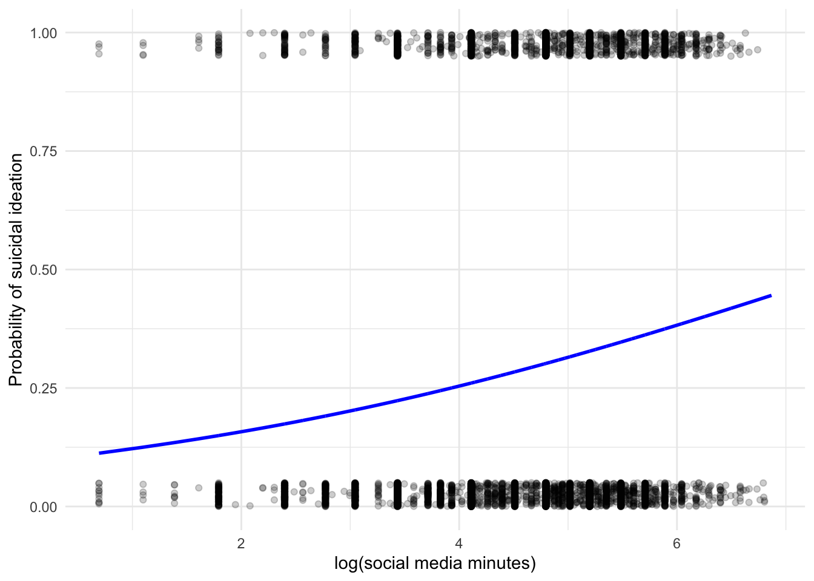

<!DOCTYPE html>
<html xmlns="http://www.w3.org/1999/xhtml" lang="en" xml:lang="en"><head>

<meta charset="utf-8">
<meta name="generator" content="quarto-1.6.42">

<meta name="viewport" content="width=device-width, initial-scale=1.0, user-scalable=yes">

<meta name="author" content="Shinyi Kang">

<title>Testing Haidt’s Claims</title>
<style>
code{white-space: pre-wrap;}
span.smallcaps{font-variant: small-caps;}
div.columns{display: flex; gap: min(4vw, 1.5em);}
div.column{flex: auto; overflow-x: auto;}
div.hanging-indent{margin-left: 1.5em; text-indent: -1.5em;}
ul.task-list{list-style: none;}
ul.task-list li input[type="checkbox"] {
  width: 0.8em;
  margin: 0 0.8em 0.2em -1em; /* quarto-specific, see https://github.com/quarto-dev/quarto-cli/issues/4556 */ 
  vertical-align: middle;
}
/* CSS for syntax highlighting */
pre > code.sourceCode { white-space: pre; position: relative; }
pre > code.sourceCode > span { line-height: 1.25; }
pre > code.sourceCode > span:empty { height: 1.2em; }
.sourceCode { overflow: visible; }
code.sourceCode > span { color: inherit; text-decoration: inherit; }
div.sourceCode { margin: 1em 0; }
pre.sourceCode { margin: 0; }
@media screen {
div.sourceCode { overflow: auto; }
}
@media print {
pre > code.sourceCode { white-space: pre-wrap; }
pre > code.sourceCode > span { display: inline-block; text-indent: -5em; padding-left: 5em; }
}
pre.numberSource code
  { counter-reset: source-line 0; }
pre.numberSource code > span
  { position: relative; left: -4em; counter-increment: source-line; }
pre.numberSource code > span > a:first-child::before
  { content: counter(source-line);
    position: relative; left: -1em; text-align: right; vertical-align: baseline;
    border: none; display: inline-block;
    -webkit-touch-callout: none; -webkit-user-select: none;
    -khtml-user-select: none; -moz-user-select: none;
    -ms-user-select: none; user-select: none;
    padding: 0 4px; width: 4em;
  }
pre.numberSource { margin-left: 3em;  padding-left: 4px; }
div.sourceCode
  {   }
@media screen {
pre > code.sourceCode > span > a:first-child::before { text-decoration: underline; }
}
</style>


<script src="haidt_analysis_08.2025_Shinyi_files/libs/clipboard/clipboard.min.js"></script>
<script src="haidt_analysis_08.2025_Shinyi_files/libs/quarto-html/quarto.js"></script>
<script src="haidt_analysis_08.2025_Shinyi_files/libs/quarto-html/popper.min.js"></script>
<script src="haidt_analysis_08.2025_Shinyi_files/libs/quarto-html/tippy.umd.min.js"></script>
<script src="haidt_analysis_08.2025_Shinyi_files/libs/quarto-html/anchor.min.js"></script>
<link href="haidt_analysis_08.2025_Shinyi_files/libs/quarto-html/tippy.css" rel="stylesheet">
<link href="haidt_analysis_08.2025_Shinyi_files/libs/quarto-html/quarto-syntax-highlighting-2f5df379a58b258e96c21c0638c20c03.css" rel="stylesheet" id="quarto-text-highlighting-styles">
<script src="haidt_analysis_08.2025_Shinyi_files/libs/bootstrap/bootstrap.min.js"></script>
<link href="haidt_analysis_08.2025_Shinyi_files/libs/bootstrap/bootstrap-icons.css" rel="stylesheet">
<link href="haidt_analysis_08.2025_Shinyi_files/libs/bootstrap/bootstrap-c0367b04c37547644fece4185067e4a7.min.css" rel="stylesheet" append-hash="true" id="quarto-bootstrap" data-mode="light">
<script src="haidt_analysis_08.2025_Shinyi_files/libs/quarto-contrib/glightbox/glightbox.min.js"></script>
<link href="haidt_analysis_08.2025_Shinyi_files/libs/quarto-contrib/glightbox/glightbox.min.css" rel="stylesheet">
<link href="haidt_analysis_08.2025_Shinyi_files/libs/quarto-contrib/glightbox/lightbox.css" rel="stylesheet">


</head>

<body>

<div id="quarto-content" class="page-columns page-rows-contents page-layout-article">
<div id="quarto-margin-sidebar" class="sidebar margin-sidebar">
  <nav id="TOC" role="doc-toc" class="toc-active">
    <h2 id="toc-title">Table of contents</h2>
   
  <ul>
  <li><a href="#exploratory-data-analysis" id="toc-exploratory-data-analysis" class="nav-link active" data-scroll-target="#exploratory-data-analysis">Exploratory Data Analysis</a>
  <ul>
  <li><a href="#predictor-variables" id="toc-predictor-variables" class="nav-link" data-scroll-target="#predictor-variables">Predictor Variables</a></li>
  <li><a href="#outcome-variables" id="toc-outcome-variables" class="nav-link" data-scroll-target="#outcome-variables">Outcome Variables</a></li>
  <li><a href="#measurement-analysis" id="toc-measurement-analysis" class="nav-link" data-scroll-target="#measurement-analysis">Measurement Analysis</a></li>
  </ul></li>
  <li><a href="#testing-the-claims" id="toc-testing-the-claims" class="nav-link" data-scroll-target="#testing-the-claims">Testing the Claims</a>
  <ul>
  <li><a href="#claim-1-well-being-particularly-depression-is-deteriorating" id="toc-claim-1-well-being-particularly-depression-is-deteriorating" class="nav-link" data-scroll-target="#claim-1-well-being-particularly-depression-is-deteriorating">Claim 1: Well-being, particularly depression, is deteriorating</a></li>
  <li><a href="#claim-2-social-media-negatively-impacts-youth-well-being" id="toc-claim-2-social-media-negatively-impacts-youth-well-being" class="nav-link" data-scroll-target="#claim-2-social-media-negatively-impacts-youth-well-being">Claim 2: Social media negatively impacts youth well-being</a>
  <ul class="collapse">
  <li><a href="#depressive-symptoms-and-social-media-time-1" id="toc-depressive-symptoms-and-social-media-time-1" class="nav-link" data-scroll-target="#depressive-symptoms-and-social-media-time-1">Depressive Symptoms and Social Media Time</a></li>
  <li><a href="#suicidal-ideation-and-social-media-time" id="toc-suicidal-ideation-and-social-media-time" class="nav-link" data-scroll-target="#suicidal-ideation-and-social-media-time">Suicidal Ideation and Social Media Time</a></li>
  </ul></li>
  <li><a href="#claim-3-social-networking-sites-are-more-harmful-than-messaging-apps." id="toc-claim-3-social-networking-sites-are-more-harmful-than-messaging-apps." class="nav-link" data-scroll-target="#claim-3-social-networking-sites-are-more-harmful-than-messaging-apps.">Claim 3: Social networking sites are more harmful than messaging apps.</a></li>
  <li><a href="#claim-4-effects-are-more-harmful-for-girls." id="toc-claim-4-effects-are-more-harmful-for-girls." class="nav-link" data-scroll-target="#claim-4-effects-are-more-harmful-for-girls.">Claim 4: Effects are more harmful for girls.</a></li>
  <li><a href="#claim-5-effects-are-more-harmful-for-younger-users." id="toc-claim-5-effects-are-more-harmful-for-younger-users." class="nav-link" data-scroll-target="#claim-5-effects-are-more-harmful-for-younger-users.">Claim 5: Effects are more harmful for younger users.</a></li>
  </ul></li>
  </ul>
</nav>
</div>
<main class="content" id="quarto-document-content">

<header id="title-block-header" class="quarto-title-block default">
<div class="quarto-title">
<div class="quarto-title-block"><div><h1 class="title">Testing Haidt’s Claims</h1><button type="button" class="btn code-tools-button" id="quarto-code-tools-source"><i class="bi"></i> Code</button></div></div>
<p class="subtitle lead">An Analysis of Mental Health Day Data (~06.2025)</p>
</div>


<div class="quarto-title-meta">

    <div>
    <div class="quarto-title-meta-heading">Author</div>
    <div class="quarto-title-meta-contents">
             <p>Shinyi Kang </p>
          </div>
  </div>
    
  
    <div>
    <div class="quarto-title-meta-heading">Modified</div>
    <div class="quarto-title-meta-contents">
      <p class="date-modified">August 26, 2025</p>
    </div>
  </div>
    
  </div>
  


</header>


<hr>
<div class="callout callout-style-simple callout-important no-icon callout-titled">
<div class="callout-header d-flex align-content-center">
<div class="callout-icon-container">
<i class="callout-icon no-icon"></i>
</div>
<div class="callout-title-container flex-fill">
<strong>Abstract</strong>
</div>
</div>
<div class="callout-body-container callout-body">
<p>by Tobias Dienlin</p>
<p>In his book “The Anxious Generation,” Jonathan Haidt argues that young people, especially girls in the Western world, are facing a mental health crisis marked by rising depression rates (Haidt, 2024). Haidt attributes this development to social media use, suggesting that it causes (1) social deprivation, (2) sleep deprivation, (3) attention fragmentation, and (4) addiction.&nbsp;</p>
<p>The book quickly became a bestseller, and several countries have since enacted laws to limit social media use among youth, often citing Haidt’s work (Reuters, 2024). However, his claims have faced criticism, particularly from communication scholars, who argue that he overstates the risks, overlooks positive aspects of social media, and selectively represents the literature (Dienlin, 2024; Fried, 2024; Odgers, 2024).&nbsp;</p>
<p>Although there is much literature on the effects of social media use on mental health (Hancock et al., 2022; Meier &amp; Reinecke, 2021; Orben, 2020), Haidt’s claims have not been analyzed comprehensively. So far, most data come from older populations, with high quality data on young users still being rare. Therefore, using a large-scale dataset from Austrian high schools this study empirically examines five of Haidt’s central claims:&nbsp;</p>
<ol type="1">
<li>Well-being, particularly depression, is deteriorating.</li>
<li>Social media negatively impacts youth well-being.&nbsp;</li>
<li>Social networking sites are more harmful than messaging apps.&nbsp;</li>
<li>Effects are more harmful for girls.&nbsp;</li>
<li>Effects are more harmful for younger users. &nbsp;</li>
</ol>
<p>The dataset, collected over the past two years, includes responses from more than 20.000 participants (Mean age = 14 years; 56% girls). It measures well-being (depression symptoms, satisfaction across seven life domains), media use (social networking, messaging, or streaming), and control variables (sociodemographics, family background). Regression analyses will be used to examine potential effects on well-being while accounting for third variables. To qualify as relevant, effects need to be significantly larger than beta = .05 (Funder &amp; Ozer, 2019).</p>
</div>
</div>
<hr>
<section id="exploratory-data-analysis" class="level2">
<h2 class="anchored" data-anchor-id="exploratory-data-analysis">Exploratory Data Analysis</h2>
<section id="predictor-variables" class="level3">
<h3 class="anchored" data-anchor-id="predictor-variables">Predictor Variables</h3>
<div class="tabset-margin-container"></div><div class="panel-tabset">
<ul class="nav nav-tabs" role="tablist"><li class="nav-item" role="presentation"><a class="nav-link active" id="tabset-1-1-tab" data-bs-toggle="tab" data-bs-target="#tabset-1-1" role="tab" aria-controls="tabset-1-1" aria-selected="true" href="">Participant Demographics</a></li><li class="nav-item" role="presentation"><a class="nav-link" id="tabset-1-2-tab" data-bs-toggle="tab" data-bs-target="#tabset-1-2" role="tab" aria-controls="tabset-1-2" aria-selected="false" href="">Digital Device Time</a></li></ul>
<div class="tab-content">
<div id="tabset-1-1" class="tab-pane active" role="tabpanel" aria-labelledby="tabset-1-1-tab">
<div class="callout callout-style-simple callout-note no-icon callout-titled">
<div class="callout-header d-flex align-content-center" data-bs-toggle="collapse" data-bs-target=".callout-2-contents" aria-controls="callout-2" aria-expanded="false" aria-label="Toggle callout">
<div class="callout-icon-container">
<i class="callout-icon no-icon"></i>
</div>
<div class="callout-title-container flex-fill">
Tables
</div>
<div class="callout-btn-toggle d-inline-block border-0 py-1 ps-1 pe-0 float-end"><i class="callout-toggle"></i></div>
</div>
<div id="callout-2" class="callout-2-contents callout-collapse collapse">
<div class="callout-body-container callout-body">
<div class="cell">
<div class="cell-output cell-output-stdout">
<pre><code>

dem_age</code></pre>
</div>
<div class="cell-output cell-output-stdout">
<pre><code>
  10   11   12   13   14   15   16   17   18   19   20   21   22   23   24 
1114 2867 3092 3277 3308 2841 2564 2141 1275  402   96   51   20    4    6 </code></pre>
</div>
<div class="cell-output cell-output-stdout">
<pre><code>

dem_gender

         male        female diverse/other          &lt;NA&gt; 
         9721         13156           329          1423 


dem_liv_wi_bth_prnts

   Min. 1st Qu.  Median    Mean 3rd Qu.    Max.    NA's 
 0.0000  1.0000  1.0000  0.7935  1.0000  1.0000    1400 


dem_own_room

   Min. 1st Qu.  Median    Mean 3rd Qu.    Max.    NA's 
  0.000   1.000   1.000   0.865   1.000   1.000    1383 


dem_diag_psych

   Min. 1st Qu.  Median    Mean 3rd Qu.    Max.    NA's 
  1.000   1.000   1.000   1.095   1.000   2.000    1474 


dem_AUS

   Min. 1st Qu.  Median    Mean 3rd Qu.    Max.    NA's 
 0.0000  1.0000  1.0000  0.8916  1.0000  1.0000    1347 


dem_AUS_parents

   Min. 1st Qu.  Median    Mean 3rd Qu.    Max.    NA's 
  0.000   0.000   1.000   0.634   1.000   1.000    1415 


dem_class

   Min. 1st Qu.  Median    Mean 3rd Qu.    Max.    NA's 
  0.000   3.000   6.000   5.787   8.000  19.000    1786 


dem_weight

   Min. 1st Qu.  Median    Mean 3rd Qu.    Max.    NA's 
  11.00   44.00   53.00   54.26   63.00  185.00    3656 


dem_income

   Min. 1st Qu.  Median    Mean 3rd Qu.    Max.    NA's 
    0.0     5.0    10.0    17.8    20.0   480.0    4672 


dem_siblings

   Min. 1st Qu.  Median    Mean 3rd Qu.    Max.    NA's 
  0.000   1.000   1.000   1.487   2.000  19.000    1812 


dem_height

   Min. 1st Qu.  Median    Mean 3rd Qu.    Max.    NA's 
   55.0   156.0   165.0   164.2   172.0   248.0    2494 </code></pre>
</div>
</div>
</div>
</div>
</div>
<section id="figures" class="level4">
<h4 class="anchored" data-anchor-id="figures">Figures</h4>
<div>

</div>
<div class="cell quarto-layout-panel" data-lightbox-group="demographics" data-layout-ncol="3">
<div class="quarto-layout-row">
<div class="quarto-layout-cell" style="flex-basis: 33.3%;justify-content: flex-start;">
<div class="quarto-figure quarto-figure-center">
<figure class="figure">
<p><a href="haidt_analysis_08.2025_Shinyi_files/figure-html/other%20dem%20variables%20plots-1.png" class="lightbox" data-gallery="quarto-lightbox-gallery-1" title="age"></a></p>
<figcaption>age</figcaption>
</figure>
</div>
</div>
<div class="quarto-layout-cell" style="flex-basis: 33.3%;justify-content: flex-start;">
<div class="quarto-figure quarto-figure-center">
<figure class="figure">
<p><a href="haidt_analysis_08.2025_Shinyi_files/figure-html/other%20dem%20variables%20plots-2.png" class="lightbox" data-gallery="quarto-lightbox-gallery-2" title="gender"></a></p>
<figcaption>gender</figcaption>
</figure>
</div>
</div>
<div class="quarto-layout-cell" style="flex-basis: 33.3%;justify-content: flex-start;">
<div class="quarto-figure quarto-figure-center">
<figure class="figure">
<p><a href="haidt_analysis_08.2025_Shinyi_files/figure-html/other%20dem%20variables%20plots-3.png" class="lightbox" data-gallery="quarto-lightbox-gallery-3" title="liv_wi_bth_prnts"></a></p>
<figcaption>liv_wi_bth_prnts</figcaption>
</figure>
</div>
</div>
</div>
<div class="quarto-layout-row">
<div class="quarto-layout-cell" style="flex-basis: 33.3%;justify-content: flex-start;">
<div class="quarto-figure quarto-figure-center">
<figure class="figure">
<p><a href="haidt_analysis_08.2025_Shinyi_files/figure-html/other%20dem%20variables%20plots-4.png" class="lightbox" data-gallery="quarto-lightbox-gallery-4" title="own_room"></a></p>
<figcaption>own_room</figcaption>
</figure>
</div>
</div>
<div class="quarto-layout-cell" style="flex-basis: 33.3%;justify-content: flex-start;">
<div class="quarto-figure quarto-figure-center">
<figure class="figure">
<p><a href="haidt_analysis_08.2025_Shinyi_files/figure-html/other%20dem%20variables%20plots-5.png" class="lightbox" data-gallery="quarto-lightbox-gallery-5" title="diag_psych"></a></p>
<figcaption>diag_psych</figcaption>
</figure>
</div>
</div>
<div class="quarto-layout-cell" style="flex-basis: 33.3%;justify-content: flex-start;">
<div class="quarto-figure quarto-figure-center">
<figure class="figure">
<p><a href="haidt_analysis_08.2025_Shinyi_files/figure-html/other%20dem%20variables%20plots-6.png" class="lightbox" data-gallery="quarto-lightbox-gallery-6" title="AUS"></a></p>
<figcaption>AUS</figcaption>
</figure>
</div>
</div>
</div>
<div class="quarto-layout-row">
<div class="quarto-layout-cell" style="flex-basis: 33.3%;justify-content: flex-start;">
<div class="quarto-figure quarto-figure-center">
<figure class="figure">
<p><a href="haidt_analysis_08.2025_Shinyi_files/figure-html/other%20dem%20variables%20plots-7.png" class="lightbox" data-gallery="quarto-lightbox-gallery-7" title="AUS_parents"></a></p>
<figcaption>AUS_parents</figcaption>
</figure>
</div>
</div>
<div class="quarto-layout-cell" style="flex-basis: 33.3%;justify-content: flex-start;">
<div class="quarto-figure quarto-figure-center">
<figure class="figure">
<p><a href="haidt_analysis_08.2025_Shinyi_files/figure-html/other%20dem%20variables%20plots-8.png" class="lightbox" data-gallery="quarto-lightbox-gallery-8" title="age"></a></p>
<figcaption>age</figcaption>
</figure>
</div>
</div>
<div class="quarto-layout-cell" style="flex-basis: 33.3%;justify-content: flex-start;">
<div class="quarto-figure quarto-figure-center">
<figure class="figure">
<p><a href="haidt_analysis_08.2025_Shinyi_files/figure-html/other%20dem%20variables%20plots-9.png" class="lightbox" data-gallery="quarto-lightbox-gallery-9" title="class"></a></p>
<figcaption>class</figcaption>
</figure>
</div>
</div>
</div>
<div class="quarto-layout-row">
<div class="quarto-layout-cell" style="flex-basis: 33.3%;justify-content: flex-start;">
<div class="quarto-figure quarto-figure-center">
<figure class="figure">
<p><a href="haidt_analysis_08.2025_Shinyi_files/figure-html/other%20dem%20variables%20plots-10.png" class="lightbox" data-gallery="quarto-lightbox-gallery-10" title="weight"></a></p>
<figcaption>weight</figcaption>
</figure>
</div>
</div>
<div class="quarto-layout-cell" style="flex-basis: 33.3%;justify-content: flex-start;">
<div class="quarto-figure quarto-figure-center">
<figure class="figure">
<p><a href="haidt_analysis_08.2025_Shinyi_files/figure-html/other%20dem%20variables%20plots-11.png" class="lightbox" data-gallery="quarto-lightbox-gallery-11" title="income"></a></p>
<figcaption>income</figcaption>
</figure>
</div>
</div>
<div class="quarto-layout-cell" style="flex-basis: 33.3%;justify-content: flex-start;">
<div class="quarto-figure quarto-figure-center">
<figure class="figure">
<p><a href="haidt_analysis_08.2025_Shinyi_files/figure-html/other%20dem%20variables%20plots-12.png" class="lightbox" data-gallery="quarto-lightbox-gallery-12" title="siblings"></a></p>
<figcaption>siblings</figcaption>
</figure>
</div>
</div>
</div>
</div>
</section>
</div>
<div id="tabset-1-2" class="tab-pane" role="tabpanel" aria-labelledby="tabset-1-2-tab">
<div class="callout callout-style-simple callout-note no-icon callout-titled">
<div class="callout-header d-flex align-content-center" data-bs-toggle="collapse" data-bs-target=".callout-3-contents" aria-controls="callout-3" aria-expanded="false" aria-label="Toggle callout">
<div class="callout-icon-container">
<i class="callout-icon no-icon"></i>
</div>
<div class="callout-title-container flex-fill">
Tables
</div>
<div class="callout-btn-toggle d-inline-block border-0 py-1 ps-1 pe-0 float-end"><i class="callout-toggle"></i></div>
</div>
<div id="callout-3" class="callout-3-contents callout-collapse collapse">
<div class="callout-body-container callout-body">
<div class="cell">
<div class="cell-output cell-output-stdout">
<pre><code>
 mins_smartphone 
   Min. 1st Qu.  Median    Mean 3rd Qu.    Max. 
    0.0    90.0   180.0   213.7   300.0   991.0 

 mins_streaming 
   Min. 1st Qu.  Median    Mean 3rd Qu.    Max. 
   0.00   30.00   60.00   89.18  120.00  960.00 

 mins_tv 
   Min. 1st Qu.  Median    Mean 3rd Qu.    Max. 
   0.00    0.00   20.00   42.81   60.00  960.00 

 mins_socnet 
   Min. 1st Qu.  Median    Mean 3rd Qu.    Max. 
   0.00    0.00   60.00   91.79  130.00  960.00 

 mins_messenger 
   Min. 1st Qu.  Median    Mean 3rd Qu.    Max. 
    0.0    15.0    30.0    61.8    60.0   968.0 

 mins_reading 
   Min. 1st Qu.  Median    Mean 3rd Qu.    Max. 
   0.00    0.00   10.00   35.51   45.00  990.00 

 mins_news 
   Min. 1st Qu.  Median    Mean 3rd Qu.    Max. 
   0.00    0.00   10.00   22.15   27.00  960.00 

 mins_vidgames 
   Min. 1st Qu.  Median    Mean 3rd Qu.    Max. 
   0.00    0.00   30.00   69.26   90.00  960.00 

 mins_ai 
   Min. 1st Qu.  Median    Mean 3rd Qu.    Max.    NA's 
   0.00    0.00    0.00   12.94   10.00  900.00    4521 </code></pre>
</div>
</div>
</div>
</div>
</div>
<section id="figures-1" class="level4">
<h4 class="anchored" data-anchor-id="figures-1">Figures</h4>
<p><strong>Raw Digital Device Time Distribution</strong></p>
<div>

</div>
<div class="cell quarto-layout-panel" data-lightbox-group="mins" data-layout-ncol="3">
<div class="quarto-layout-row">
<div class="quarto-layout-cell" style="flex-basis: 33.3%;justify-content: flex-start;">
<div class="quarto-figure quarto-figure-center">
<figure class="figure">
<p><a href="haidt_analysis_08.2025_Shinyi_files/figure-html/raw%20digital%20device%20time%20figures-1.png" class="lightbox" data-gallery="quarto-lightbox-gallery-13" title="smartphone"></a></p>
<figcaption>smartphone</figcaption>
</figure>
</div>
</div>
<div class="quarto-layout-cell" style="flex-basis: 33.3%;justify-content: flex-start;">
<div class="quarto-figure quarto-figure-center">
<figure class="figure">
<p><a href="haidt_analysis_08.2025_Shinyi_files/figure-html/raw%20digital%20device%20time%20figures-2.png" class="lightbox" data-gallery="quarto-lightbox-gallery-14" title="streaming"></a></p>
<figcaption>streaming</figcaption>
</figure>
</div>
</div>
<div class="quarto-layout-cell" style="flex-basis: 33.3%;justify-content: flex-start;">
<div class="quarto-figure quarto-figure-center">
<figure class="figure">
<p><a href="haidt_analysis_08.2025_Shinyi_files/figure-html/raw%20digital%20device%20time%20figures-3.png" class="lightbox" data-gallery="quarto-lightbox-gallery-15" title="tv"></a></p>
<figcaption>tv</figcaption>
</figure>
</div>
</div>
</div>
<div class="quarto-layout-row">
<div class="quarto-layout-cell" style="flex-basis: 33.3%;justify-content: flex-start;">
<div class="quarto-figure quarto-figure-center">
<figure class="figure">
<p><a href="haidt_analysis_08.2025_Shinyi_files/figure-html/raw%20digital%20device%20time%20figures-4.png" class="lightbox" data-gallery="quarto-lightbox-gallery-16" title="socnet"></a></p>
<figcaption>socnet</figcaption>
</figure>
</div>
</div>
<div class="quarto-layout-cell" style="flex-basis: 33.3%;justify-content: flex-start;">
<div class="quarto-figure quarto-figure-center">
<figure class="figure">
<p><a href="haidt_analysis_08.2025_Shinyi_files/figure-html/raw%20digital%20device%20time%20figures-5.png" class="lightbox" data-gallery="quarto-lightbox-gallery-17" title="messenger"></a></p>
<figcaption>messenger</figcaption>
</figure>
</div>
</div>
<div class="quarto-layout-cell" style="flex-basis: 33.3%;justify-content: flex-start;">
<div class="quarto-figure quarto-figure-center">
<figure class="figure">
<p><a href="haidt_analysis_08.2025_Shinyi_files/figure-html/raw%20digital%20device%20time%20figures-6.png" class="lightbox" data-gallery="quarto-lightbox-gallery-18" title="reading"></a></p>
<figcaption>reading</figcaption>
</figure>
</div>
</div>
</div>
<div class="quarto-layout-row">
<div class="quarto-layout-cell" style="flex-basis: 33.3%;justify-content: flex-start;">
<div class="quarto-figure quarto-figure-center">
<figure class="figure">
<p><a href="haidt_analysis_08.2025_Shinyi_files/figure-html/raw%20digital%20device%20time%20figures-7.png" class="lightbox" data-gallery="quarto-lightbox-gallery-19" title="news"></a></p>
<figcaption>news</figcaption>
</figure>
</div>
</div>
<div class="quarto-layout-cell" style="flex-basis: 33.3%;justify-content: flex-start;">
<div class="quarto-figure quarto-figure-center">
<figure class="figure">
<p><a href="haidt_analysis_08.2025_Shinyi_files/figure-html/raw%20digital%20device%20time%20figures-8.png" class="lightbox" data-gallery="quarto-lightbox-gallery-20" title="vidgames"></a></p>
<figcaption>vidgames</figcaption>
</figure>
</div>
</div>
<div class="quarto-layout-cell" style="flex-basis: 33.3%;justify-content: flex-start;">
<div class="quarto-figure quarto-figure-center">
<figure class="figure">
<p><a href="haidt_analysis_08.2025_Shinyi_files/figure-html/raw%20digital%20device%20time%20figures-9.png" class="lightbox" data-gallery="quarto-lightbox-gallery-21" title="ai"></a></p>
<figcaption>ai</figcaption>
</figure>
</div>
</div>
</div>
</div>
<p><strong>Log-Transformed Digital Device Time Distributions</strong></p>
<div>

</div>
<div class="cell quarto-layout-panel" data-lightbox-group="log-mins" data-layout-ncol="3">
<div class="quarto-layout-row">
<div class="quarto-layout-cell" style="flex-basis: 33.3%;justify-content: flex-start;">
<div class="quarto-figure quarto-figure-center">
<figure class="figure">
<p><a href="haidt_analysis_08.2025_Shinyi_files/figure-html/log-transformed%20digital%20device%20time%20figures-1.png" class="lightbox" data-gallery="quarto-lightbox-gallery-22" title="smartphone"></a></p>
<figcaption>smartphone</figcaption>
</figure>
</div>
</div>
<div class="quarto-layout-cell" style="flex-basis: 33.3%;justify-content: flex-start;">
<div class="quarto-figure quarto-figure-center">
<figure class="figure">
<p><a href="haidt_analysis_08.2025_Shinyi_files/figure-html/log-transformed%20digital%20device%20time%20figures-2.png" class="lightbox" data-gallery="quarto-lightbox-gallery-23" title="streaming"></a></p>
<figcaption>streaming</figcaption>
</figure>
</div>
</div>
<div class="quarto-layout-cell" style="flex-basis: 33.3%;justify-content: flex-start;">
<div class="quarto-figure quarto-figure-center">
<figure class="figure">
<p><a href="haidt_analysis_08.2025_Shinyi_files/figure-html/log-transformed%20digital%20device%20time%20figures-3.png" class="lightbox" data-gallery="quarto-lightbox-gallery-24" title="tv"></a></p>
<figcaption>tv</figcaption>
</figure>
</div>
</div>
</div>
<div class="quarto-layout-row">
<div class="quarto-layout-cell" style="flex-basis: 33.3%;justify-content: flex-start;">
<div class="quarto-figure quarto-figure-center">
<figure class="figure">
<p><a href="haidt_analysis_08.2025_Shinyi_files/figure-html/log-transformed%20digital%20device%20time%20figures-4.png" class="lightbox" data-gallery="quarto-lightbox-gallery-25" title="socnet"></a></p>
<figcaption>socnet</figcaption>
</figure>
</div>
</div>
<div class="quarto-layout-cell" style="flex-basis: 33.3%;justify-content: flex-start;">
<div class="quarto-figure quarto-figure-center">
<figure class="figure">
<p><a href="haidt_analysis_08.2025_Shinyi_files/figure-html/log-transformed%20digital%20device%20time%20figures-5.png" class="lightbox" data-gallery="quarto-lightbox-gallery-26" title="messenger"></a></p>
<figcaption>messenger</figcaption>
</figure>
</div>
</div>
<div class="quarto-layout-cell" style="flex-basis: 33.3%;justify-content: flex-start;">
<div class="quarto-figure quarto-figure-center">
<figure class="figure">
<p><a href="haidt_analysis_08.2025_Shinyi_files/figure-html/log-transformed%20digital%20device%20time%20figures-6.png" class="lightbox" data-gallery="quarto-lightbox-gallery-27" title="reading"></a></p>
<figcaption>reading</figcaption>
</figure>
</div>
</div>
</div>
<div class="quarto-layout-row">
<div class="quarto-layout-cell" style="flex-basis: 33.3%;justify-content: flex-start;">
<div class="quarto-figure quarto-figure-center">
<figure class="figure">
<p><a href="haidt_analysis_08.2025_Shinyi_files/figure-html/log-transformed%20digital%20device%20time%20figures-7.png" class="lightbox" data-gallery="quarto-lightbox-gallery-28" title="news"></a></p>
<figcaption>news</figcaption>
</figure>
</div>
</div>
<div class="quarto-layout-cell" style="flex-basis: 33.3%;justify-content: flex-start;">
<div class="quarto-figure quarto-figure-center">
<figure class="figure">
<p><a href="haidt_analysis_08.2025_Shinyi_files/figure-html/log-transformed%20digital%20device%20time%20figures-8.png" class="lightbox" data-gallery="quarto-lightbox-gallery-29" title="vidgames"></a></p>
<figcaption>vidgames</figcaption>
</figure>
</div>
</div>
<div class="quarto-layout-cell" style="flex-basis: 33.3%;justify-content: flex-start;">
<div class="quarto-figure quarto-figure-center">
<figure class="figure">
<p><a href="haidt_analysis_08.2025_Shinyi_files/figure-html/log-transformed%20digital%20device%20time%20figures-9.png" class="lightbox" data-gallery="quarto-lightbox-gallery-30" title="ai"></a></p>
<figcaption>ai</figcaption>
</figure>
</div>
</div>
</div>
</div>
</section>
</div>
</div>
</div>
</section>
<section id="outcome-variables" class="level3">
<h3 class="anchored" data-anchor-id="outcome-variables">Outcome Variables</h3>
<div class="tabset-margin-container"></div><div class="panel-tabset">
<ul class="nav nav-tabs" role="tablist"><li class="nav-item" role="presentation"><a class="nav-link active" id="tabset-2-1-tab" data-bs-toggle="tab" data-bs-target="#tabset-2-1" role="tab" aria-controls="tabset-2-1" aria-selected="true" href="">Depression Scale (PHQ-9)</a></li><li class="nav-item" role="presentation"><a class="nav-link" id="tabset-2-2-tab" data-bs-toggle="tab" data-bs-target="#tabset-2-2" role="tab" aria-controls="tabset-2-2" aria-selected="false" href="">Satisfaction Scale</a></li></ul>
<div class="tab-content">
<div id="tabset-2-1" class="tab-pane active" role="tabpanel" aria-labelledby="tabset-2-1-tab">
<p><strong>Composite Score</strong></p>
<p>PHQ-9 composite scores (range: 0–27) were computed by summing responses to the nine items, each scored from 0 to 3, in accordance with the standard scoring procedure (Kroenke et al.&nbsp;2001). When respondents missed up to two items, prorated scores were calculated based on their completed items. If more than two items were missing, no composite score was generated.</p>
<p>Based on the composite score, each respondent’s depressive symptom severity was categorized according to set cutoffs: minimal (0–4), mild (5–9), moderate (10–14), moderately severe (15–19), and severe (20–27).</p>
<div class="cell">
<div class="cell-output-display">
<div>
<figure class="figure">
<p><a href="haidt_analysis_08.2025_Shinyi_files/figure-html/unnamed-chunk-3-1.png" class="lightbox" data-gallery="quarto-lightbox-gallery-31"></a></p>
</figure>
</div>
</div>
<div class="cell-output cell-output-stdout">
<pre><code># A tibble: 6 × 3
  phq9_severity         n percent
  &lt;chr&gt;             &lt;int&gt;   &lt;dbl&gt;
1 Mild               8386    34  
2 Minimal/None       6935    28.2
3 Moderate           4659    18.9
4 Moderately severe  2239     9.1
5 Severe             1045     4.2
6 &lt;NA&gt;               1365     5.5</code></pre>
</div>
</div>
<p><strong>Items</strong></p>
<div class="callout callout-style-simple callout-note no-icon callout-titled">
<div class="callout-header d-flex align-content-center" data-bs-toggle="collapse" data-bs-target=".callout-4-contents" aria-controls="callout-4" aria-expanded="false" aria-label="Toggle callout">
<div class="callout-icon-container">
<i class="callout-icon no-icon"></i>
</div>
<div class="callout-title-container flex-fill">
Tables
</div>
<div class="callout-btn-toggle d-inline-block border-0 py-1 ps-1 pe-0 float-end"><i class="callout-toggle"></i></div>
</div>
<div id="callout-4" class="callout-4-contents callout-collapse collapse">
<div class="callout-body-container callout-body">
<div class="cell">
<div class="cell-output cell-output-stdout">
<pre><code>
 prob_listless 

    0     1     2     3  &lt;NA&gt; 
 6522 11235  3585  1961  1326 

 prob_depressed 

    0     1     2     3  &lt;NA&gt; 
 7764 10749  3125  1647  1344 

 prob_sleep 

   0    1    2    3 &lt;NA&gt; 
8940 7763 3414 3167 1345 

 prob_tired 

    0     1     2     3  &lt;NA&gt; 
 3713 10302  5129  4154  1331 

 prob_eating 

    0     1     2     3  &lt;NA&gt; 
10700  6888  3254  2396  1391 

 prob_confidence 

   0    1    2    3 &lt;NA&gt; 
9521 7873 3172 2693 1370 

 prob_focus 

   0    1    2    3 &lt;NA&gt; 
9682 8258 3235 2106 1348 

 prob_activity 

    0     1     2     3  &lt;NA&gt; 
14381  6111  1744   889  1504 

 prob_suicidal 

    0     1     2     3  &lt;NA&gt; 
16878  4021  1198  1064  1468 </code></pre>
</div>
</div>
</div>
</div>
</div>
<div>

</div>
<div class="cell quarto-layout-panel" data-lightbox-group="phq-9-items" data-layout-ncol="3">
<div class="quarto-layout-row">
<div class="quarto-layout-cell" style="flex-basis: 33.3%;justify-content: flex-start;">
<div class="quarto-figure quarto-figure-center">
<figure class="figure">
<p><a href="haidt_analysis_08.2025_Shinyi_files/figure-html/Depression%20Scale%20Items-1.png" class="lightbox" data-gallery="quarto-lightbox-gallery-32" title="listless"></a></p>
<figcaption>listless</figcaption>
</figure>
</div>
</div>
<div class="quarto-layout-cell" style="flex-basis: 33.3%;justify-content: flex-start;">
<div class="quarto-figure quarto-figure-center">
<figure class="figure">
<p><a href="haidt_analysis_08.2025_Shinyi_files/figure-html/Depression%20Scale%20Items-2.png" class="lightbox" data-gallery="quarto-lightbox-gallery-33" title="depressed"></a></p>
<figcaption>depressed</figcaption>
</figure>
</div>
</div>
<div class="quarto-layout-cell" style="flex-basis: 33.3%;justify-content: flex-start;">
<div class="quarto-figure quarto-figure-center">
<figure class="figure">
<p><a href="haidt_analysis_08.2025_Shinyi_files/figure-html/Depression%20Scale%20Items-3.png" class="lightbox" data-gallery="quarto-lightbox-gallery-34" title="sleep"></a></p>
<figcaption>sleep</figcaption>
</figure>
</div>
</div>
</div>
<div class="quarto-layout-row">
<div class="quarto-layout-cell" style="flex-basis: 33.3%;justify-content: flex-start;">
<div class="quarto-figure quarto-figure-center">
<figure class="figure">
<p><a href="haidt_analysis_08.2025_Shinyi_files/figure-html/Depression%20Scale%20Items-4.png" class="lightbox" data-gallery="quarto-lightbox-gallery-35" title="tired"></a></p>
<figcaption>tired</figcaption>
</figure>
</div>
</div>
<div class="quarto-layout-cell" style="flex-basis: 33.3%;justify-content: flex-start;">
<div class="quarto-figure quarto-figure-center">
<figure class="figure">
<p><a href="haidt_analysis_08.2025_Shinyi_files/figure-html/Depression%20Scale%20Items-5.png" class="lightbox" data-gallery="quarto-lightbox-gallery-36" title="eating"></a></p>
<figcaption>eating</figcaption>
</figure>
</div>
</div>
<div class="quarto-layout-cell" style="flex-basis: 33.3%;justify-content: flex-start;">
<div class="quarto-figure quarto-figure-center">
<figure class="figure">
<p><a href="haidt_analysis_08.2025_Shinyi_files/figure-html/Depression%20Scale%20Items-6.png" class="lightbox" data-gallery="quarto-lightbox-gallery-37" title="confidence"></a></p>
<figcaption>confidence</figcaption>
</figure>
</div>
</div>
</div>
<div class="quarto-layout-row">
<div class="quarto-layout-cell" style="flex-basis: 33.3%;justify-content: flex-start;">
<div class="quarto-figure quarto-figure-center">
<figure class="figure">
<p><a href="haidt_analysis_08.2025_Shinyi_files/figure-html/Depression%20Scale%20Items-7.png" class="lightbox" data-gallery="quarto-lightbox-gallery-38" title="focus"></a></p>
<figcaption>focus</figcaption>
</figure>
</div>
</div>
<div class="quarto-layout-cell" style="flex-basis: 33.3%;justify-content: flex-start;">
<div class="quarto-figure quarto-figure-center">
<figure class="figure">
<p><a href="haidt_analysis_08.2025_Shinyi_files/figure-html/Depression%20Scale%20Items-8.png" class="lightbox" data-gallery="quarto-lightbox-gallery-39" title="activity"></a></p>
<figcaption>activity</figcaption>
</figure>
</div>
</div>
<div class="quarto-layout-cell" style="flex-basis: 33.3%;justify-content: flex-start;">
<div class="quarto-figure quarto-figure-center">
<figure class="figure">
<p><a href="haidt_analysis_08.2025_Shinyi_files/figure-html/Depression%20Scale%20Items-9.png" class="lightbox" data-gallery="quarto-lightbox-gallery-40" title="suicidal"></a></p>
<figcaption>suicidal</figcaption>
</figure>
</div>
</div>
</div>
</div>
</div>
<div id="tabset-2-2" class="tab-pane" role="tabpanel" aria-labelledby="tabset-2-2-tab">
<div class="callout callout-style-simple callout-note no-icon callout-titled">
<div class="callout-header d-flex align-content-center" data-bs-toggle="collapse" data-bs-target=".callout-5-contents" aria-controls="callout-5" aria-expanded="true" aria-label="Toggle callout">
<div class="callout-icon-container">
<i class="callout-icon no-icon"></i>
</div>
<div class="callout-title-container flex-fill">
Tables
</div>
<div class="callout-btn-toggle d-inline-block border-0 py-1 ps-1 pe-0 float-end"><i class="callout-toggle"></i></div>
</div>
<div id="callout-5" class="callout-5-contents callout-collapse collapse show">
<div class="callout-body-container callout-body">
<div class="cell">
<div class="cell-output cell-output-stdout">
<pre><code>
 sat_happy 

   1    2    3    4    5    6    7 &lt;NA&gt; 
 683  925 1817 4170 6184 6168 3538 1144 

 sat_life 

   1    2    3    4    5    6    7 &lt;NA&gt; 
 560  947 1594 2842 4973 6798 5755 1160 

 sat_school 

   1    2    3    4    5    6    7 &lt;NA&gt; 
1106 1148 1815 3848 5862 6092 3609 1149 

 sat_family 

    1     2     3     4     5     6     7  &lt;NA&gt; 
  310   413   599  1280  2321  4693 13856  1157 

 sat_friend 

    1     2     3     4     5     6     7  &lt;NA&gt; 
  149   172   294   933  2722  7160 12035  1164 

 sat_health 

   1    2    3    4    5    6    7 &lt;NA&gt; 
 741  832 1497 2740 4561 6660 6439 1159 

 sat_looks 

   1    2    3    4    5    6    7 &lt;NA&gt; 
1403 1463 1846 3283 4822 5926 4716 1170 </code></pre>
</div>
</div>
</div>
</div>
</div>
<div>

</div>
<div class="cell quarto-layout-panel" data-lightbox-group="sat-items" data-layout-ncol="3">
<div class="quarto-layout-row">
<div class="quarto-layout-cell" style="flex-basis: 33.3%;justify-content: flex-start;">
<div class="quarto-figure quarto-figure-center">
<figure class="figure">
<p><a href="haidt_analysis_08.2025_Shinyi_files/figure-html/satisfaction%20by%20item-1.png" class="lightbox" data-gallery="quarto-lightbox-gallery-41" title="happy"></a></p>
<figcaption>happy</figcaption>
</figure>
</div>
</div>
<div class="quarto-layout-cell" style="flex-basis: 33.3%;justify-content: flex-start;">
<div class="quarto-figure quarto-figure-center">
<figure class="figure">
<p><a href="haidt_analysis_08.2025_Shinyi_files/figure-html/satisfaction%20by%20item-2.png" class="lightbox" data-gallery="quarto-lightbox-gallery-42" title="life"></a></p>
<figcaption>life</figcaption>
</figure>
</div>
</div>
<div class="quarto-layout-cell" style="flex-basis: 33.3%;justify-content: flex-start;">
<div class="quarto-figure quarto-figure-center">
<figure class="figure">
<p><a href="haidt_analysis_08.2025_Shinyi_files/figure-html/satisfaction%20by%20item-3.png" class="lightbox" data-gallery="quarto-lightbox-gallery-43" title="school"></a></p>
<figcaption>school</figcaption>
</figure>
</div>
</div>
</div>
<div class="quarto-layout-row">
<div class="quarto-layout-cell" style="flex-basis: 33.3%;justify-content: flex-start;">
<div class="quarto-figure quarto-figure-center">
<figure class="figure">
<p><a href="haidt_analysis_08.2025_Shinyi_files/figure-html/satisfaction%20by%20item-4.png" class="lightbox" data-gallery="quarto-lightbox-gallery-44" title="family"></a></p>
<figcaption>family</figcaption>
</figure>
</div>
</div>
<div class="quarto-layout-cell" style="flex-basis: 33.3%;justify-content: flex-start;">
<div class="quarto-figure quarto-figure-center">
<figure class="figure">
<p><a href="haidt_analysis_08.2025_Shinyi_files/figure-html/satisfaction%20by%20item-5.png" class="lightbox" data-gallery="quarto-lightbox-gallery-45" title="friend"></a></p>
<figcaption>friend</figcaption>
</figure>
</div>
</div>
<div class="quarto-layout-cell" style="flex-basis: 33.3%;justify-content: flex-start;">
<div class="quarto-figure quarto-figure-center">
<figure class="figure">
<p><a href="haidt_analysis_08.2025_Shinyi_files/figure-html/satisfaction%20by%20item-6.png" class="lightbox" data-gallery="quarto-lightbox-gallery-46" title="health"></a></p>
<figcaption>health</figcaption>
</figure>
</div>
</div>
</div>
<div class="quarto-layout-row">
<div class="quarto-layout-cell" style="flex-basis: 33.3%;justify-content: flex-start;">
<div class="quarto-figure quarto-figure-center">
<figure class="figure">
<p><a href="haidt_analysis_08.2025_Shinyi_files/figure-html/satisfaction%20by%20item-7.png" class="lightbox" data-gallery="quarto-lightbox-gallery-47" title="looks"></a></p>
<figcaption>looks</figcaption>
</figure>
</div>
</div>
</div>
</div>
</div>
</div>
</div>
</section>
<section id="measurement-analysis" class="level3">
<h3 class="anchored" data-anchor-id="measurement-analysis">Measurement Analysis</h3>
<p>Our outcome variables of interest, the PHQ-9 item responses and the satisfaction responses, demonstrate good internal consistency with Cronbach’s alpha of .85 and .84, respectively. They do not have problematic or outlier items. They also seem to be unidimensional. Detailed results are available in the toggles below.</p>
<div class="callout callout-style-simple callout-note no-icon callout-titled">
<div class="callout-header d-flex align-content-center" data-bs-toggle="collapse" data-bs-target=".callout-6-contents" aria-controls="callout-6" aria-expanded="false" aria-label="Toggle callout">
<div class="callout-icon-container">
<i class="callout-icon no-icon"></i>
</div>
<div class="callout-title-container flex-fill">
PHQ-9
</div>
<div class="callout-btn-toggle d-inline-block border-0 py-1 ps-1 pe-0 float-end"><i class="callout-toggle"></i></div>
</div>
<div id="callout-6" class="callout-6-contents callout-collapse collapse">
<div class="callout-body-container callout-body">
<div class="cell">
<div class="cell-output cell-output-stdout">
<pre><code>
Reliability analysis   
Call: psych::alpha(x = d[, phq_vars], use = "pairwise.complete.obs")

  raw_alpha std.alpha G6(smc) average_r S/N    ase mean   sd median_r
      0.85      0.85    0.84      0.38 5.6 0.0015  0.9 0.62     0.37

    95% confidence boundaries 
         lower alpha upper
Feldt     0.84  0.85  0.85
Duhachek  0.84  0.85  0.85

 Reliability if an item is dropped:
                raw_alpha std.alpha G6(smc) average_r S/N alpha se  var.r med.r
prob_listless        0.84      0.84    0.83      0.40 5.4   0.0015 0.0045  0.38
prob_depressed       0.82      0.82    0.81      0.36 4.6   0.0017 0.0036  0.36
prob_sleep           0.84      0.84    0.83      0.39 5.1   0.0016 0.0057  0.38
prob_tired           0.83      0.83    0.82      0.38 4.8   0.0017 0.0055  0.37
prob_eating          0.83      0.83    0.82      0.38 4.9   0.0016 0.0062  0.37
prob_confidence      0.82      0.83    0.81      0.37 4.7   0.0017 0.0041  0.37
prob_focus           0.83      0.83    0.82      0.39 5.1   0.0016 0.0062  0.37
prob_activity        0.84      0.84    0.83      0.39 5.2   0.0016 0.0057  0.38
prob_suicidal        0.83      0.83    0.82      0.38 4.9   0.0016 0.0048  0.37

 Item statistics 
                    n raw.r std.r r.cor r.drop mean   sd
prob_listless   23303  0.58  0.59  0.50   0.46 1.04 0.88
prob_depressed  23285  0.76  0.76  0.74   0.68 0.94 0.86
prob_sleep      23284  0.65  0.63  0.56   0.52 1.03 1.04
prob_tired      23298  0.71  0.70  0.66   0.61 1.42 0.96
prob_eating     23238  0.69  0.68  0.62   0.57 0.89 1.00
prob_confidence 23259  0.73  0.73  0.69   0.63 0.96 1.00
prob_focus      23281  0.66  0.65  0.59   0.54 0.90 0.95
prob_activity   23125  0.60  0.62  0.55   0.50 0.53 0.79
prob_suicidal   23161  0.67  0.69  0.64   0.58 0.41 0.79

Non missing response frequency for each item
                   0    1    2    3 miss
prob_listless   0.28 0.48 0.15 0.08 0.05
prob_depressed  0.33 0.46 0.13 0.07 0.05
prob_sleep      0.38 0.33 0.15 0.14 0.05
prob_tired      0.16 0.44 0.22 0.18 0.05
prob_eating     0.46 0.30 0.14 0.10 0.06
prob_confidence 0.41 0.34 0.14 0.12 0.06
prob_focus      0.42 0.35 0.14 0.09 0.05
prob_activity   0.62 0.26 0.08 0.04 0.06
prob_suicidal   0.73 0.17 0.05 0.05 0.06</code></pre>
</div>
<div class="cell-output-display">
<div>
<figure class="figure">
<p><a href="haidt_analysis_08.2025_Shinyi_files/figure-html/unnamed-chunk-6-1.png" class="lightbox" data-gallery="quarto-lightbox-gallery-48"></a></p>
</figure>
</div>
</div>
</div>
</div>
</div>
</div>
<div class="callout callout-style-simple callout-note no-icon callout-titled">
<div class="callout-header d-flex align-content-center" data-bs-toggle="collapse" data-bs-target=".callout-7-contents" aria-controls="callout-7" aria-expanded="false" aria-label="Toggle callout">
<div class="callout-icon-container">
<i class="callout-icon no-icon"></i>
</div>
<div class="callout-title-container flex-fill">
Satisfaction
</div>
<div class="callout-btn-toggle d-inline-block border-0 py-1 ps-1 pe-0 float-end"><i class="callout-toggle"></i></div>
</div>
<div id="callout-7" class="callout-7-contents callout-collapse collapse">
<div class="callout-body-container callout-body">
<div class="cell">
<div class="cell-output cell-output-stdout">
<pre><code>
Reliability analysis   
Call: psych::alpha(x = d[, sat_vars], use = "pairwise.complete.obs")

  raw_alpha std.alpha G6(smc) average_r S/N    ase mean  sd median_r
      0.84      0.84    0.83      0.43 5.3 0.0015  5.4 1.1     0.39

    95% confidence boundaries 
         lower alpha upper
Feldt     0.84  0.84  0.85
Duhachek  0.84  0.84  0.85

 Reliability if an item is dropped:
           raw_alpha std.alpha G6(smc) average_r S/N alpha se  var.r med.r
sat_happy       0.81      0.81    0.80      0.42 4.4   0.0017 0.0121  0.38
sat_life        0.80      0.80    0.78      0.39 3.9   0.0019 0.0079  0.38
sat_school      0.83      0.83    0.81      0.44 4.8   0.0016 0.0131  0.41
sat_family      0.83      0.83    0.82      0.44 4.8   0.0016 0.0129  0.45
sat_friend      0.84      0.84    0.83      0.47 5.4   0.0015 0.0090  0.46
sat_health      0.82      0.82    0.80      0.42 4.4   0.0017 0.0106  0.39
sat_looks       0.81      0.81    0.79      0.42 4.3   0.0018 0.0096  0.39

 Item statistics 
               n raw.r std.r r.cor r.drop mean  sd
sat_happy  23485  0.75  0.75  0.70   0.64  5.0 1.5
sat_life   23469  0.83  0.83  0.81   0.75  5.3 1.5
sat_school 23480  0.69  0.68  0.60   0.55  4.9 1.6
sat_family 23472  0.66  0.67  0.59   0.54  6.2 1.3
sat_friend 23465  0.55  0.59  0.47   0.43  6.2 1.1
sat_health 23470  0.75  0.74  0.69   0.63  5.4 1.6
sat_looks  23459  0.78  0.75  0.72   0.65  4.9 1.7

Non missing response frequency for each item
              1    2    3    4    5    6    7 miss
sat_happy  0.03 0.04 0.08 0.18 0.26 0.26 0.15 0.05
sat_life   0.02 0.04 0.07 0.12 0.21 0.29 0.25 0.05
sat_school 0.05 0.05 0.08 0.16 0.25 0.26 0.15 0.05
sat_family 0.01 0.02 0.03 0.05 0.10 0.20 0.59 0.05
sat_friend 0.01 0.01 0.01 0.04 0.12 0.31 0.51 0.05
sat_health 0.03 0.04 0.06 0.12 0.19 0.28 0.27 0.05
sat_looks  0.06 0.06 0.08 0.14 0.21 0.25 0.20 0.05</code></pre>
</div>
<div class="cell-output-display">
<div>
<figure class="figure">
<p><a href="haidt_analysis_08.2025_Shinyi_files/figure-html/unnamed-chunk-7-1.png" class="lightbox" data-gallery="quarto-lightbox-gallery-49"></a></p>
</figure>
</div>
</div>
</div>
</div>
</div>
</div>
<div class="callout callout-style-simple callout-note no-icon callout-titled">
<div class="callout-header d-flex align-content-center" data-bs-toggle="collapse" data-bs-target=".callout-8-contents" aria-controls="callout-8" aria-expanded="false" aria-label="Toggle callout">
<div class="callout-icon-container">
<i class="callout-icon no-icon"></i>
</div>
<div class="callout-title-container flex-fill">
Correlation Matrix of Key Variables
</div>
<div class="callout-btn-toggle d-inline-block border-0 py-1 ps-1 pe-0 float-end"><i class="callout-toggle"></i></div>
</div>
<div id="callout-8" class="callout-8-contents callout-collapse collapse">
<div class="callout-body-container callout-body">
<div class="cell">
<div class="cell-output-display">
<div id="sfpeghpwmm" style="padding-left:0px;padding-right:0px;padding-top:10px;padding-bottom:10px;overflow-x:auto;overflow-y:auto;width:auto;height:auto;">
<style>#sfpeghpwmm table {
  font-family: system-ui, 'Segoe UI', Roboto, Helvetica, Arial, sans-serif, 'Apple Color Emoji', 'Segoe UI Emoji', 'Segoe UI Symbol', 'Noto Color Emoji';
  -webkit-font-smoothing: antialiased;
  -moz-osx-font-smoothing: grayscale;
}

#sfpeghpwmm thead, #sfpeghpwmm tbody, #sfpeghpwmm tfoot, #sfpeghpwmm tr, #sfpeghpwmm td, #sfpeghpwmm th {
  border-style: none;
}

#sfpeghpwmm p {
  margin: 0;
  padding: 0;
}

#sfpeghpwmm .gt_table {
  display: table;
  border-collapse: collapse;
  line-height: normal;
  margin-left: auto;
  margin-right: auto;
  color: #333333;
  font-size: 16px;
  font-weight: normal;
  font-style: normal;
  background-color: #FFFFFF;
  width: auto;
  border-top-style: solid;
  border-top-width: 2px;
  border-top-color: #A8A8A8;
  border-right-style: none;
  border-right-width: 2px;
  border-right-color: #D3D3D3;
  border-bottom-style: solid;
  border-bottom-width: 2px;
  border-bottom-color: #A8A8A8;
  border-left-style: none;
  border-left-width: 2px;
  border-left-color: #D3D3D3;
}

#sfpeghpwmm .gt_caption {
  padding-top: 4px;
  padding-bottom: 4px;
}

#sfpeghpwmm .gt_title {
  color: #333333;
  font-size: 125%;
  font-weight: initial;
  padding-top: 4px;
  padding-bottom: 4px;
  padding-left: 5px;
  padding-right: 5px;
  border-bottom-color: #FFFFFF;
  border-bottom-width: 0;
}

#sfpeghpwmm .gt_subtitle {
  color: #333333;
  font-size: 85%;
  font-weight: initial;
  padding-top: 3px;
  padding-bottom: 5px;
  padding-left: 5px;
  padding-right: 5px;
  border-top-color: #FFFFFF;
  border-top-width: 0;
}

#sfpeghpwmm .gt_heading {
  background-color: #FFFFFF;
  text-align: center;
  border-bottom-color: #FFFFFF;
  border-left-style: none;
  border-left-width: 1px;
  border-left-color: #D3D3D3;
  border-right-style: none;
  border-right-width: 1px;
  border-right-color: #D3D3D3;
}

#sfpeghpwmm .gt_bottom_border {
  border-bottom-style: solid;
  border-bottom-width: 2px;
  border-bottom-color: #D3D3D3;
}

#sfpeghpwmm .gt_col_headings {
  border-top-style: solid;
  border-top-width: 2px;
  border-top-color: #D3D3D3;
  border-bottom-style: solid;
  border-bottom-width: 2px;
  border-bottom-color: #D3D3D3;
  border-left-style: none;
  border-left-width: 1px;
  border-left-color: #D3D3D3;
  border-right-style: none;
  border-right-width: 1px;
  border-right-color: #D3D3D3;
}

#sfpeghpwmm .gt_col_heading {
  color: #333333;
  background-color: #FFFFFF;
  font-size: 100%;
  font-weight: normal;
  text-transform: inherit;
  border-left-style: none;
  border-left-width: 1px;
  border-left-color: #D3D3D3;
  border-right-style: none;
  border-right-width: 1px;
  border-right-color: #D3D3D3;
  vertical-align: bottom;
  padding-top: 5px;
  padding-bottom: 6px;
  padding-left: 5px;
  padding-right: 5px;
  overflow-x: hidden;
}

#sfpeghpwmm .gt_column_spanner_outer {
  color: #333333;
  background-color: #FFFFFF;
  font-size: 100%;
  font-weight: normal;
  text-transform: inherit;
  padding-top: 0;
  padding-bottom: 0;
  padding-left: 4px;
  padding-right: 4px;
}

#sfpeghpwmm .gt_column_spanner_outer:first-child {
  padding-left: 0;
}

#sfpeghpwmm .gt_column_spanner_outer:last-child {
  padding-right: 0;
}

#sfpeghpwmm .gt_column_spanner {
  border-bottom-style: solid;
  border-bottom-width: 2px;
  border-bottom-color: #D3D3D3;
  vertical-align: bottom;
  padding-top: 5px;
  padding-bottom: 5px;
  overflow-x: hidden;
  display: inline-block;
  width: 100%;
}

#sfpeghpwmm .gt_spanner_row {
  border-bottom-style: hidden;
}

#sfpeghpwmm .gt_group_heading {
  padding-top: 8px;
  padding-bottom: 8px;
  padding-left: 5px;
  padding-right: 5px;
  color: #333333;
  background-color: #FFFFFF;
  font-size: 100%;
  font-weight: initial;
  text-transform: inherit;
  border-top-style: solid;
  border-top-width: 2px;
  border-top-color: #D3D3D3;
  border-bottom-style: solid;
  border-bottom-width: 2px;
  border-bottom-color: #D3D3D3;
  border-left-style: none;
  border-left-width: 1px;
  border-left-color: #D3D3D3;
  border-right-style: none;
  border-right-width: 1px;
  border-right-color: #D3D3D3;
  vertical-align: middle;
  text-align: left;
}

#sfpeghpwmm .gt_empty_group_heading {
  padding: 0.5px;
  color: #333333;
  background-color: #FFFFFF;
  font-size: 100%;
  font-weight: initial;
  border-top-style: solid;
  border-top-width: 2px;
  border-top-color: #D3D3D3;
  border-bottom-style: solid;
  border-bottom-width: 2px;
  border-bottom-color: #D3D3D3;
  vertical-align: middle;
}

#sfpeghpwmm .gt_from_md > :first-child {
  margin-top: 0;
}

#sfpeghpwmm .gt_from_md > :last-child {
  margin-bottom: 0;
}

#sfpeghpwmm .gt_row {
  padding-top: 8px;
  padding-bottom: 8px;
  padding-left: 5px;
  padding-right: 5px;
  margin: 10px;
  border-top-style: solid;
  border-top-width: 1px;
  border-top-color: #D3D3D3;
  border-left-style: none;
  border-left-width: 1px;
  border-left-color: #D3D3D3;
  border-right-style: none;
  border-right-width: 1px;
  border-right-color: #D3D3D3;
  vertical-align: middle;
  overflow-x: hidden;
}

#sfpeghpwmm .gt_stub {
  color: #333333;
  background-color: #FFFFFF;
  font-size: 100%;
  font-weight: initial;
  text-transform: inherit;
  border-right-style: solid;
  border-right-width: 2px;
  border-right-color: #D3D3D3;
  padding-left: 5px;
  padding-right: 5px;
}

#sfpeghpwmm .gt_stub_row_group {
  color: #333333;
  background-color: #FFFFFF;
  font-size: 100%;
  font-weight: initial;
  text-transform: inherit;
  border-right-style: solid;
  border-right-width: 2px;
  border-right-color: #D3D3D3;
  padding-left: 5px;
  padding-right: 5px;
  vertical-align: top;
}

#sfpeghpwmm .gt_row_group_first td {
  border-top-width: 2px;
}

#sfpeghpwmm .gt_row_group_first th {
  border-top-width: 2px;
}

#sfpeghpwmm .gt_summary_row {
  color: #333333;
  background-color: #FFFFFF;
  text-transform: inherit;
  padding-top: 8px;
  padding-bottom: 8px;
  padding-left: 5px;
  padding-right: 5px;
}

#sfpeghpwmm .gt_first_summary_row {
  border-top-style: solid;
  border-top-color: #D3D3D3;
}

#sfpeghpwmm .gt_first_summary_row.thick {
  border-top-width: 2px;
}

#sfpeghpwmm .gt_last_summary_row {
  padding-top: 8px;
  padding-bottom: 8px;
  padding-left: 5px;
  padding-right: 5px;
  border-bottom-style: solid;
  border-bottom-width: 2px;
  border-bottom-color: #D3D3D3;
}

#sfpeghpwmm .gt_grand_summary_row {
  color: #333333;
  background-color: #FFFFFF;
  text-transform: inherit;
  padding-top: 8px;
  padding-bottom: 8px;
  padding-left: 5px;
  padding-right: 5px;
}

#sfpeghpwmm .gt_first_grand_summary_row {
  padding-top: 8px;
  padding-bottom: 8px;
  padding-left: 5px;
  padding-right: 5px;
  border-top-style: double;
  border-top-width: 6px;
  border-top-color: #D3D3D3;
}

#sfpeghpwmm .gt_last_grand_summary_row_top {
  padding-top: 8px;
  padding-bottom: 8px;
  padding-left: 5px;
  padding-right: 5px;
  border-bottom-style: double;
  border-bottom-width: 6px;
  border-bottom-color: #D3D3D3;
}

#sfpeghpwmm .gt_striped {
  background-color: rgba(128, 128, 128, 0.05);
}

#sfpeghpwmm .gt_table_body {
  border-top-style: solid;
  border-top-width: 2px;
  border-top-color: #D3D3D3;
  border-bottom-style: solid;
  border-bottom-width: 2px;
  border-bottom-color: #D3D3D3;
}

#sfpeghpwmm .gt_footnotes {
  color: #333333;
  background-color: #FFFFFF;
  border-bottom-style: none;
  border-bottom-width: 2px;
  border-bottom-color: #D3D3D3;
  border-left-style: none;
  border-left-width: 2px;
  border-left-color: #D3D3D3;
  border-right-style: none;
  border-right-width: 2px;
  border-right-color: #D3D3D3;
}

#sfpeghpwmm .gt_footnote {
  margin: 0px;
  font-size: 90%;
  padding-top: 4px;
  padding-bottom: 4px;
  padding-left: 5px;
  padding-right: 5px;
}

#sfpeghpwmm .gt_sourcenotes {
  color: #333333;
  background-color: #FFFFFF;
  border-bottom-style: none;
  border-bottom-width: 2px;
  border-bottom-color: #D3D3D3;
  border-left-style: none;
  border-left-width: 2px;
  border-left-color: #D3D3D3;
  border-right-style: none;
  border-right-width: 2px;
  border-right-color: #D3D3D3;
}

#sfpeghpwmm .gt_sourcenote {
  font-size: 90%;
  padding-top: 4px;
  padding-bottom: 4px;
  padding-left: 5px;
  padding-right: 5px;
}

#sfpeghpwmm .gt_left {
  text-align: left;
}

#sfpeghpwmm .gt_center {
  text-align: center;
}

#sfpeghpwmm .gt_right {
  text-align: right;
  font-variant-numeric: tabular-nums;
}

#sfpeghpwmm .gt_font_normal {
  font-weight: normal;
}

#sfpeghpwmm .gt_font_bold {
  font-weight: bold;
}

#sfpeghpwmm .gt_font_italic {
  font-style: italic;
}

#sfpeghpwmm .gt_super {
  font-size: 65%;
}

#sfpeghpwmm .gt_footnote_marks {
  font-size: 75%;
  vertical-align: 0.4em;
  position: initial;
}

#sfpeghpwmm .gt_asterisk {
  font-size: 100%;
  vertical-align: 0;
}

#sfpeghpwmm .gt_indent_1 {
  text-indent: 5px;
}

#sfpeghpwmm .gt_indent_2 {
  text-indent: 10px;
}

#sfpeghpwmm .gt_indent_3 {
  text-indent: 15px;
}

#sfpeghpwmm .gt_indent_4 {
  text-indent: 20px;
}

#sfpeghpwmm .gt_indent_5 {
  text-indent: 25px;
}

#sfpeghpwmm .katex-display {
  display: inline-flex !important;
  margin-bottom: 0.75em !important;
}

#sfpeghpwmm div.Reactable > div.rt-table > div.rt-thead > div.rt-tr.rt-tr-group-header > div.rt-th-group:after {
  height: 0px !important;
}
</style>

<table class="gt_table caption-top table table-sm table-striped small" data-quarto-postprocess="true" data-quarto-disable-processing="false" data-quarto-bootstrap="false">
<thead>
<tr class="gt_col_headings header">
<th id="a::stub" class="gt_col_heading gt_columns_bottom_border gt_left" data-quarto-table-cell-role="th" scope="col"></th>
<th id="phq9_score" class="gt_col_heading gt_columns_bottom_border gt_right" data-quarto-table-cell-role="th" scope="col">phq9_score</th>
<th id="mins_smartphone" class="gt_col_heading gt_columns_bottom_border gt_right" data-quarto-table-cell-role="th" scope="col">mins_smartphone</th>
<th id="mins_streaming" class="gt_col_heading gt_columns_bottom_border gt_right" data-quarto-table-cell-role="th" scope="col">mins_streaming</th>
<th id="mins_tv" class="gt_col_heading gt_columns_bottom_border gt_right" data-quarto-table-cell-role="th" scope="col">mins_tv</th>
<th id="mins_socnet" class="gt_col_heading gt_columns_bottom_border gt_right" data-quarto-table-cell-role="th" scope="col">mins_socnet</th>
<th id="mins_messenger" class="gt_col_heading gt_columns_bottom_border gt_right" data-quarto-table-cell-role="th" scope="col">mins_messenger</th>
<th id="mins_reading" class="gt_col_heading gt_columns_bottom_border gt_right" data-quarto-table-cell-role="th" scope="col">mins_reading</th>
<th id="mins_news" class="gt_col_heading gt_columns_bottom_border gt_right" data-quarto-table-cell-role="th" scope="col">mins_news</th>
<th id="mins_vidgames" class="gt_col_heading gt_columns_bottom_border gt_right" data-quarto-table-cell-role="th" scope="col">mins_vidgames</th>
<th id="mins_ai" class="gt_col_heading gt_columns_bottom_border gt_right" data-quarto-table-cell-role="th" scope="col">mins_ai</th>
<th id="dem_liv_wi_bth_prnts" class="gt_col_heading gt_columns_bottom_border gt_right" data-quarto-table-cell-role="th" scope="col">dem_liv_wi_bth_prnts</th>
<th id="dem_own_room" class="gt_col_heading gt_columns_bottom_border gt_right" data-quarto-table-cell-role="th" scope="col">dem_own_room</th>
<th id="dem_diag_psych" class="gt_col_heading gt_columns_bottom_border gt_right" data-quarto-table-cell-role="th" scope="col">dem_diag_psych</th>
<th id="dem_AUS" class="gt_col_heading gt_columns_bottom_border gt_right" data-quarto-table-cell-role="th" scope="col">dem_AUS</th>
<th id="dem_AUS_parents" class="gt_col_heading gt_columns_bottom_border gt_right" data-quarto-table-cell-role="th" scope="col">dem_AUS_parents</th>
<th id="dem_age" class="gt_col_heading gt_columns_bottom_border gt_right" data-quarto-table-cell-role="th" scope="col">dem_age</th>
<th id="dem_class" class="gt_col_heading gt_columns_bottom_border gt_right" data-quarto-table-cell-role="th" scope="col">dem_class</th>
<th id="dem_weight" class="gt_col_heading gt_columns_bottom_border gt_right" data-quarto-table-cell-role="th" scope="col">dem_weight</th>
<th id="dem_income" class="gt_col_heading gt_columns_bottom_border gt_right" data-quarto-table-cell-role="th" scope="col">dem_income</th>
<th id="dem_siblings" class="gt_col_heading gt_columns_bottom_border gt_right" data-quarto-table-cell-role="th" scope="col">dem_siblings</th>
<th id="dem_height" class="gt_col_heading gt_columns_bottom_border gt_right" data-quarto-table-cell-role="th" scope="col">dem_height</th>
<th id="dem_female" class="gt_col_heading gt_columns_bottom_border gt_right" data-quarto-table-cell-role="th" scope="col">dem_female</th>
<th id="dem_diverse" class="gt_col_heading gt_columns_bottom_border gt_right" data-quarto-table-cell-role="th" scope="col">dem_diverse</th>
</tr>
</thead>
<tbody class="gt_table_body">
<tr class="odd">
<td id="stub_1_1" class="gt_row gt_left gt_stub" data-quarto-table-cell-role="th" scope="row">phq9_score</td>
<td class="gt_row gt_right" headers="stub_1_1 phq9_score">1.000</td>
<td class="gt_row gt_right" headers="stub_1_1 mins_smartphone">0.343</td>
<td class="gt_row gt_right" headers="stub_1_1 mins_streaming">0.170</td>
<td class="gt_row gt_right" headers="stub_1_1 mins_tv">0.012</td>
<td class="gt_row gt_right" headers="stub_1_1 mins_socnet">0.300</td>
<td class="gt_row gt_right" headers="stub_1_1 mins_messenger">0.198</td>
<td class="gt_row gt_right" headers="stub_1_1 mins_reading">0.037</td>
<td class="gt_row gt_right" headers="stub_1_1 mins_news">0.082</td>
<td class="gt_row gt_right" headers="stub_1_1 mins_vidgames">0.042</td>
<td class="gt_row gt_right" headers="stub_1_1 mins_ai">0.106</td>
<td class="gt_row gt_right" headers="stub_1_1 dem_liv_wi_bth_prnts">-0.116</td>
<td class="gt_row gt_right" headers="stub_1_1 dem_own_room">-0.034</td>
<td class="gt_row gt_right" headers="stub_1_1 dem_diag_psych">0.272</td>
<td class="gt_row gt_right" headers="stub_1_1 dem_AUS">-0.066</td>
<td class="gt_row gt_right" headers="stub_1_1 dem_AUS_parents">-0.096</td>
<td class="gt_row gt_right" headers="stub_1_1 dem_age">0.198</td>
<td class="gt_row gt_right" headers="stub_1_1 dem_class">0.095</td>
<td class="gt_row gt_right" headers="stub_1_1 dem_weight">0.130</td>
<td class="gt_row gt_right" headers="stub_1_1 dem_income">0.045</td>
<td class="gt_row gt_right" headers="stub_1_1 dem_siblings">0.062</td>
<td class="gt_row gt_right" headers="stub_1_1 dem_height">0.073</td>
<td class="gt_row gt_right" headers="stub_1_1 dem_female">0.206</td>
<td class="gt_row gt_right" headers="stub_1_1 dem_diverse">0.075</td>
</tr>
<tr class="even">
<td id="stub_1_2" class="gt_row gt_left gt_stub" data-quarto-table-cell-role="th" scope="row">mins_smartphone</td>
<td class="gt_row gt_right" headers="stub_1_2 phq9_score">0.343</td>
<td class="gt_row gt_right" headers="stub_1_2 mins_smartphone">1.000</td>
<td class="gt_row gt_right" headers="stub_1_2 mins_streaming">0.436</td>
<td class="gt_row gt_right" headers="stub_1_2 mins_tv">0.083</td>
<td class="gt_row gt_right" headers="stub_1_2 mins_socnet">0.666</td>
<td class="gt_row gt_right" headers="stub_1_2 mins_messenger">0.446</td>
<td class="gt_row gt_right" headers="stub_1_2 mins_reading">-0.036</td>
<td class="gt_row gt_right" headers="stub_1_2 mins_news">0.151</td>
<td class="gt_row gt_right" headers="stub_1_2 mins_vidgames">0.204</td>
<td class="gt_row gt_right" headers="stub_1_2 mins_ai">0.153</td>
<td class="gt_row gt_right" headers="stub_1_2 dem_liv_wi_bth_prnts">-0.107</td>
<td class="gt_row gt_right" headers="stub_1_2 dem_own_room">-0.039</td>
<td class="gt_row gt_right" headers="stub_1_2 dem_diag_psych">0.117</td>
<td class="gt_row gt_right" headers="stub_1_2 dem_AUS">-0.062</td>
<td class="gt_row gt_right" headers="stub_1_2 dem_AUS_parents">-0.129</td>
<td class="gt_row gt_right" headers="stub_1_2 dem_age">0.404</td>
<td class="gt_row gt_right" headers="stub_1_2 dem_class">0.160</td>
<td class="gt_row gt_right" headers="stub_1_2 dem_weight">0.324</td>
<td class="gt_row gt_right" headers="stub_1_2 dem_income">0.191</td>
<td class="gt_row gt_right" headers="stub_1_2 dem_siblings">0.070</td>
<td class="gt_row gt_right" headers="stub_1_2 dem_height">0.262</td>
<td class="gt_row gt_right" headers="stub_1_2 dem_female">0.121</td>
<td class="gt_row gt_right" headers="stub_1_2 dem_diverse">0.052</td>
</tr>
<tr class="odd">
<td id="stub_1_3" class="gt_row gt_left gt_stub" data-quarto-table-cell-role="th" scope="row">mins_streaming</td>
<td class="gt_row gt_right" headers="stub_1_3 phq9_score">0.170</td>
<td class="gt_row gt_right" headers="stub_1_3 mins_smartphone">0.436</td>
<td class="gt_row gt_right" headers="stub_1_3 mins_streaming">1.000</td>
<td class="gt_row gt_right" headers="stub_1_3 mins_tv">0.210</td>
<td class="gt_row gt_right" headers="stub_1_3 mins_socnet">0.288</td>
<td class="gt_row gt_right" headers="stub_1_3 mins_messenger">0.242</td>
<td class="gt_row gt_right" headers="stub_1_3 mins_reading">0.033</td>
<td class="gt_row gt_right" headers="stub_1_3 mins_news">0.151</td>
<td class="gt_row gt_right" headers="stub_1_3 mins_vidgames">0.367</td>
<td class="gt_row gt_right" headers="stub_1_3 mins_ai">0.128</td>
<td class="gt_row gt_right" headers="stub_1_3 dem_liv_wi_bth_prnts">-0.078</td>
<td class="gt_row gt_right" headers="stub_1_3 dem_own_room">-0.037</td>
<td class="gt_row gt_right" headers="stub_1_3 dem_diag_psych">0.073</td>
<td class="gt_row gt_right" headers="stub_1_3 dem_AUS">-0.024</td>
<td class="gt_row gt_right" headers="stub_1_3 dem_AUS_parents">-0.074</td>
<td class="gt_row gt_right" headers="stub_1_3 dem_age">0.132</td>
<td class="gt_row gt_right" headers="stub_1_3 dem_class">0.024</td>
<td class="gt_row gt_right" headers="stub_1_3 dem_weight">0.172</td>
<td class="gt_row gt_right" headers="stub_1_3 dem_income">0.072</td>
<td class="gt_row gt_right" headers="stub_1_3 dem_siblings">0.026</td>
<td class="gt_row gt_right" headers="stub_1_3 dem_height">0.120</td>
<td class="gt_row gt_right" headers="stub_1_3 dem_female">-0.070</td>
<td class="gt_row gt_right" headers="stub_1_3 dem_diverse">0.059</td>
</tr>
<tr class="even">
<td id="stub_1_4" class="gt_row gt_left gt_stub" data-quarto-table-cell-role="th" scope="row">mins_tv</td>
<td class="gt_row gt_right" headers="stub_1_4 phq9_score">0.012</td>
<td class="gt_row gt_right" headers="stub_1_4 mins_smartphone">0.083</td>
<td class="gt_row gt_right" headers="stub_1_4 mins_streaming">0.210</td>
<td class="gt_row gt_right" headers="stub_1_4 mins_tv">1.000</td>
<td class="gt_row gt_right" headers="stub_1_4 mins_socnet">0.093</td>
<td class="gt_row gt_right" headers="stub_1_4 mins_messenger">0.153</td>
<td class="gt_row gt_right" headers="stub_1_4 mins_reading">0.084</td>
<td class="gt_row gt_right" headers="stub_1_4 mins_news">0.137</td>
<td class="gt_row gt_right" headers="stub_1_4 mins_vidgames">0.178</td>
<td class="gt_row gt_right" headers="stub_1_4 mins_ai">0.080</td>
<td class="gt_row gt_right" headers="stub_1_4 dem_liv_wi_bth_prnts">-0.008</td>
<td class="gt_row gt_right" headers="stub_1_4 dem_own_room">-0.031</td>
<td class="gt_row gt_right" headers="stub_1_4 dem_diag_psych">0.010</td>
<td class="gt_row gt_right" headers="stub_1_4 dem_AUS">0.020</td>
<td class="gt_row gt_right" headers="stub_1_4 dem_AUS_parents">0.008</td>
<td class="gt_row gt_right" headers="stub_1_4 dem_age">-0.141</td>
<td class="gt_row gt_right" headers="stub_1_4 dem_class">-0.074</td>
<td class="gt_row gt_right" headers="stub_1_4 dem_weight">-0.079</td>
<td class="gt_row gt_right" headers="stub_1_4 dem_income">-0.013</td>
<td class="gt_row gt_right" headers="stub_1_4 dem_siblings">-0.022</td>
<td class="gt_row gt_right" headers="stub_1_4 dem_height">-0.109</td>
<td class="gt_row gt_right" headers="stub_1_4 dem_female">0.010</td>
<td class="gt_row gt_right" headers="stub_1_4 dem_diverse">0.011</td>
</tr>
<tr class="odd">
<td id="stub_1_5" class="gt_row gt_left gt_stub" data-quarto-table-cell-role="th" scope="row">mins_socnet</td>
<td class="gt_row gt_right" headers="stub_1_5 phq9_score">0.300</td>
<td class="gt_row gt_right" headers="stub_1_5 mins_smartphone">0.666</td>
<td class="gt_row gt_right" headers="stub_1_5 mins_streaming">0.288</td>
<td class="gt_row gt_right" headers="stub_1_5 mins_tv">0.093</td>
<td class="gt_row gt_right" headers="stub_1_5 mins_socnet">1.000</td>
<td class="gt_row gt_right" headers="stub_1_5 mins_messenger">0.414</td>
<td class="gt_row gt_right" headers="stub_1_5 mins_reading">-0.050</td>
<td class="gt_row gt_right" headers="stub_1_5 mins_news">0.158</td>
<td class="gt_row gt_right" headers="stub_1_5 mins_vidgames">0.160</td>
<td class="gt_row gt_right" headers="stub_1_5 mins_ai">0.154</td>
<td class="gt_row gt_right" headers="stub_1_5 dem_liv_wi_bth_prnts">-0.080</td>
<td class="gt_row gt_right" headers="stub_1_5 dem_own_room">-0.043</td>
<td class="gt_row gt_right" headers="stub_1_5 dem_diag_psych">0.088</td>
<td class="gt_row gt_right" headers="stub_1_5 dem_AUS">-0.074</td>
<td class="gt_row gt_right" headers="stub_1_5 dem_AUS_parents">-0.123</td>
<td class="gt_row gt_right" headers="stub_1_5 dem_age">0.317</td>
<td class="gt_row gt_right" headers="stub_1_5 dem_class">0.119</td>
<td class="gt_row gt_right" headers="stub_1_5 dem_weight">0.250</td>
<td class="gt_row gt_right" headers="stub_1_5 dem_income">0.158</td>
<td class="gt_row gt_right" headers="stub_1_5 dem_siblings">0.068</td>
<td class="gt_row gt_right" headers="stub_1_5 dem_height">0.215</td>
<td class="gt_row gt_right" headers="stub_1_5 dem_female">0.123</td>
<td class="gt_row gt_right" headers="stub_1_5 dem_diverse">0.047</td>
</tr>
<tr class="even">
<td id="stub_1_6" class="gt_row gt_left gt_stub" data-quarto-table-cell-role="th" scope="row">mins_messenger</td>
<td class="gt_row gt_right" headers="stub_1_6 phq9_score">0.198</td>
<td class="gt_row gt_right" headers="stub_1_6 mins_smartphone">0.446</td>
<td class="gt_row gt_right" headers="stub_1_6 mins_streaming">0.242</td>
<td class="gt_row gt_right" headers="stub_1_6 mins_tv">0.153</td>
<td class="gt_row gt_right" headers="stub_1_6 mins_socnet">0.414</td>
<td class="gt_row gt_right" headers="stub_1_6 mins_messenger">1.000</td>
<td class="gt_row gt_right" headers="stub_1_6 mins_reading">0.023</td>
<td class="gt_row gt_right" headers="stub_1_6 mins_news">0.243</td>
<td class="gt_row gt_right" headers="stub_1_6 mins_vidgames">0.128</td>
<td class="gt_row gt_right" headers="stub_1_6 mins_ai">0.136</td>
<td class="gt_row gt_right" headers="stub_1_6 dem_liv_wi_bth_prnts">-0.073</td>
<td class="gt_row gt_right" headers="stub_1_6 dem_own_room">-0.014</td>
<td class="gt_row gt_right" headers="stub_1_6 dem_diag_psych">0.060</td>
<td class="gt_row gt_right" headers="stub_1_6 dem_AUS">-0.032</td>
<td class="gt_row gt_right" headers="stub_1_6 dem_AUS_parents">-0.072</td>
<td class="gt_row gt_right" headers="stub_1_6 dem_age">0.153</td>
<td class="gt_row gt_right" headers="stub_1_6 dem_class">0.026</td>
<td class="gt_row gt_right" headers="stub_1_6 dem_weight">0.098</td>
<td class="gt_row gt_right" headers="stub_1_6 dem_income">0.113</td>
<td class="gt_row gt_right" headers="stub_1_6 dem_siblings">0.027</td>
<td class="gt_row gt_right" headers="stub_1_6 dem_height">0.064</td>
<td class="gt_row gt_right" headers="stub_1_6 dem_female">0.141</td>
<td class="gt_row gt_right" headers="stub_1_6 dem_diverse">0.041</td>
</tr>
<tr class="odd">
<td id="stub_1_7" class="gt_row gt_left gt_stub" data-quarto-table-cell-role="th" scope="row">mins_reading</td>
<td class="gt_row gt_right" headers="stub_1_7 phq9_score">0.037</td>
<td class="gt_row gt_right" headers="stub_1_7 mins_smartphone">-0.036</td>
<td class="gt_row gt_right" headers="stub_1_7 mins_streaming">0.033</td>
<td class="gt_row gt_right" headers="stub_1_7 mins_tv">0.084</td>
<td class="gt_row gt_right" headers="stub_1_7 mins_socnet">-0.050</td>
<td class="gt_row gt_right" headers="stub_1_7 mins_messenger">0.023</td>
<td class="gt_row gt_right" headers="stub_1_7 mins_reading">1.000</td>
<td class="gt_row gt_right" headers="stub_1_7 mins_news">0.118</td>
<td class="gt_row gt_right" headers="stub_1_7 mins_vidgames">0.002</td>
<td class="gt_row gt_right" headers="stub_1_7 mins_ai">0.067</td>
<td class="gt_row gt_right" headers="stub_1_7 dem_liv_wi_bth_prnts">0.011</td>
<td class="gt_row gt_right" headers="stub_1_7 dem_own_room">-0.030</td>
<td class="gt_row gt_right" headers="stub_1_7 dem_diag_psych">0.027</td>
<td class="gt_row gt_right" headers="stub_1_7 dem_AUS">-0.019</td>
<td class="gt_row gt_right" headers="stub_1_7 dem_AUS_parents">-0.025</td>
<td class="gt_row gt_right" headers="stub_1_7 dem_age">-0.082</td>
<td class="gt_row gt_right" headers="stub_1_7 dem_class">-0.031</td>
<td class="gt_row gt_right" headers="stub_1_7 dem_weight">-0.099</td>
<td class="gt_row gt_right" headers="stub_1_7 dem_income">-0.051</td>
<td class="gt_row gt_right" headers="stub_1_7 dem_siblings">0.018</td>
<td class="gt_row gt_right" headers="stub_1_7 dem_height">-0.105</td>
<td class="gt_row gt_right" headers="stub_1_7 dem_female">0.104</td>
<td class="gt_row gt_right" headers="stub_1_7 dem_diverse">0.022</td>
</tr>
<tr class="even">
<td id="stub_1_8" class="gt_row gt_left gt_stub" data-quarto-table-cell-role="th" scope="row">mins_news</td>
<td class="gt_row gt_right" headers="stub_1_8 phq9_score">0.082</td>
<td class="gt_row gt_right" headers="stub_1_8 mins_smartphone">0.151</td>
<td class="gt_row gt_right" headers="stub_1_8 mins_streaming">0.151</td>
<td class="gt_row gt_right" headers="stub_1_8 mins_tv">0.137</td>
<td class="gt_row gt_right" headers="stub_1_8 mins_socnet">0.158</td>
<td class="gt_row gt_right" headers="stub_1_8 mins_messenger">0.243</td>
<td class="gt_row gt_right" headers="stub_1_8 mins_reading">0.118</td>
<td class="gt_row gt_right" headers="stub_1_8 mins_news">1.000</td>
<td class="gt_row gt_right" headers="stub_1_8 mins_vidgames">0.132</td>
<td class="gt_row gt_right" headers="stub_1_8 mins_ai">0.166</td>
<td class="gt_row gt_right" headers="stub_1_8 dem_liv_wi_bth_prnts">-0.022</td>
<td class="gt_row gt_right" headers="stub_1_8 dem_own_room">-0.036</td>
<td class="gt_row gt_right" headers="stub_1_8 dem_diag_psych">0.033</td>
<td class="gt_row gt_right" headers="stub_1_8 dem_AUS">-0.029</td>
<td class="gt_row gt_right" headers="stub_1_8 dem_AUS_parents">-0.046</td>
<td class="gt_row gt_right" headers="stub_1_8 dem_age">0.006</td>
<td class="gt_row gt_right" headers="stub_1_8 dem_class">-0.024</td>
<td class="gt_row gt_right" headers="stub_1_8 dem_weight">0.011</td>
<td class="gt_row gt_right" headers="stub_1_8 dem_income">0.018</td>
<td class="gt_row gt_right" headers="stub_1_8 dem_siblings">0.011</td>
<td class="gt_row gt_right" headers="stub_1_8 dem_height">-0.012</td>
<td class="gt_row gt_right" headers="stub_1_8 dem_female">0.034</td>
<td class="gt_row gt_right" headers="stub_1_8 dem_diverse">0.041</td>
</tr>
<tr class="odd">
<td id="stub_1_9" class="gt_row gt_left gt_stub" data-quarto-table-cell-role="th" scope="row">mins_vidgames</td>
<td class="gt_row gt_right" headers="stub_1_9 phq9_score">0.042</td>
<td class="gt_row gt_right" headers="stub_1_9 mins_smartphone">0.204</td>
<td class="gt_row gt_right" headers="stub_1_9 mins_streaming">0.367</td>
<td class="gt_row gt_right" headers="stub_1_9 mins_tv">0.178</td>
<td class="gt_row gt_right" headers="stub_1_9 mins_socnet">0.160</td>
<td class="gt_row gt_right" headers="stub_1_9 mins_messenger">0.128</td>
<td class="gt_row gt_right" headers="stub_1_9 mins_reading">0.002</td>
<td class="gt_row gt_right" headers="stub_1_9 mins_news">0.132</td>
<td class="gt_row gt_right" headers="stub_1_9 mins_vidgames">1.000</td>
<td class="gt_row gt_right" headers="stub_1_9 mins_ai">0.118</td>
<td class="gt_row gt_right" headers="stub_1_9 dem_liv_wi_bth_prnts">-0.044</td>
<td class="gt_row gt_right" headers="stub_1_9 dem_own_room">-0.038</td>
<td class="gt_row gt_right" headers="stub_1_9 dem_diag_psych">0.033</td>
<td class="gt_row gt_right" headers="stub_1_9 dem_AUS">-0.028</td>
<td class="gt_row gt_right" headers="stub_1_9 dem_AUS_parents">-0.045</td>
<td class="gt_row gt_right" headers="stub_1_9 dem_age">-0.079</td>
<td class="gt_row gt_right" headers="stub_1_9 dem_class">-0.079</td>
<td class="gt_row gt_right" headers="stub_1_9 dem_weight">0.078</td>
<td class="gt_row gt_right" headers="stub_1_9 dem_income">0.003</td>
<td class="gt_row gt_right" headers="stub_1_9 dem_siblings">-0.003</td>
<td class="gt_row gt_right" headers="stub_1_9 dem_height">0.065</td>
<td class="gt_row gt_right" headers="stub_1_9 dem_female">-0.370</td>
<td class="gt_row gt_right" headers="stub_1_9 dem_diverse">0.053</td>
</tr>
<tr class="even">
<td id="stub_1_10" class="gt_row gt_left gt_stub" data-quarto-table-cell-role="th" scope="row">mins_ai</td>
<td class="gt_row gt_right" headers="stub_1_10 phq9_score">0.106</td>
<td class="gt_row gt_right" headers="stub_1_10 mins_smartphone">0.153</td>
<td class="gt_row gt_right" headers="stub_1_10 mins_streaming">0.128</td>
<td class="gt_row gt_right" headers="stub_1_10 mins_tv">0.080</td>
<td class="gt_row gt_right" headers="stub_1_10 mins_socnet">0.154</td>
<td class="gt_row gt_right" headers="stub_1_10 mins_messenger">0.136</td>
<td class="gt_row gt_right" headers="stub_1_10 mins_reading">0.067</td>
<td class="gt_row gt_right" headers="stub_1_10 mins_news">0.166</td>
<td class="gt_row gt_right" headers="stub_1_10 mins_vidgames">0.118</td>
<td class="gt_row gt_right" headers="stub_1_10 mins_ai">1.000</td>
<td class="gt_row gt_right" headers="stub_1_10 dem_liv_wi_bth_prnts">-0.014</td>
<td class="gt_row gt_right" headers="stub_1_10 dem_own_room">-0.040</td>
<td class="gt_row gt_right" headers="stub_1_10 dem_diag_psych">0.041</td>
<td class="gt_row gt_right" headers="stub_1_10 dem_AUS">-0.055</td>
<td class="gt_row gt_right" headers="stub_1_10 dem_AUS_parents">-0.061</td>
<td class="gt_row gt_right" headers="stub_1_10 dem_age">0.069</td>
<td class="gt_row gt_right" headers="stub_1_10 dem_class">-0.007</td>
<td class="gt_row gt_right" headers="stub_1_10 dem_weight">0.066</td>
<td class="gt_row gt_right" headers="stub_1_10 dem_income">0.053</td>
<td class="gt_row gt_right" headers="stub_1_10 dem_siblings">0.019</td>
<td class="gt_row gt_right" headers="stub_1_10 dem_height">0.036</td>
<td class="gt_row gt_right" headers="stub_1_10 dem_female">0.001</td>
<td class="gt_row gt_right" headers="stub_1_10 dem_diverse">0.032</td>
</tr>
<tr class="odd">
<td id="stub_1_11" class="gt_row gt_left gt_stub" data-quarto-table-cell-role="th" scope="row">dem_liv_wi_bth_prnts</td>
<td class="gt_row gt_right" headers="stub_1_11 phq9_score">-0.116</td>
<td class="gt_row gt_right" headers="stub_1_11 mins_smartphone">-0.107</td>
<td class="gt_row gt_right" headers="stub_1_11 mins_streaming">-0.078</td>
<td class="gt_row gt_right" headers="stub_1_11 mins_tv">-0.008</td>
<td class="gt_row gt_right" headers="stub_1_11 mins_socnet">-0.080</td>
<td class="gt_row gt_right" headers="stub_1_11 mins_messenger">-0.073</td>
<td class="gt_row gt_right" headers="stub_1_11 mins_reading">0.011</td>
<td class="gt_row gt_right" headers="stub_1_11 mins_news">-0.022</td>
<td class="gt_row gt_right" headers="stub_1_11 mins_vidgames">-0.044</td>
<td class="gt_row gt_right" headers="stub_1_11 mins_ai">-0.014</td>
<td class="gt_row gt_right" headers="stub_1_11 dem_liv_wi_bth_prnts">1.000</td>
<td class="gt_row gt_right" headers="stub_1_11 dem_own_room">-0.013</td>
<td class="gt_row gt_right" headers="stub_1_11 dem_diag_psych">-0.100</td>
<td class="gt_row gt_right" headers="stub_1_11 dem_AUS">0.019</td>
<td class="gt_row gt_right" headers="stub_1_11 dem_AUS_parents">0.019</td>
<td class="gt_row gt_right" headers="stub_1_11 dem_age">-0.081</td>
<td class="gt_row gt_right" headers="stub_1_11 dem_class">-0.011</td>
<td class="gt_row gt_right" headers="stub_1_11 dem_weight">-0.073</td>
<td class="gt_row gt_right" headers="stub_1_11 dem_income">-0.064</td>
<td class="gt_row gt_right" headers="stub_1_11 dem_siblings">-0.034</td>
<td class="gt_row gt_right" headers="stub_1_11 dem_height">-0.055</td>
<td class="gt_row gt_right" headers="stub_1_11 dem_female">-0.003</td>
<td class="gt_row gt_right" headers="stub_1_11 dem_diverse">-0.040</td>
</tr>
<tr class="even">
<td id="stub_1_12" class="gt_row gt_left gt_stub" data-quarto-table-cell-role="th" scope="row">dem_own_room</td>
<td class="gt_row gt_right" headers="stub_1_12 phq9_score">-0.034</td>
<td class="gt_row gt_right" headers="stub_1_12 mins_smartphone">-0.039</td>
<td class="gt_row gt_right" headers="stub_1_12 mins_streaming">-0.037</td>
<td class="gt_row gt_right" headers="stub_1_12 mins_tv">-0.031</td>
<td class="gt_row gt_right" headers="stub_1_12 mins_socnet">-0.043</td>
<td class="gt_row gt_right" headers="stub_1_12 mins_messenger">-0.014</td>
<td class="gt_row gt_right" headers="stub_1_12 mins_reading">-0.030</td>
<td class="gt_row gt_right" headers="stub_1_12 mins_news">-0.036</td>
<td class="gt_row gt_right" headers="stub_1_12 mins_vidgames">-0.038</td>
<td class="gt_row gt_right" headers="stub_1_12 mins_ai">-0.040</td>
<td class="gt_row gt_right" headers="stub_1_12 dem_liv_wi_bth_prnts">-0.013</td>
<td class="gt_row gt_right" headers="stub_1_12 dem_own_room">1.000</td>
<td class="gt_row gt_right" headers="stub_1_12 dem_diag_psych">0.007</td>
<td class="gt_row gt_right" headers="stub_1_12 dem_AUS">0.121</td>
<td class="gt_row gt_right" headers="stub_1_12 dem_AUS_parents">0.265</td>
<td class="gt_row gt_right" headers="stub_1_12 dem_age">0.045</td>
<td class="gt_row gt_right" headers="stub_1_12 dem_class">0.072</td>
<td class="gt_row gt_right" headers="stub_1_12 dem_weight">0.001</td>
<td class="gt_row gt_right" headers="stub_1_12 dem_income">0.029</td>
<td class="gt_row gt_right" headers="stub_1_12 dem_siblings">-0.204</td>
<td class="gt_row gt_right" headers="stub_1_12 dem_height">0.060</td>
<td class="gt_row gt_right" headers="stub_1_12 dem_female">-0.003</td>
<td class="gt_row gt_right" headers="stub_1_12 dem_diverse">0.006</td>
</tr>
<tr class="odd">
<td id="stub_1_13" class="gt_row gt_left gt_stub" data-quarto-table-cell-role="th" scope="row">dem_diag_psych</td>
<td class="gt_row gt_right" headers="stub_1_13 phq9_score">0.272</td>
<td class="gt_row gt_right" headers="stub_1_13 mins_smartphone">0.117</td>
<td class="gt_row gt_right" headers="stub_1_13 mins_streaming">0.073</td>
<td class="gt_row gt_right" headers="stub_1_13 mins_tv">0.010</td>
<td class="gt_row gt_right" headers="stub_1_13 mins_socnet">0.088</td>
<td class="gt_row gt_right" headers="stub_1_13 mins_messenger">0.060</td>
<td class="gt_row gt_right" headers="stub_1_13 mins_reading">0.027</td>
<td class="gt_row gt_right" headers="stub_1_13 mins_news">0.033</td>
<td class="gt_row gt_right" headers="stub_1_13 mins_vidgames">0.033</td>
<td class="gt_row gt_right" headers="stub_1_13 mins_ai">0.041</td>
<td class="gt_row gt_right" headers="stub_1_13 dem_liv_wi_bth_prnts">-0.100</td>
<td class="gt_row gt_right" headers="stub_1_13 dem_own_room">0.007</td>
<td class="gt_row gt_right" headers="stub_1_13 dem_diag_psych">1.000</td>
<td class="gt_row gt_right" headers="stub_1_13 dem_AUS">-0.038</td>
<td class="gt_row gt_right" headers="stub_1_13 dem_AUS_parents">-0.028</td>
<td class="gt_row gt_right" headers="stub_1_13 dem_age">0.096</td>
<td class="gt_row gt_right" headers="stub_1_13 dem_class">0.021</td>
<td class="gt_row gt_right" headers="stub_1_13 dem_weight">0.049</td>
<td class="gt_row gt_right" headers="stub_1_13 dem_income">0.055</td>
<td class="gt_row gt_right" headers="stub_1_13 dem_siblings">0.019</td>
<td class="gt_row gt_right" headers="stub_1_13 dem_height">0.025</td>
<td class="gt_row gt_right" headers="stub_1_13 dem_female">0.039</td>
<td class="gt_row gt_right" headers="stub_1_13 dem_diverse">0.066</td>
</tr>
<tr class="even">
<td id="stub_1_14" class="gt_row gt_left gt_stub" data-quarto-table-cell-role="th" scope="row">dem_AUS</td>
<td class="gt_row gt_right" headers="stub_1_14 phq9_score">-0.066</td>
<td class="gt_row gt_right" headers="stub_1_14 mins_smartphone">-0.062</td>
<td class="gt_row gt_right" headers="stub_1_14 mins_streaming">-0.024</td>
<td class="gt_row gt_right" headers="stub_1_14 mins_tv">0.020</td>
<td class="gt_row gt_right" headers="stub_1_14 mins_socnet">-0.074</td>
<td class="gt_row gt_right" headers="stub_1_14 mins_messenger">-0.032</td>
<td class="gt_row gt_right" headers="stub_1_14 mins_reading">-0.019</td>
<td class="gt_row gt_right" headers="stub_1_14 mins_news">-0.029</td>
<td class="gt_row gt_right" headers="stub_1_14 mins_vidgames">-0.028</td>
<td class="gt_row gt_right" headers="stub_1_14 mins_ai">-0.055</td>
<td class="gt_row gt_right" headers="stub_1_14 dem_liv_wi_bth_prnts">0.019</td>
<td class="gt_row gt_right" headers="stub_1_14 dem_own_room">0.121</td>
<td class="gt_row gt_right" headers="stub_1_14 dem_diag_psych">-0.038</td>
<td class="gt_row gt_right" headers="stub_1_14 dem_AUS">1.000</td>
<td class="gt_row gt_right" headers="stub_1_14 dem_AUS_parents">0.307</td>
<td class="gt_row gt_right" headers="stub_1_14 dem_age">-0.054</td>
<td class="gt_row gt_right" headers="stub_1_14 dem_class">0.031</td>
<td class="gt_row gt_right" headers="stub_1_14 dem_weight">-0.042</td>
<td class="gt_row gt_right" headers="stub_1_14 dem_income">-0.035</td>
<td class="gt_row gt_right" headers="stub_1_14 dem_siblings">-0.051</td>
<td class="gt_row gt_right" headers="stub_1_14 dem_height">-0.022</td>
<td class="gt_row gt_right" headers="stub_1_14 dem_female">0.005</td>
<td class="gt_row gt_right" headers="stub_1_14 dem_diverse">-0.023</td>
</tr>
<tr class="odd">
<td id="stub_1_15" class="gt_row gt_left gt_stub" data-quarto-table-cell-role="th" scope="row">dem_AUS_parents</td>
<td class="gt_row gt_right" headers="stub_1_15 phq9_score">-0.096</td>
<td class="gt_row gt_right" headers="stub_1_15 mins_smartphone">-0.129</td>
<td class="gt_row gt_right" headers="stub_1_15 mins_streaming">-0.074</td>
<td class="gt_row gt_right" headers="stub_1_15 mins_tv">0.008</td>
<td class="gt_row gt_right" headers="stub_1_15 mins_socnet">-0.123</td>
<td class="gt_row gt_right" headers="stub_1_15 mins_messenger">-0.072</td>
<td class="gt_row gt_right" headers="stub_1_15 mins_reading">-0.025</td>
<td class="gt_row gt_right" headers="stub_1_15 mins_news">-0.046</td>
<td class="gt_row gt_right" headers="stub_1_15 mins_vidgames">-0.045</td>
<td class="gt_row gt_right" headers="stub_1_15 mins_ai">-0.061</td>
<td class="gt_row gt_right" headers="stub_1_15 dem_liv_wi_bth_prnts">0.019</td>
<td class="gt_row gt_right" headers="stub_1_15 dem_own_room">0.265</td>
<td class="gt_row gt_right" headers="stub_1_15 dem_diag_psych">-0.028</td>
<td class="gt_row gt_right" headers="stub_1_15 dem_AUS">0.307</td>
<td class="gt_row gt_right" headers="stub_1_15 dem_AUS_parents">1.000</td>
<td class="gt_row gt_right" headers="stub_1_15 dem_age">-0.034</td>
<td class="gt_row gt_right" headers="stub_1_15 dem_class">0.048</td>
<td class="gt_row gt_right" headers="stub_1_15 dem_weight">-0.062</td>
<td class="gt_row gt_right" headers="stub_1_15 dem_income">-0.029</td>
<td class="gt_row gt_right" headers="stub_1_15 dem_siblings">-0.088</td>
<td class="gt_row gt_right" headers="stub_1_15 dem_height">-0.013</td>
<td class="gt_row gt_right" headers="stub_1_15 dem_female">-0.005</td>
<td class="gt_row gt_right" headers="stub_1_15 dem_diverse">-0.004</td>
</tr>
<tr class="even">
<td id="stub_1_16" class="gt_row gt_left gt_stub" data-quarto-table-cell-role="th" scope="row">dem_age</td>
<td class="gt_row gt_right" headers="stub_1_16 phq9_score">0.198</td>
<td class="gt_row gt_right" headers="stub_1_16 mins_smartphone">0.404</td>
<td class="gt_row gt_right" headers="stub_1_16 mins_streaming">0.132</td>
<td class="gt_row gt_right" headers="stub_1_16 mins_tv">-0.141</td>
<td class="gt_row gt_right" headers="stub_1_16 mins_socnet">0.317</td>
<td class="gt_row gt_right" headers="stub_1_16 mins_messenger">0.153</td>
<td class="gt_row gt_right" headers="stub_1_16 mins_reading">-0.082</td>
<td class="gt_row gt_right" headers="stub_1_16 mins_news">0.006</td>
<td class="gt_row gt_right" headers="stub_1_16 mins_vidgames">-0.079</td>
<td class="gt_row gt_right" headers="stub_1_16 mins_ai">0.069</td>
<td class="gt_row gt_right" headers="stub_1_16 dem_liv_wi_bth_prnts">-0.081</td>
<td class="gt_row gt_right" headers="stub_1_16 dem_own_room">0.045</td>
<td class="gt_row gt_right" headers="stub_1_16 dem_diag_psych">0.096</td>
<td class="gt_row gt_right" headers="stub_1_16 dem_AUS">-0.054</td>
<td class="gt_row gt_right" headers="stub_1_16 dem_AUS_parents">-0.034</td>
<td class="gt_row gt_right" headers="stub_1_16 dem_age">1.000</td>
<td class="gt_row gt_right" headers="stub_1_16 dem_class">0.423</td>
<td class="gt_row gt_right" headers="stub_1_16 dem_weight">0.616</td>
<td class="gt_row gt_right" headers="stub_1_16 dem_income">0.306</td>
<td class="gt_row gt_right" headers="stub_1_16 dem_siblings">0.069</td>
<td class="gt_row gt_right" headers="stub_1_16 dem_height">0.594</td>
<td class="gt_row gt_right" headers="stub_1_16 dem_female">0.048</td>
<td class="gt_row gt_right" headers="stub_1_16 dem_diverse">0.043</td>
</tr>
<tr class="odd">
<td id="stub_1_17" class="gt_row gt_left gt_stub" data-quarto-table-cell-role="th" scope="row">dem_class</td>
<td class="gt_row gt_right" headers="stub_1_17 phq9_score">0.095</td>
<td class="gt_row gt_right" headers="stub_1_17 mins_smartphone">0.160</td>
<td class="gt_row gt_right" headers="stub_1_17 mins_streaming">0.024</td>
<td class="gt_row gt_right" headers="stub_1_17 mins_tv">-0.074</td>
<td class="gt_row gt_right" headers="stub_1_17 mins_socnet">0.119</td>
<td class="gt_row gt_right" headers="stub_1_17 mins_messenger">0.026</td>
<td class="gt_row gt_right" headers="stub_1_17 mins_reading">-0.031</td>
<td class="gt_row gt_right" headers="stub_1_17 mins_news">-0.024</td>
<td class="gt_row gt_right" headers="stub_1_17 mins_vidgames">-0.079</td>
<td class="gt_row gt_right" headers="stub_1_17 mins_ai">-0.007</td>
<td class="gt_row gt_right" headers="stub_1_17 dem_liv_wi_bth_prnts">-0.011</td>
<td class="gt_row gt_right" headers="stub_1_17 dem_own_room">0.072</td>
<td class="gt_row gt_right" headers="stub_1_17 dem_diag_psych">0.021</td>
<td class="gt_row gt_right" headers="stub_1_17 dem_AUS">0.031</td>
<td class="gt_row gt_right" headers="stub_1_17 dem_AUS_parents">0.048</td>
<td class="gt_row gt_right" headers="stub_1_17 dem_age">0.423</td>
<td class="gt_row gt_right" headers="stub_1_17 dem_class">1.000</td>
<td class="gt_row gt_right" headers="stub_1_17 dem_weight">0.260</td>
<td class="gt_row gt_right" headers="stub_1_17 dem_income">0.110</td>
<td class="gt_row gt_right" headers="stub_1_17 dem_siblings">-0.009</td>
<td class="gt_row gt_right" headers="stub_1_17 dem_height">0.279</td>
<td class="gt_row gt_right" headers="stub_1_17 dem_female">0.094</td>
<td class="gt_row gt_right" headers="stub_1_17 dem_diverse">0.005</td>
</tr>
<tr class="even">
<td id="stub_1_18" class="gt_row gt_left gt_stub" data-quarto-table-cell-role="th" scope="row">dem_weight</td>
<td class="gt_row gt_right" headers="stub_1_18 phq9_score">0.130</td>
<td class="gt_row gt_right" headers="stub_1_18 mins_smartphone">0.324</td>
<td class="gt_row gt_right" headers="stub_1_18 mins_streaming">0.172</td>
<td class="gt_row gt_right" headers="stub_1_18 mins_tv">-0.079</td>
<td class="gt_row gt_right" headers="stub_1_18 mins_socnet">0.250</td>
<td class="gt_row gt_right" headers="stub_1_18 mins_messenger">0.098</td>
<td class="gt_row gt_right" headers="stub_1_18 mins_reading">-0.099</td>
<td class="gt_row gt_right" headers="stub_1_18 mins_news">0.011</td>
<td class="gt_row gt_right" headers="stub_1_18 mins_vidgames">0.078</td>
<td class="gt_row gt_right" headers="stub_1_18 mins_ai">0.066</td>
<td class="gt_row gt_right" headers="stub_1_18 dem_liv_wi_bth_prnts">-0.073</td>
<td class="gt_row gt_right" headers="stub_1_18 dem_own_room">0.001</td>
<td class="gt_row gt_right" headers="stub_1_18 dem_diag_psych">0.049</td>
<td class="gt_row gt_right" headers="stub_1_18 dem_AUS">-0.042</td>
<td class="gt_row gt_right" headers="stub_1_18 dem_AUS_parents">-0.062</td>
<td class="gt_row gt_right" headers="stub_1_18 dem_age">0.616</td>
<td class="gt_row gt_right" headers="stub_1_18 dem_class">0.260</td>
<td class="gt_row gt_right" headers="stub_1_18 dem_weight">1.000</td>
<td class="gt_row gt_right" headers="stub_1_18 dem_income">0.231</td>
<td class="gt_row gt_right" headers="stub_1_18 dem_siblings">0.066</td>
<td class="gt_row gt_right" headers="stub_1_18 dem_height">0.730</td>
<td class="gt_row gt_right" headers="stub_1_18 dem_female">-0.193</td>
<td class="gt_row gt_right" headers="stub_1_18 dem_diverse">0.060</td>
</tr>
<tr class="odd">
<td id="stub_1_19" class="gt_row gt_left gt_stub" data-quarto-table-cell-role="th" scope="row">dem_income</td>
<td class="gt_row gt_right" headers="stub_1_19 phq9_score">0.045</td>
<td class="gt_row gt_right" headers="stub_1_19 mins_smartphone">0.191</td>
<td class="gt_row gt_right" headers="stub_1_19 mins_streaming">0.072</td>
<td class="gt_row gt_right" headers="stub_1_19 mins_tv">-0.013</td>
<td class="gt_row gt_right" headers="stub_1_19 mins_socnet">0.158</td>
<td class="gt_row gt_right" headers="stub_1_19 mins_messenger">0.113</td>
<td class="gt_row gt_right" headers="stub_1_19 mins_reading">-0.051</td>
<td class="gt_row gt_right" headers="stub_1_19 mins_news">0.018</td>
<td class="gt_row gt_right" headers="stub_1_19 mins_vidgames">0.003</td>
<td class="gt_row gt_right" headers="stub_1_19 mins_ai">0.053</td>
<td class="gt_row gt_right" headers="stub_1_19 dem_liv_wi_bth_prnts">-0.064</td>
<td class="gt_row gt_right" headers="stub_1_19 dem_own_room">0.029</td>
<td class="gt_row gt_right" headers="stub_1_19 dem_diag_psych">0.055</td>
<td class="gt_row gt_right" headers="stub_1_19 dem_AUS">-0.035</td>
<td class="gt_row gt_right" headers="stub_1_19 dem_AUS_parents">-0.029</td>
<td class="gt_row gt_right" headers="stub_1_19 dem_age">0.306</td>
<td class="gt_row gt_right" headers="stub_1_19 dem_class">0.110</td>
<td class="gt_row gt_right" headers="stub_1_19 dem_weight">0.231</td>
<td class="gt_row gt_right" headers="stub_1_19 dem_income">1.000</td>
<td class="gt_row gt_right" headers="stub_1_19 dem_siblings">0.034</td>
<td class="gt_row gt_right" headers="stub_1_19 dem_height">0.215</td>
<td class="gt_row gt_right" headers="stub_1_19 dem_female">-0.035</td>
<td class="gt_row gt_right" headers="stub_1_19 dem_diverse">0.026</td>
</tr>
<tr class="even">
<td id="stub_1_20" class="gt_row gt_left gt_stub" data-quarto-table-cell-role="th" scope="row">dem_siblings</td>
<td class="gt_row gt_right" headers="stub_1_20 phq9_score">0.062</td>
<td class="gt_row gt_right" headers="stub_1_20 mins_smartphone">0.070</td>
<td class="gt_row gt_right" headers="stub_1_20 mins_streaming">0.026</td>
<td class="gt_row gt_right" headers="stub_1_20 mins_tv">-0.022</td>
<td class="gt_row gt_right" headers="stub_1_20 mins_socnet">0.068</td>
<td class="gt_row gt_right" headers="stub_1_20 mins_messenger">0.027</td>
<td class="gt_row gt_right" headers="stub_1_20 mins_reading">0.018</td>
<td class="gt_row gt_right" headers="stub_1_20 mins_news">0.011</td>
<td class="gt_row gt_right" headers="stub_1_20 mins_vidgames">-0.003</td>
<td class="gt_row gt_right" headers="stub_1_20 mins_ai">0.019</td>
<td class="gt_row gt_right" headers="stub_1_20 dem_liv_wi_bth_prnts">-0.034</td>
<td class="gt_row gt_right" headers="stub_1_20 dem_own_room">-0.204</td>
<td class="gt_row gt_right" headers="stub_1_20 dem_diag_psych">0.019</td>
<td class="gt_row gt_right" headers="stub_1_20 dem_AUS">-0.051</td>
<td class="gt_row gt_right" headers="stub_1_20 dem_AUS_parents">-0.088</td>
<td class="gt_row gt_right" headers="stub_1_20 dem_age">0.069</td>
<td class="gt_row gt_right" headers="stub_1_20 dem_class">-0.009</td>
<td class="gt_row gt_right" headers="stub_1_20 dem_weight">0.066</td>
<td class="gt_row gt_right" headers="stub_1_20 dem_income">0.034</td>
<td class="gt_row gt_right" headers="stub_1_20 dem_siblings">1.000</td>
<td class="gt_row gt_right" headers="stub_1_20 dem_height">0.023</td>
<td class="gt_row gt_right" headers="stub_1_20 dem_female">0.007</td>
<td class="gt_row gt_right" headers="stub_1_20 dem_diverse">0.039</td>
</tr>
<tr class="odd">
<td id="stub_1_21" class="gt_row gt_left gt_stub" data-quarto-table-cell-role="th" scope="row">dem_height</td>
<td class="gt_row gt_right" headers="stub_1_21 phq9_score">0.073</td>
<td class="gt_row gt_right" headers="stub_1_21 mins_smartphone">0.262</td>
<td class="gt_row gt_right" headers="stub_1_21 mins_streaming">0.120</td>
<td class="gt_row gt_right" headers="stub_1_21 mins_tv">-0.109</td>
<td class="gt_row gt_right" headers="stub_1_21 mins_socnet">0.215</td>
<td class="gt_row gt_right" headers="stub_1_21 mins_messenger">0.064</td>
<td class="gt_row gt_right" headers="stub_1_21 mins_reading">-0.105</td>
<td class="gt_row gt_right" headers="stub_1_21 mins_news">-0.012</td>
<td class="gt_row gt_right" headers="stub_1_21 mins_vidgames">0.065</td>
<td class="gt_row gt_right" headers="stub_1_21 mins_ai">0.036</td>
<td class="gt_row gt_right" headers="stub_1_21 dem_liv_wi_bth_prnts">-0.055</td>
<td class="gt_row gt_right" headers="stub_1_21 dem_own_room">0.060</td>
<td class="gt_row gt_right" headers="stub_1_21 dem_diag_psych">0.025</td>
<td class="gt_row gt_right" headers="stub_1_21 dem_AUS">-0.022</td>
<td class="gt_row gt_right" headers="stub_1_21 dem_AUS_parents">-0.013</td>
<td class="gt_row gt_right" headers="stub_1_21 dem_age">0.594</td>
<td class="gt_row gt_right" headers="stub_1_21 dem_class">0.279</td>
<td class="gt_row gt_right" headers="stub_1_21 dem_weight">0.730</td>
<td class="gt_row gt_right" headers="stub_1_21 dem_income">0.215</td>
<td class="gt_row gt_right" headers="stub_1_21 dem_siblings">0.023</td>
<td class="gt_row gt_right" headers="stub_1_21 dem_height">1.000</td>
<td class="gt_row gt_right" headers="stub_1_21 dem_female">-0.234</td>
<td class="gt_row gt_right" headers="stub_1_21 dem_diverse">0.047</td>
</tr>
<tr class="even">
<td id="stub_1_22" class="gt_row gt_left gt_stub" data-quarto-table-cell-role="th" scope="row">dem_female</td>
<td class="gt_row gt_right" headers="stub_1_22 phq9_score">0.206</td>
<td class="gt_row gt_right" headers="stub_1_22 mins_smartphone">0.121</td>
<td class="gt_row gt_right" headers="stub_1_22 mins_streaming">-0.070</td>
<td class="gt_row gt_right" headers="stub_1_22 mins_tv">0.010</td>
<td class="gt_row gt_right" headers="stub_1_22 mins_socnet">0.123</td>
<td class="gt_row gt_right" headers="stub_1_22 mins_messenger">0.141</td>
<td class="gt_row gt_right" headers="stub_1_22 mins_reading">0.104</td>
<td class="gt_row gt_right" headers="stub_1_22 mins_news">0.034</td>
<td class="gt_row gt_right" headers="stub_1_22 mins_vidgames">-0.370</td>
<td class="gt_row gt_right" headers="stub_1_22 mins_ai">0.001</td>
<td class="gt_row gt_right" headers="stub_1_22 dem_liv_wi_bth_prnts">-0.003</td>
<td class="gt_row gt_right" headers="stub_1_22 dem_own_room">-0.003</td>
<td class="gt_row gt_right" headers="stub_1_22 dem_diag_psych">0.039</td>
<td class="gt_row gt_right" headers="stub_1_22 dem_AUS">0.005</td>
<td class="gt_row gt_right" headers="stub_1_22 dem_AUS_parents">-0.005</td>
<td class="gt_row gt_right" headers="stub_1_22 dem_age">0.048</td>
<td class="gt_row gt_right" headers="stub_1_22 dem_class">0.094</td>
<td class="gt_row gt_right" headers="stub_1_22 dem_weight">-0.193</td>
<td class="gt_row gt_right" headers="stub_1_22 dem_income">-0.035</td>
<td class="gt_row gt_right" headers="stub_1_22 dem_siblings">0.007</td>
<td class="gt_row gt_right" headers="stub_1_22 dem_height">-0.234</td>
<td class="gt_row gt_right" headers="stub_1_22 dem_female">1.000</td>
<td class="gt_row gt_right" headers="stub_1_22 dem_diverse">-0.137</td>
</tr>
<tr class="odd">
<td id="stub_1_23" class="gt_row gt_left gt_stub" data-quarto-table-cell-role="th" scope="row">dem_diverse</td>
<td class="gt_row gt_right" headers="stub_1_23 phq9_score">0.075</td>
<td class="gt_row gt_right" headers="stub_1_23 mins_smartphone">0.052</td>
<td class="gt_row gt_right" headers="stub_1_23 mins_streaming">0.059</td>
<td class="gt_row gt_right" headers="stub_1_23 mins_tv">0.011</td>
<td class="gt_row gt_right" headers="stub_1_23 mins_socnet">0.047</td>
<td class="gt_row gt_right" headers="stub_1_23 mins_messenger">0.041</td>
<td class="gt_row gt_right" headers="stub_1_23 mins_reading">0.022</td>
<td class="gt_row gt_right" headers="stub_1_23 mins_news">0.041</td>
<td class="gt_row gt_right" headers="stub_1_23 mins_vidgames">0.053</td>
<td class="gt_row gt_right" headers="stub_1_23 mins_ai">0.032</td>
<td class="gt_row gt_right" headers="stub_1_23 dem_liv_wi_bth_prnts">-0.040</td>
<td class="gt_row gt_right" headers="stub_1_23 dem_own_room">0.006</td>
<td class="gt_row gt_right" headers="stub_1_23 dem_diag_psych">0.066</td>
<td class="gt_row gt_right" headers="stub_1_23 dem_AUS">-0.023</td>
<td class="gt_row gt_right" headers="stub_1_23 dem_AUS_parents">-0.004</td>
<td class="gt_row gt_right" headers="stub_1_23 dem_age">0.043</td>
<td class="gt_row gt_right" headers="stub_1_23 dem_class">0.005</td>
<td class="gt_row gt_right" headers="stub_1_23 dem_weight">0.060</td>
<td class="gt_row gt_right" headers="stub_1_23 dem_income">0.026</td>
<td class="gt_row gt_right" headers="stub_1_23 dem_siblings">0.039</td>
<td class="gt_row gt_right" headers="stub_1_23 dem_height">0.047</td>
<td class="gt_row gt_right" headers="stub_1_23 dem_female">-0.137</td>
<td class="gt_row gt_right" headers="stub_1_23 dem_diverse">1.000</td>
</tr>
</tbody>
</table>

</div>
</div>
</div>
</div>
</div>
</div>
<hr>
</section>
</section>
<section id="testing-the-claims" class="level2">
<h2 class="anchored" data-anchor-id="testing-the-claims">Testing the Claims</h2>
<section id="claim-1-well-being-particularly-depression-is-deteriorating" class="level3">
<h3 class="anchored" data-anchor-id="claim-1-well-being-particularly-depression-is-deteriorating">Claim 1: Well-being, particularly depression, is deteriorating</h3>
<p><em>Disclaimer: The nature of the data (repeated collections over time without individual identifiers) makes this analysis a narrow and incomplete response to the claim.</em></p>
<div class="tabset-margin-container"></div><div class="panel-tabset">
<ul class="nav nav-tabs" role="tablist"><li class="nav-item" role="presentation"><a class="nav-link active" id="tabset-3-1-tab" data-bs-toggle="tab" data-bs-target="#tabset-3-1" role="tab" aria-controls="tabset-3-1" aria-selected="true" href="">Depressive Symptoms and Social Media Time</a></li><li class="nav-item" role="presentation"><a class="nav-link" id="tabset-3-2-tab" data-bs-toggle="tab" data-bs-target="#tabset-3-2" role="tab" aria-controls="tabset-3-2" aria-selected="false" href="">Number of Respondents</a></li></ul>
<div class="tab-content">
<div id="tabset-3-1" class="tab-pane active" role="tabpanel" aria-labelledby="tabset-3-1-tab">
<p>It seems to be that there were minimal changes to the average screen time and depression level over time throughout the three years.</p>
<div class="cell">
<div class="cell-output-display">
<div>
<figure class="figure">
<p><a href="haidt_analysis_08.2025_Shinyi_files/figure-html/PHQ-9%20and%20Screen%20Time%20Over%20Time-1.png" class="lightbox" data-gallery="quarto-lightbox-gallery-50"></a></p>
</figure>
</div>
</div>
<div class="cell-output-display">
<div>
<figure class="figure">
<p><a href="haidt_analysis_08.2025_Shinyi_files/figure-html/PHQ-9%20and%20Screen%20Time%20Over%20Time-2.png" class="lightbox" data-gallery="quarto-lightbox-gallery-51"></a></p>
</figure>
</div>
</div>
</div>
</div>
<div id="tabset-3-2" class="tab-pane" role="tabpanel" aria-labelledby="tabset-3-2-tab">
<p>The bar chart below shows how the number of survey respondents varied between 2023 and 2025. Both the size of the sample and the composition of respondents likely differed across collection periods.</p>
<div class="cell">
<div class="cell-output-display">
<div>
<figure class="figure">
<p><a href="haidt_analysis_08.2025_Shinyi_files/figure-html/Respondent_Number-1.png" class="lightbox" data-gallery="quarto-lightbox-gallery-52"></a></p>
</figure>
</div>
</div>
</div>
</div>
</div>
</div>
<hr>
</section>
<section id="claim-2-social-media-negatively-impacts-youth-well-being" class="level3">
<h3 class="anchored" data-anchor-id="claim-2-social-media-negatively-impacts-youth-well-being">Claim 2: Social media negatively impacts youth well-being</h3>
<p><em>Disclaimer: The following analyses (Claims 2–5) focus on the severity of depressive symptoms, and occasionally suicidal ideation, as an indicator of youth well-being. This choice reflects Haidt’s emphasis on negative well-being, or mental health difficulties, rather than on positive dimensions of well-being such as life satisfaction (which was also measured in our sample). Furthermore, since we have repeated cross-sectional data, it is not possible to establish causality. Our results should be interpreted as descriptive associations.</em></p>
<section id="depressive-symptoms-and-social-media-time-1" class="level4">
<h4 class="anchored" data-anchor-id="depressive-symptoms-and-social-media-time-1">Depressive Symptoms and Social Media Time</h4>
<div class="tabset-margin-container"></div><div class="panel-tabset">
<ul class="nav nav-tabs" role="tablist"><li class="nav-item" role="presentation"><a class="nav-link active" id="tabset-4-1-tab" data-bs-toggle="tab" data-bs-target="#tabset-4-1" role="tab" aria-controls="tabset-4-1" aria-selected="true" href="">Scatter Plot</a></li><li class="nav-item" role="presentation"><a class="nav-link" id="tabset-4-2-tab" data-bs-toggle="tab" data-bs-target="#tabset-4-2" role="tab" aria-controls="tabset-4-2" aria-selected="false" href="">Basic Linear Regression</a></li><li class="nav-item" role="presentation"><a class="nav-link" id="tabset-4-3-tab" data-bs-toggle="tab" data-bs-target="#tabset-4-3" role="tab" aria-controls="tabset-4-3" aria-selected="false" href="">Linear Regression with Controls</a></li></ul>
<div class="tab-content">
<div id="tabset-4-1" class="tab-pane active" role="tabpanel" aria-labelledby="tabset-4-1-tab">
<div class="cell">
<div class="cell-output-display">
<div>
<figure class="figure">
<p><a href="haidt_analysis_08.2025_Shinyi_files/figure-html/unnamed-chunk-8-1.png" class="lightbox" data-gallery="quarto-lightbox-gallery-53"></a></p>
</figure>
</div>
</div>
</div>
</div>
<div id="tabset-4-2" class="tab-pane" role="tabpanel" aria-labelledby="tabset-4-2-tab">
<div class="cell">
<div class="cell-output cell-output-stdout">
<pre><code>
Call:
lm(formula = phq9_score ~ log_socnet, data = d)

Residuals:
     Min       1Q   Median       3Q      Max 
-11.9710  -4.1703  -0.8833   3.2223  20.6002 

Coefficients:
            Estimate Std. Error t value Pr(&gt;|t|)    
(Intercept)  1.97637    0.21395   9.238   &lt;2e-16 ***
log_socnet   1.51251    0.04606  32.839   &lt;2e-16 ***
---
Signif. codes:  0 '***' 0.001 '**' 0.01 '*' 0.05 '.' 0.1 ' ' 1

Residual standard error: 5.465 on 16893 degrees of freedom
  (7734 observations deleted due to missingness)
Multiple R-squared:  0.06001,   Adjusted R-squared:  0.05995 
F-statistic:  1078 on 1 and 16893 DF,  p-value: &lt; 2.2e-16</code></pre>
</div>
<div class="cell-output-display">
<div>
<figure class="figure">
<p><a href="haidt_analysis_08.2025_Shinyi_files/figure-html/unnamed-chunk-9-1.png" class="lightbox" data-gallery="quarto-lightbox-gallery-54"></a></p>
</figure>
</div>
</div>
</div>
</div>
<div id="tabset-4-3" class="tab-pane" role="tabpanel" aria-labelledby="tabset-4-3-tab">
<div class="cell">
<div class="cell-output cell-output-stdout">
<pre><code>
Call:
lm(formula = phq9_score ~ log_socnet_z + dem_income_z + dem_gender + 
    dem_age, data = d)

Residuals:
     Min       1Q   Median       3Q      Max 
-12.8523  -3.9137  -0.8799   3.1687  21.4336 

Coefficients:
                        Estimate Std. Error t value Pr(&gt;|t|)    
(Intercept)              4.89327    0.31551  15.509  &lt; 2e-16 ***
log_socnet_z             1.14654    0.04566  25.109  &lt; 2e-16 ***
dem_income_z            -0.14857    0.04208  -3.531 0.000416 ***
dem_genderfemale         2.56146    0.09199  27.845  &lt; 2e-16 ***
dem_genderdiverse/other  4.03470    0.35300  11.430  &lt; 2e-16 ***
dem_age                  0.16661    0.02122   7.851 4.43e-15 ***
---
Signif. codes:  0 '***' 0.001 '**' 0.01 '*' 0.05 '.' 0.1 ' ' 1

Residual standard error: 5.294 on 14336 degrees of freedom
  (10287 observations deleted due to missingness)
Multiple R-squared:  0.1169,    Adjusted R-squared:  0.1166 
F-statistic: 379.4 on 5 and 14336 DF,  p-value: &lt; 2.2e-16</code></pre>
</div>
</div>
</div>
</div>
</div>
</section>
<section id="suicidal-ideation-and-social-media-time" class="level4">
<h4 class="anchored" data-anchor-id="suicidal-ideation-and-social-media-time">Suicidal Ideation and Social Media Time</h4>
<div class="tabset-margin-container"></div><div class="panel-tabset">
<ul class="nav nav-tabs" role="tablist"><li class="nav-item" role="presentation"><a class="nav-link active" id="tabset-5-1-tab" data-bs-toggle="tab" data-bs-target="#tabset-5-1" role="tab" aria-controls="tabset-5-1" aria-selected="true" href="">Scatter Plot</a></li><li class="nav-item" role="presentation"><a class="nav-link" id="tabset-5-2-tab" data-bs-toggle="tab" data-bs-target="#tabset-5-2" role="tab" aria-controls="tabset-5-2" aria-selected="false" href="">Linear Probability Model</a></li><li class="nav-item" role="presentation"><a class="nav-link" id="tabset-5-3-tab" data-bs-toggle="tab" data-bs-target="#tabset-5-3" role="tab" aria-controls="tabset-5-3" aria-selected="false" href="">Logit Model</a></li></ul>
<div class="tab-content">
<div id="tabset-5-1" class="tab-pane active" role="tabpanel" aria-labelledby="tabset-5-1-tab">
<div class="cell">
<div class="cell-output-display">
<div>
<figure class="figure">
<p><a href="haidt_analysis_08.2025_Shinyi_files/figure-html/unnamed-chunk-11-1.png" class="lightbox" data-gallery="quarto-lightbox-gallery-55"></a></p>
</figure>
</div>
</div>
</div>
</div>
<div id="tabset-5-2" class="tab-pane" role="tabpanel" aria-labelledby="tabset-5-2-tab">
<div class="cell">
<div class="cell-output cell-output-stdout">
<pre><code>
Call:
lm(formula = prob_suicidal_bin ~ log_socnet, data = d)

Residuals:
    Min      1Q  Median      3Q     Max 
-0.4244 -0.3040 -0.2642  0.6430  0.9344 

Coefficients:
            Estimate Std. Error t value Pr(&gt;|t|)    
(Intercept)  0.02538    0.01770   1.434    0.152    
log_socnet   0.05810    0.00381  15.249   &lt;2e-16 ***
---
Signif. codes:  0 '***' 0.001 '**' 0.01 '*' 0.05 '.' 0.1 ' ' 1

Residual standard error: 0.4507 on 16816 degrees of freedom
  (7811 observations deleted due to missingness)
Multiple R-squared:  0.01364,   Adjusted R-squared:  0.01358 
F-statistic: 232.5 on 1 and 16816 DF,  p-value: &lt; 2.2e-16</code></pre>
</div>
<div class="cell-output-display">
<div>
<figure class="figure">
<p><a href="haidt_analysis_08.2025_Shinyi_files/figure-html/unnamed-chunk-12-1.png" class="lightbox" data-gallery="quarto-lightbox-gallery-56"></a></p>
</figure>
</div>
</div>
</div>
</div>
<div id="tabset-5-3" class="tab-pane" role="tabpanel" aria-labelledby="tabset-5-3-tab">
<div class="cell">
<div class="cell-output cell-output-stdout">
<pre><code>
Call:
glm(formula = prob_suicidal_bin ~ log_socnet, family = "binomial", 
    data = d)

Coefficients:
            Estimate Std. Error z value Pr(&gt;|z|)    
(Intercept) -2.27374    0.09433  -24.10   &lt;2e-16 ***
log_socnet   0.29915    0.01991   15.03   &lt;2e-16 ***
---
Signif. codes:  0 '***' 0.001 '**' 0.01 '*' 0.05 '.' 0.1 ' ' 1

(Dispersion parameter for binomial family taken to be 1)

    Null deviance: 20254  on 16817  degrees of freedom
Residual deviance: 20016  on 16816  degrees of freedom
  (7811 observations deleted due to missingness)
AIC: 20020

Number of Fisher Scoring iterations: 4</code></pre>
</div>
<div class="cell-output cell-output-stdout">
<pre><code>
z test of coefficients:

             Estimate Std. Error z value  Pr(&gt;|z|)    
(Intercept) -2.273741   0.101360 -22.432 &lt; 2.2e-16 ***
log_socnet   0.299149   0.021345  14.015 &lt; 2.2e-16 ***
---
Signif. codes:  0 '***' 0.001 '**' 0.01 '*' 0.05 '.' 0.1 ' ' 1</code></pre>
</div>
<div class="cell-output-display">
<div>
<figure class="figure">
<p><a href="haidt_analysis_08.2025_Shinyi_files/figure-html/unnamed-chunk-13-1.png" class="lightbox" data-gallery="quarto-lightbox-gallery-57"></a></p>
</figure>
</div>
</div>
</div>
</div>
</div>
</div>
</section>
</section>
<section id="claim-3-social-networking-sites-are-more-harmful-than-messaging-apps." class="level3">
<h3 class="anchored" data-anchor-id="claim-3-social-networking-sites-are-more-harmful-than-messaging-apps.">Claim 3: Social networking sites are more harmful than messaging apps.</h3>
<div class="tabset-margin-container"></div><div class="panel-tabset">
<ul class="nav nav-tabs" role="tablist"><li class="nav-item" role="presentation"><a class="nav-link active" id="tabset-6-1-tab" data-bs-toggle="tab" data-bs-target="#tabset-6-1" role="tab" aria-controls="tabset-6-1" aria-selected="true" href="">Scatter Plots</a></li><li class="nav-item" role="presentation"><a class="nav-link" id="tabset-6-2-tab" data-bs-toggle="tab" data-bs-target="#tabset-6-2" role="tab" aria-controls="tabset-6-2" aria-selected="false" href="">Regression Models</a></li><li class="nav-item" role="presentation"><a class="nav-link" id="tabset-6-3-tab" data-bs-toggle="tab" data-bs-target="#tabset-6-3" role="tab" aria-controls="tabset-6-3" aria-selected="false" href="">Effect Size Comparison</a></li></ul>
<div class="tab-content">
<div id="tabset-6-1" class="tab-pane active" role="tabpanel" aria-labelledby="tabset-6-1-tab">
<div class="cell">
<div class="cell-output-display">
<div>
<figure class="figure">
<p><a href="haidt_analysis_08.2025_Shinyi_files/figure-html/socmed%20vs%20messenger%20minutes%20scatterplot-1.png" class="lightbox" data-gallery="quarto-lightbox-gallery-58"></a></p>
</figure>
</div>
</div>
<div class="cell-output-display">
<div>
<figure class="figure">
<p><a href="haidt_analysis_08.2025_Shinyi_files/figure-html/socmed%20vs%20messenger%20minutes%20scatterplot-2.png" class="lightbox" data-gallery="quarto-lightbox-gallery-59"></a></p>
</figure>
</div>
</div>
</div>
</div>
<div id="tabset-6-2" class="tab-pane" role="tabpanel" aria-labelledby="tabset-6-2-tab">
<div class="cell">
<div class="cell-output cell-output-stdout">
<pre><code>Unstandardized Regression Model</code></pre>
</div>
<div class="cell-output cell-output-stdout">
<pre><code>
Call:
lm(formula = phq9_score ~ log_streaming + log_tv + log_socnet + 
    log_messenger + log_reading + log_news + log_vidgames + log_ai + 
    dem_income + dem_gender + dem_age, data = d)

Residuals:
     Min       1Q   Median       3Q      Max 
-11.6572  -3.6337  -0.6295   2.8964  18.6565 

Coefficients:
                         Estimate Std. Error t value Pr(&gt;|t|)    
(Intercept)             -6.773696   1.292335  -5.241 1.82e-07 ***
log_streaming            0.353468   0.178144   1.984 0.047416 *  
log_tv                  -0.038877   0.158728  -0.245 0.806546    
log_socnet               0.893463   0.158391   5.641 2.01e-08 ***
log_messenger            0.633944   0.172585   3.673 0.000248 ***
log_reading              0.179500   0.135722   1.323 0.186181    
log_news                -0.092126   0.158225  -0.582 0.560485    
log_vidgames             0.217612   0.143496   1.516 0.129601    
log_ai                   0.297343   0.137124   2.168 0.030280 *  
dem_income              -0.004312   0.005727  -0.753 0.451570    
dem_genderfemale         2.497281   0.312433   7.993 2.58e-15 ***
dem_genderdiverse/other  4.207983   1.026605   4.099 4.37e-05 ***
dem_age                  0.318487   0.063485   5.017 5.87e-07 ***
---
Signif. codes:  0 '***' 0.001 '**' 0.01 '*' 0.05 '.' 0.1 ' ' 1

Residual standard error: 5.173 on 1525 degrees of freedom
  (23091 observations deleted due to missingness)
Multiple R-squared:  0.1772,    Adjusted R-squared:  0.1707 
F-statistic: 27.37 on 12 and 1525 DF,  p-value: &lt; 2.2e-16</code></pre>
</div>
<div class="cell-output cell-output-stdout">
<pre><code>Standardized Regression Model</code></pre>
</div>
<div class="cell-output cell-output-stdout">
<pre><code>
Call:
lm(formula = phq9_score ~ log_streaming_z + log_tv_z + log_socnet_z + 
    log_messenger_z + log_reading_z + log_news_z + log_vidgames_z + 
    log_ai_z + dem_income + dem_gender + dem_age, data = d)

Residuals:
     Min       1Q   Median       3Q      Max 
-11.6572  -3.6337  -0.6295   2.8964  18.6565 

Coefficients:
                         Estimate Std. Error t value Pr(&gt;|t|)    
(Intercept)              3.155423   0.906436   3.481 0.000513 ***
log_streaming_z          0.313742   0.158123   1.984 0.047416 *  
log_tv_z                -0.033393   0.136339  -0.245 0.806546    
log_socnet_z             0.817356   0.144899   5.641 2.01e-08 ***
log_messenger_z          0.627902   0.170940   3.673 0.000248 ***
log_reading_z            0.177964   0.134561   1.323 0.186181    
log_news_z              -0.089020   0.152891  -0.582 0.560485    
log_vidgames_z           0.231431   0.152609   1.516 0.129601    
log_ai_z                 0.299596   0.138163   2.168 0.030280 *  
dem_income              -0.004312   0.005727  -0.753 0.451570    
dem_genderfemale         2.497281   0.312433   7.993 2.58e-15 ***
dem_genderdiverse/other  4.207983   1.026605   4.099 4.37e-05 ***
dem_age                  0.318487   0.063485   5.017 5.87e-07 ***
---
Signif. codes:  0 '***' 0.001 '**' 0.01 '*' 0.05 '.' 0.1 ' ' 1

Residual standard error: 5.173 on 1525 degrees of freedom
  (23091 observations deleted due to missingness)
Multiple R-squared:  0.1772,    Adjusted R-squared:  0.1707 
F-statistic: 27.37 on 12 and 1525 DF,  p-value: &lt; 2.2e-16</code></pre>
</div>
</div>
</div>
<div id="tabset-6-3" class="tab-pane" role="tabpanel" aria-labelledby="tabset-6-3-tab">
<p>Although the standardized coefficient for social media minutes was slightly higher than that for messaging, this difference was not statistically significant (p = .46). Therefore, our data do not support the claim that social networking is more harmful than messaging apps.</p>
<div class="cell">
<div class="cell-output cell-output-stdout">
<pre><code>
Linear hypothesis test:
log_socnet_z - log_messenger_z = 0

Model 1: restricted model
Model 2: phq9_score ~ log_streaming_z + log_tv_z + log_socnet_z + log_messenger_z + 
    log_reading_z + log_news_z + log_vidgames_z + log_ai_z + 
    dem_income + dem_gender + dem_age

  Res.Df   RSS Df Sum of Sq      F Pr(&gt;F)
1   1526 40832                           
2   1525 40817  1    14.918 0.5574 0.4554</code></pre>
</div>
<div class="cell-output-display">
<div>
<figure class="figure">
<p><a href="haidt_analysis_08.2025_Shinyi_files/figure-html/socmed%20vs%20messenger%20effect%20sizes-1.png" class="lightbox" data-gallery="quarto-lightbox-gallery-60"></a></p>
</figure>
</div>
</div>
</div>
</div>
</div>
</div>
</section>
<section id="claim-4-effects-are-more-harmful-for-girls." class="level3">
<h3 class="anchored" data-anchor-id="claim-4-effects-are-more-harmful-for-girls.">Claim 4: Effects are more harmful for girls.</h3>
<div class="tabset-margin-container"></div><div class="panel-tabset">
<ul class="nav nav-tabs" role="tablist"><li class="nav-item" role="presentation"><a class="nav-link active" id="tabset-7-1-tab" data-bs-toggle="tab" data-bs-target="#tabset-7-1" role="tab" aria-controls="tabset-7-1" aria-selected="true" href="">Summary Statistics</a></li><li class="nav-item" role="presentation"><a class="nav-link" id="tabset-7-2-tab" data-bs-toggle="tab" data-bs-target="#tabset-7-2" role="tab" aria-controls="tabset-7-2" aria-selected="false" href="">Interaction Model</a></li></ul>
<div class="tab-content">
<div id="tabset-7-1" class="tab-pane active" role="tabpanel" aria-labelledby="tabset-7-1-tab">
<div class="cell">
<div class="cell-output cell-output-stdout">
<pre><code># A tibble: 4 × 7
  dem_gender        n mean_phq9 sd_phq9 se_phq9 ci_low ci_high
  &lt;fct&gt;         &lt;int&gt;     &lt;dbl&gt;   &lt;dbl&gt;   &lt;dbl&gt;  &lt;dbl&gt;   &lt;dbl&gt;
1 male           9628      6.67    4.93  0.0502   6.57    6.76
2 female        13073      9.14    5.70  0.0499   9.05    9.24
3 diverse/other   323     11.6     7.28  0.405   10.8    12.4 
4 &lt;NA&gt;            240      7.65    5.80  0.374    6.92    8.39</code></pre>
</div>
<div class="cell-output-display">
<div>
<figure class="figure">
<p><a href="haidt_analysis_08.2025_Shinyi_files/figure-html/gender%20comparison%20summary%20stats%20and%20boxplot-1.png" class="lightbox" data-gallery="quarto-lightbox-gallery-61"></a></p>
</figure>
</div>
</div>
</div>
</div>
<div id="tabset-7-2" class="tab-pane" role="tabpanel" aria-labelledby="tabset-7-2-tab">
<p>The relationship between social media use (log-transformed, standardized minutes) and PHQ-9 scores differs significantly across gender groups. Adolescents identifying as gender diverse/other has the strongest positive association, followed by female adolescents, while the relationship is comparatively weaker among male adolescents. This provides partial support for Haidt’s claim that the effects are stronger for female adolescents. However, these findings cannot be used to establish causality.</p>
<div class="cell">
<div class="cell-output cell-output-stdout">
<pre><code>
Call:
lm(formula = phq9_score ~ log_streaming_z + log_tv_z + log_socnet_z + 
    log_messenger_z + log_reading_z + log_news_z + log_vidgames_z + 
    log_ai_z + dem_income + dem_gender + dem_age + log_socnet_z * 
    dem_gender, data = d)

Residuals:
     Min       1Q   Median       3Q      Max 
-12.1595  -3.6302  -0.6972   2.8048  18.5677 

Coefficients:
                                      Estimate Std. Error t value Pr(&gt;|t|)    
(Intercept)                           3.203462   0.904076   3.543 0.000407 ***
log_streaming_z                       0.306150   0.157691   1.941 0.052388 .  
log_tv_z                             -0.029167   0.136009  -0.214 0.830224    
log_socnet_z                          0.549848   0.189642   2.899 0.003792 ** 
log_messenger_z                       0.622783   0.170774   3.647 0.000274 ***
log_reading_z                         0.178438   0.134175   1.330 0.183754    
log_news_z                           -0.106639   0.152547  -0.699 0.484624    
log_vidgames_z                        0.232509   0.152174   1.528 0.126739    
log_ai_z                              0.294358   0.137824   2.136 0.032859 *  
dem_income                           -0.004354   0.005719  -0.761 0.446567    
dem_genderfemale                      2.542658   0.311881   8.153 7.36e-16 ***
dem_genderdiverse/other               2.757703   1.178366   2.340 0.019398 *  
dem_age                               0.310322   0.063395   4.895 1.09e-06 ***
log_socnet_z:dem_genderfemale         0.504366   0.250905   2.010 0.044588 *  
log_socnet_z:dem_genderdiverse/other  3.749104   1.355652   2.766 0.005752 ** 
---
Signif. codes:  0 '***' 0.001 '**' 0.01 '*' 0.05 '.' 0.1 ' ' 1

Residual standard error: 5.159 on 1523 degrees of freedom
  (23091 observations deleted due to missingness)
Multiple R-squared:  0.183, Adjusted R-squared:  0.1755 
F-statistic: 24.36 on 14 and 1523 DF,  p-value: &lt; 2.2e-16</code></pre>
</div>
<div class="cell-output-display">
<div>
<figure class="figure">
<p><a href="haidt_analysis_08.2025_Shinyi_files/figure-html/gender%20interaction%20model-1.png" class="lightbox" data-gallery="quarto-lightbox-gallery-62"></a></p>
</figure>
</div>
</div>
</div>
</div>
</div>
</div>
</section>
<section id="claim-5-effects-are-more-harmful-for-younger-users." class="level3">
<h3 class="anchored" data-anchor-id="claim-5-effects-are-more-harmful-for-younger-users.">Claim 5: Effects are more harmful for younger users.</h3>
<div class="tabset-margin-container"></div><div class="panel-tabset">
<ul class="nav nav-tabs" role="tablist"><li class="nav-item" role="presentation"><a class="nav-link active" id="tabset-8-1-tab" data-bs-toggle="tab" data-bs-target="#tabset-8-1" role="tab" aria-controls="tabset-8-1" aria-selected="true" href="">Descriptive Statistics</a></li><li class="nav-item" role="presentation"><a class="nav-link" id="tabset-8-2-tab" data-bs-toggle="tab" data-bs-target="#tabset-8-2" role="tab" aria-controls="tabset-8-2" aria-selected="false" href="">Interaction Model: Age</a></li><li class="nav-item" role="presentation"><a class="nav-link" id="tabset-8-3-tab" data-bs-toggle="tab" data-bs-target="#tabset-8-3" role="tab" aria-controls="tabset-8-3" aria-selected="false" href="">Interaction Model: Age Groups</a></li><li class="nav-item" role="presentation"><a class="nav-link" id="tabset-8-4-tab" data-bs-toggle="tab" data-bs-target="#tabset-8-4" role="tab" aria-controls="tabset-8-4" aria-selected="false" href="">Interaction Model: Centered Values</a></li></ul>
<div class="tab-content">
<div id="tabset-8-1" class="tab-pane active" role="tabpanel" aria-labelledby="tabset-8-1-tab">
<div class="cell">
<div class="cell-output cell-output-stdout">
<pre><code># A tibble: 16 × 7
   dem_age     n mean_phq9 sd_phq9 se_phq9 ci_low ci_high
     &lt;int&gt; &lt;int&gt;     &lt;dbl&gt;   &lt;dbl&gt;   &lt;dbl&gt;  &lt;dbl&gt;   &lt;dbl&gt;
 1      10  1097      5.81    4.64  0.140    5.54    6.09
 2      11  2842      6.30    4.97  0.0932   6.12    6.48
 3      12  3060      6.92    5.27  0.0952   6.73    7.10
 4      13  3255      8.05    5.64  0.0988   7.85    8.24
 5      14  3286      8.63    5.56  0.0971   8.44    8.83
 6      15  2818      9.08    5.60  0.105    8.88    9.29
 7      16  2552      9.40    5.56  0.110    9.18    9.61
 8      17  2132      9.07    5.59  0.121    8.83    9.30
 9      18  1268      9.46    5.57  0.156    9.15    9.77
10      19   398      9.56    5.68  0.285    9.00   10.1 
11      20    96      9.57    6.22  0.635    8.33   10.8 
12      21    51     10.2     6.01  0.841    8.59   11.9 
13      22    20      8.55    7.54  1.69     5.25   11.9 
14      23     4     10       3.27  1.63     6.80   13.2 
15      24     6      9       5.29  2.16     4.77   13.2 
16      NA   379      7.56    5.84  0.300    6.98    8.15</code></pre>
</div>
<div class="cell-output-display">
<div>
<figure class="figure">
<p><a href="haidt_analysis_08.2025_Shinyi_files/figure-html/PHQ-9%20Score%20by%20Age-1.png" class="lightbox" data-gallery="quarto-lightbox-gallery-63"></a></p>
</figure>
</div>
</div>
<div class="cell-output-display">
<div>
<figure class="figure">
<p><a href="haidt_analysis_08.2025_Shinyi_files/figure-html/PHQ-9%20Score%20by%20Age-2.png" class="lightbox" data-gallery="quarto-lightbox-gallery-64"></a></p>
</figure>
</div>
</div>
</div>
</div>
<div id="tabset-8-2" class="tab-pane" role="tabpanel" aria-labelledby="tabset-8-2-tab">
<p>Here, we focus on ages 10-19 as this is the main adolescent age group in Haidt’s argument. Contrary to Haidt’s assertion that the effects are stronger for younger adolescents, our results indicate a significant higher association between PHQ-9 (depression) scores and social media use among older adolescents (β = 0.12, p = .041).</p>
<div class="cell">
<div class="cell-output cell-output-stdout">
<pre><code>
Call:
lm(formula = phq9_score ~ log_streaming_z + log_tv_z + log_socnet_z + 
    log_messenger_z + log_reading_z + log_news_z + log_vidgames_z + 
    log_ai_z + dem_income + dem_gender + dem_age + log_socnet_z * 
    dem_age, data = d %&gt;% filter(dem_age &gt;= 10 &amp; dem_age &lt;= 19))

Residuals:
     Min       1Q   Median       3Q      Max 
-11.9229  -3.6437  -0.6623   2.8532  18.7683 

Coefficients:
                         Estimate Std. Error t value Pr(&gt;|t|)    
(Intercept)              3.074616   0.924260   3.327  0.00090 ***
log_streaming_z          0.333194   0.158591   2.101  0.03581 *  
log_tv_z                -0.019558   0.136925  -0.143  0.88644    
log_socnet_z            -0.714914   0.764582  -0.935  0.34992    
log_messenger_z          0.596210   0.172667   3.453  0.00057 ***
log_reading_z            0.154256   0.134821   1.144  0.25274    
log_news_z              -0.079281   0.153708  -0.516  0.60607    
log_vidgames_z           0.218832   0.152777   1.432  0.15225    
log_ai_z                 0.287263   0.139025   2.066  0.03897 *  
dem_income              -0.005363   0.005780  -0.928  0.35355    
dem_genderfemale         2.455616   0.312871   7.849 7.89e-15 ***
dem_genderdiverse/other  4.154590   1.025615   4.051 5.36e-05 ***
dem_age                  0.322423   0.064733   4.981 7.06e-07 ***
log_socnet_z:dem_age     0.116423   0.057019   2.042  0.04134 *  
---
Signif. codes:  0 '***' 0.001 '**' 0.01 '*' 0.05 '.' 0.1 ' ' 1

Residual standard error: 5.166 on 1517 degrees of freedom
  (21350 observations deleted due to missingness)
Multiple R-squared:  0.1759,    Adjusted R-squared:  0.1688 
F-statistic:  24.9 on 13 and 1517 DF,  p-value: &lt; 2.2e-16</code></pre>
</div>
<div class="cell-output-display">
<div>
<figure class="figure">
<p><a href="haidt_analysis_08.2025_Shinyi_files/figure-html/User%20Age%20Interaction-1.png" class="lightbox" data-gallery="quarto-lightbox-gallery-65"></a></p>
</figure>
</div>
</div>
<div class="cell-output-display">
<div>
<figure class="figure">
<p><a href="haidt_analysis_08.2025_Shinyi_files/figure-html/User%20Age%20Interaction-2.png" class="lightbox" data-gallery="quarto-lightbox-gallery-66"></a></p>
</figure>
</div>
</div>
</div>
</div>
<div id="tabset-8-3" class="tab-pane" role="tabpanel" aria-labelledby="tabset-8-3-tab">
<p>We also tested by splitting the sample to see whether the effects differ between age groups 10–14 and 15–19. Here, the differences in the slopes (relationships) were not statistically significant.</p>
<div class="cell">
<div class="cell-output cell-output-stdout">
<pre><code>
Call:
lm(formula = phq9_score ~ log_socnet_z + log_streaming_z + log_tv_z + 
    log_messenger_z + log_reading_z + log_news_z + log_vidgames_z + 
    log_ai_z + dem_income + dem_gender + age_group + log_socnet_z * 
    age_group, data = d_agegroup)

Residuals:
    Min      1Q  Median      3Q     Max 
-11.122  -3.605  -0.654   2.783  19.080 

Coefficients:
                             Estimate Std. Error t value Pr(&gt;|t|)    
(Intercept)                  7.186030   0.270185  26.597  &lt; 2e-16 ***
log_socnet_z                 0.815322   0.160346   5.085 4.14e-07 ***
log_streaming_z              0.344066   0.159170   2.162 0.030804 *  
log_tv_z                    -0.058870   0.137124  -0.429 0.667752    
log_messenger_z              0.602867   0.173208   3.481 0.000514 ***
log_reading_z                0.156040   0.135608   1.151 0.250051    
log_news_z                  -0.104974   0.154252  -0.681 0.496268    
log_vidgames_z               0.174482   0.153346   1.138 0.255370    
log_ai_z                     0.298237   0.139781   2.134 0.033035 *  
dem_income                  -0.002777   0.005769  -0.481 0.630369    
dem_genderfemale             2.405823   0.313830   7.666 3.15e-14 ***
dem_genderdiverse/other      4.265705   1.029879   4.142 3.63e-05 ***
age_group15–19               0.990588   0.293724   3.373 0.000764 ***
log_socnet_z:age_group15–19  0.378002   0.281104   1.345 0.178921    
---
Signif. codes:  0 '***' 0.001 '**' 0.01 '*' 0.05 '.' 0.1 ' ' 1

Residual standard error: 5.19 on 1517 degrees of freedom
  (21350 observations deleted due to missingness)
Multiple R-squared:  0.1683,    Adjusted R-squared:  0.1612 
F-statistic: 23.62 on 13 and 1517 DF,  p-value: &lt; 2.2e-16</code></pre>
</div>
<div class="cell-output-display">
<div>
<figure class="figure">
<p><a href="haidt_analysis_08.2025_Shinyi_files/figure-html/unnamed-chunk-14-1.png" class="lightbox" data-gallery="quarto-lightbox-gallery-67"></a></p>
</figure>
</div>
</div>
</div>
</div>
<div id="tabset-8-4" class="tab-pane" role="tabpanel" aria-labelledby="tabset-8-4-tab">
<p>To account for age-related baseline differences in PHQ-9 scores, we centered the scores within each age (i.e., subtracting the age group’s average from each individual’s score). Now, the outcome reflects how adolescents deviate from the mean PHQ-9 level of their age group. We then tested whether the relationship between social media use and these centered scores varied by age.</p>
<div class="cell">
<div class="cell-output cell-output-stdout">
<pre><code>
Call:
lm(formula = phq9_centered_age ~ log_socnet_z + log_streaming_z + 
    log_tv_z + log_messenger_z + log_reading_z + log_news_z + 
    log_vidgames_z + log_ai_z + dem_income + dem_gender + dem_age + 
    log_socnet_z * dem_age, data = d_centered)

Residuals:
     Min       1Q   Median       3Q      Max 
-11.5976  -3.6568  -0.6494   2.7983  18.3268 

Coefficients:
                         Estimate Std. Error t value Pr(&gt;|t|)    
(Intercept)              1.428291   0.907553   1.574 0.115745    
log_socnet_z            -1.294737   0.754081  -1.717 0.086187 .  
log_streaming_z          0.337481   0.158718   2.126 0.033639 *  
log_tv_z                 0.001771   0.136357   0.013 0.989642    
log_messenger_z          0.576424   0.172699   3.338 0.000865 ***
log_reading_z            0.165232   0.134814   1.226 0.220526    
log_news_z              -0.060139   0.152964  -0.393 0.694256    
log_vidgames_z           0.241057   0.152687   1.579 0.114596    
log_ai_z                 0.335631   0.138180   2.429 0.015258 *  
dem_income              -0.003517   0.005728  -0.614 0.539266    
dem_genderfemale         2.481414   0.312781   7.933 4.10e-15 ***
dem_genderdiverse/other  4.152058   1.026994   4.043 5.54e-05 ***
dem_age                 -0.148206   0.063512  -2.334 0.019751 *  
log_socnet_z:dem_age     0.154110   0.056218   2.741 0.006191 ** 
---
Signif. codes:  0 '***' 0.001 '**' 0.01 '*' 0.05 '.' 0.1 ' ' 1

Residual standard error: 5.174 on 1524 degrees of freedom
  (23091 observations deleted due to missingness)
Multiple R-squared:  0.1559,    Adjusted R-squared:  0.1487 
F-statistic: 21.66 on 13 and 1524 DF,  p-value: &lt; 2.2e-16</code></pre>
</div>
<div class="cell-output-display">
<div>
<figure class="figure">
<p><a href="haidt_analysis_08.2025_Shinyi_files/figure-html/socmed%20and%20age%20_%20centered%20value%20interaction%20model-1.png" class="lightbox" data-gallery="quarto-lightbox-gallery-68"></a></p>
</figure>
</div>
</div>
</div>
</div>
</div>
</div>
<!-- -->

</section>
</section>

</main>
<!-- /main column -->
<script id="quarto-html-after-body" type="application/javascript">
window.document.addEventListener("DOMContentLoaded", function (event) {
  const toggleBodyColorMode = (bsSheetEl) => {
    const mode = bsSheetEl.getAttribute("data-mode");
    const bodyEl = window.document.querySelector("body");
    if (mode === "dark") {
      bodyEl.classList.add("quarto-dark");
      bodyEl.classList.remove("quarto-light");
    } else {
      bodyEl.classList.add("quarto-light");
      bodyEl.classList.remove("quarto-dark");
    }
  }
  const toggleBodyColorPrimary = () => {
    const bsSheetEl = window.document.querySelector("link#quarto-bootstrap");
    if (bsSheetEl) {
      toggleBodyColorMode(bsSheetEl);
    }
  }
  toggleBodyColorPrimary();  
  const icon = "";
  const anchorJS = new window.AnchorJS();
  anchorJS.options = {
    placement: 'right',
    icon: icon
  };
  anchorJS.add('.anchored');
  const isCodeAnnotation = (el) => {
    for (const clz of el.classList) {
      if (clz.startsWith('code-annotation-')) {                     
        return true;
      }
    }
    return false;
  }
  const onCopySuccess = function(e) {
    // button target
    const button = e.trigger;
    // don't keep focus
    button.blur();
    // flash "checked"
    button.classList.add('code-copy-button-checked');
    var currentTitle = button.getAttribute("title");
    button.setAttribute("title", "Copied!");
    let tooltip;
    if (window.bootstrap) {
      button.setAttribute("data-bs-toggle", "tooltip");
      button.setAttribute("data-bs-placement", "left");
      button.setAttribute("data-bs-title", "Copied!");
      tooltip = new bootstrap.Tooltip(button, 
        { trigger: "manual", 
          customClass: "code-copy-button-tooltip",
          offset: [0, -8]});
      tooltip.show();    
    }
    setTimeout(function() {
      if (tooltip) {
        tooltip.hide();
        button.removeAttribute("data-bs-title");
        button.removeAttribute("data-bs-toggle");
        button.removeAttribute("data-bs-placement");
      }
      button.setAttribute("title", currentTitle);
      button.classList.remove('code-copy-button-checked');
    }, 1000);
    // clear code selection
    e.clearSelection();
  }
  const getTextToCopy = function(trigger) {
      const codeEl = trigger.previousElementSibling.cloneNode(true);
      for (const childEl of codeEl.children) {
        if (isCodeAnnotation(childEl)) {
          childEl.remove();
        }
      }
      return codeEl.innerText;
  }
  const clipboard = new window.ClipboardJS('.code-copy-button:not([data-in-quarto-modal])', {
    text: getTextToCopy
  });
  clipboard.on('success', onCopySuccess);
  if (window.document.getElementById('quarto-embedded-source-code-modal')) {
    const clipboardModal = new window.ClipboardJS('.code-copy-button[data-in-quarto-modal]', {
      text: getTextToCopy,
      container: window.document.getElementById('quarto-embedded-source-code-modal')
    });
    clipboardModal.on('success', onCopySuccess);
  }
  const viewSource = window.document.getElementById('quarto-view-source') ||
                     window.document.getElementById('quarto-code-tools-source');
  if (viewSource) {
    const sourceUrl = viewSource.getAttribute("data-quarto-source-url");
    viewSource.addEventListener("click", function(e) {
      if (sourceUrl) {
        // rstudio viewer pane
        if (/\bcapabilities=\b/.test(window.location)) {
          window.open(sourceUrl);
        } else {
          window.location.href = sourceUrl;
        }
      } else {
        const modal = new bootstrap.Modal(document.getElementById('quarto-embedded-source-code-modal'));
        modal.show();
      }
      return false;
    });
  }
  function toggleCodeHandler(show) {
    return function(e) {
      const detailsSrc = window.document.querySelectorAll(".cell > details > .sourceCode");
      for (let i=0; i<detailsSrc.length; i++) {
        const details = detailsSrc[i].parentElement;
        if (show) {
          details.open = true;
        } else {
          details.removeAttribute("open");
        }
      }
      const cellCodeDivs = window.document.querySelectorAll(".cell > .sourceCode");
      const fromCls = show ? "hidden" : "unhidden";
      const toCls = show ? "unhidden" : "hidden";
      for (let i=0; i<cellCodeDivs.length; i++) {
        const codeDiv = cellCodeDivs[i];
        if (codeDiv.classList.contains(fromCls)) {
          codeDiv.classList.remove(fromCls);
          codeDiv.classList.add(toCls);
        } 
      }
      return false;
    }
  }
  const hideAllCode = window.document.getElementById("quarto-hide-all-code");
  if (hideAllCode) {
    hideAllCode.addEventListener("click", toggleCodeHandler(false));
  }
  const showAllCode = window.document.getElementById("quarto-show-all-code");
  if (showAllCode) {
    showAllCode.addEventListener("click", toggleCodeHandler(true));
  }
    var localhostRegex = new RegExp(/^(?:http|https):\/\/localhost\:?[0-9]*\//);
    var mailtoRegex = new RegExp(/^mailto:/);
      var filterRegex = new RegExp('/' + window.location.host + '/');
    var isInternal = (href) => {
        return filterRegex.test(href) || localhostRegex.test(href) || mailtoRegex.test(href);
    }
    // Inspect non-navigation links and adorn them if external
 	var links = window.document.querySelectorAll('a[href]:not(.nav-link):not(.navbar-brand):not(.toc-action):not(.sidebar-link):not(.sidebar-item-toggle):not(.pagination-link):not(.no-external):not([aria-hidden]):not(.dropdown-item):not(.quarto-navigation-tool):not(.about-link)');
    for (var i=0; i<links.length; i++) {
      const link = links[i];
      if (!isInternal(link.href)) {
        // undo the damage that might have been done by quarto-nav.js in the case of
        // links that we want to consider external
        if (link.dataset.originalHref !== undefined) {
          link.href = link.dataset.originalHref;
        }
      }
    }
  function tippyHover(el, contentFn, onTriggerFn, onUntriggerFn) {
    const config = {
      allowHTML: true,
      maxWidth: 500,
      delay: 100,
      arrow: false,
      appendTo: function(el) {
          return el.parentElement;
      },
      interactive: true,
      interactiveBorder: 10,
      theme: 'quarto',
      placement: 'bottom-start',
    };
    if (contentFn) {
      config.content = contentFn;
    }
    if (onTriggerFn) {
      config.onTrigger = onTriggerFn;
    }
    if (onUntriggerFn) {
      config.onUntrigger = onUntriggerFn;
    }
    window.tippy(el, config); 
  }
  const noterefs = window.document.querySelectorAll('a[role="doc-noteref"]');
  for (var i=0; i<noterefs.length; i++) {
    const ref = noterefs[i];
    tippyHover(ref, function() {
      // use id or data attribute instead here
      let href = ref.getAttribute('data-footnote-href') || ref.getAttribute('href');
      try { href = new URL(href).hash; } catch {}
      const id = href.replace(/^#\/?/, "");
      const note = window.document.getElementById(id);
      if (note) {
        return note.innerHTML;
      } else {
        return "";
      }
    });
  }
  const xrefs = window.document.querySelectorAll('a.quarto-xref');
  const processXRef = (id, note) => {
    // Strip column container classes
    const stripColumnClz = (el) => {
      el.classList.remove("page-full", "page-columns");
      if (el.children) {
        for (const child of el.children) {
          stripColumnClz(child);
        }
      }
    }
    stripColumnClz(note)
    if (id === null || id.startsWith('sec-')) {
      // Special case sections, only their first couple elements
      const container = document.createElement("div");
      if (note.children && note.children.length > 2) {
        container.appendChild(note.children[0].cloneNode(true));
        for (let i = 1; i < note.children.length; i++) {
          const child = note.children[i];
          if (child.tagName === "P" && child.innerText === "") {
            continue;
          } else {
            container.appendChild(child.cloneNode(true));
            break;
          }
        }
        if (window.Quarto?.typesetMath) {
          window.Quarto.typesetMath(container);
        }
        return container.innerHTML
      } else {
        if (window.Quarto?.typesetMath) {
          window.Quarto.typesetMath(note);
        }
        return note.innerHTML;
      }
    } else {
      // Remove any anchor links if they are present
      const anchorLink = note.querySelector('a.anchorjs-link');
      if (anchorLink) {
        anchorLink.remove();
      }
      if (window.Quarto?.typesetMath) {
        window.Quarto.typesetMath(note);
      }
      if (note.classList.contains("callout")) {
        return note.outerHTML;
      } else {
        return note.innerHTML;
      }
    }
  }
  for (var i=0; i<xrefs.length; i++) {
    const xref = xrefs[i];
    tippyHover(xref, undefined, function(instance) {
      instance.disable();
      let url = xref.getAttribute('href');
      let hash = undefined; 
      if (url.startsWith('#')) {
        hash = url;
      } else {
        try { hash = new URL(url).hash; } catch {}
      }
      if (hash) {
        const id = hash.replace(/^#\/?/, "");
        const note = window.document.getElementById(id);
        if (note !== null) {
          try {
            const html = processXRef(id, note.cloneNode(true));
            instance.setContent(html);
          } finally {
            instance.enable();
            instance.show();
          }
        } else {
          // See if we can fetch this
          fetch(url.split('#')[0])
          .then(res => res.text())
          .then(html => {
            const parser = new DOMParser();
            const htmlDoc = parser.parseFromString(html, "text/html");
            const note = htmlDoc.getElementById(id);
            if (note !== null) {
              const html = processXRef(id, note);
              instance.setContent(html);
            } 
          }).finally(() => {
            instance.enable();
            instance.show();
          });
        }
      } else {
        // See if we can fetch a full url (with no hash to target)
        // This is a special case and we should probably do some content thinning / targeting
        fetch(url)
        .then(res => res.text())
        .then(html => {
          const parser = new DOMParser();
          const htmlDoc = parser.parseFromString(html, "text/html");
          const note = htmlDoc.querySelector('main.content');
          if (note !== null) {
            // This should only happen for chapter cross references
            // (since there is no id in the URL)
            // remove the first header
            if (note.children.length > 0 && note.children[0].tagName === "HEADER") {
              note.children[0].remove();
            }
            const html = processXRef(null, note);
            instance.setContent(html);
          } 
        }).finally(() => {
          instance.enable();
          instance.show();
        });
      }
    }, function(instance) {
    });
  }
      let selectedAnnoteEl;
      const selectorForAnnotation = ( cell, annotation) => {
        let cellAttr = 'data-code-cell="' + cell + '"';
        let lineAttr = 'data-code-annotation="' +  annotation + '"';
        const selector = 'span[' + cellAttr + '][' + lineAttr + ']';
        return selector;
      }
      const selectCodeLines = (annoteEl) => {
        const doc = window.document;
        const targetCell = annoteEl.getAttribute("data-target-cell");
        const targetAnnotation = annoteEl.getAttribute("data-target-annotation");
        const annoteSpan = window.document.querySelector(selectorForAnnotation(targetCell, targetAnnotation));
        const lines = annoteSpan.getAttribute("data-code-lines").split(",");
        const lineIds = lines.map((line) => {
          return targetCell + "-" + line;
        })
        let top = null;
        let height = null;
        let parent = null;
        if (lineIds.length > 0) {
            //compute the position of the single el (top and bottom and make a div)
            const el = window.document.getElementById(lineIds[0]);
            top = el.offsetTop;
            height = el.offsetHeight;
            parent = el.parentElement.parentElement;
          if (lineIds.length > 1) {
            const lastEl = window.document.getElementById(lineIds[lineIds.length - 1]);
            const bottom = lastEl.offsetTop + lastEl.offsetHeight;
            height = bottom - top;
          }
          if (top !== null && height !== null && parent !== null) {
            // cook up a div (if necessary) and position it 
            let div = window.document.getElementById("code-annotation-line-highlight");
            if (div === null) {
              div = window.document.createElement("div");
              div.setAttribute("id", "code-annotation-line-highlight");
              div.style.position = 'absolute';
              parent.appendChild(div);
            }
            div.style.top = top - 2 + "px";
            div.style.height = height + 4 + "px";
            div.style.left = 0;
            let gutterDiv = window.document.getElementById("code-annotation-line-highlight-gutter");
            if (gutterDiv === null) {
              gutterDiv = window.document.createElement("div");
              gutterDiv.setAttribute("id", "code-annotation-line-highlight-gutter");
              gutterDiv.style.position = 'absolute';
              const codeCell = window.document.getElementById(targetCell);
              const gutter = codeCell.querySelector('.code-annotation-gutter');
              gutter.appendChild(gutterDiv);
            }
            gutterDiv.style.top = top - 2 + "px";
            gutterDiv.style.height = height + 4 + "px";
          }
          selectedAnnoteEl = annoteEl;
        }
      };
      const unselectCodeLines = () => {
        const elementsIds = ["code-annotation-line-highlight", "code-annotation-line-highlight-gutter"];
        elementsIds.forEach((elId) => {
          const div = window.document.getElementById(elId);
          if (div) {
            div.remove();
          }
        });
        selectedAnnoteEl = undefined;
      };
        // Handle positioning of the toggle
    window.addEventListener(
      "resize",
      throttle(() => {
        elRect = undefined;
        if (selectedAnnoteEl) {
          selectCodeLines(selectedAnnoteEl);
        }
      }, 10)
    );
    function throttle(fn, ms) {
    let throttle = false;
    let timer;
      return (...args) => {
        if(!throttle) { // first call gets through
            fn.apply(this, args);
            throttle = true;
        } else { // all the others get throttled
            if(timer) clearTimeout(timer); // cancel #2
            timer = setTimeout(() => {
              fn.apply(this, args);
              timer = throttle = false;
            }, ms);
        }
      };
    }
      // Attach click handler to the DT
      const annoteDls = window.document.querySelectorAll('dt[data-target-cell]');
      for (const annoteDlNode of annoteDls) {
        annoteDlNode.addEventListener('click', (event) => {
          const clickedEl = event.target;
          if (clickedEl !== selectedAnnoteEl) {
            unselectCodeLines();
            const activeEl = window.document.querySelector('dt[data-target-cell].code-annotation-active');
            if (activeEl) {
              activeEl.classList.remove('code-annotation-active');
            }
            selectCodeLines(clickedEl);
            clickedEl.classList.add('code-annotation-active');
          } else {
            // Unselect the line
            unselectCodeLines();
            clickedEl.classList.remove('code-annotation-active');
          }
        });
      }
  const findCites = (el) => {
    const parentEl = el.parentElement;
    if (parentEl) {
      const cites = parentEl.dataset.cites;
      if (cites) {
        return {
          el,
          cites: cites.split(' ')
        };
      } else {
        return findCites(el.parentElement)
      }
    } else {
      return undefined;
    }
  };
  var bibliorefs = window.document.querySelectorAll('a[role="doc-biblioref"]');
  for (var i=0; i<bibliorefs.length; i++) {
    const ref = bibliorefs[i];
    const citeInfo = findCites(ref);
    if (citeInfo) {
      tippyHover(citeInfo.el, function() {
        var popup = window.document.createElement('div');
        citeInfo.cites.forEach(function(cite) {
          var citeDiv = window.document.createElement('div');
          citeDiv.classList.add('hanging-indent');
          citeDiv.classList.add('csl-entry');
          var biblioDiv = window.document.getElementById('ref-' + cite);
          if (biblioDiv) {
            citeDiv.innerHTML = biblioDiv.innerHTML;
          }
          popup.appendChild(citeDiv);
        });
        return popup.innerHTML;
      });
    }
  }
});
</script><div class="modal fade" id="quarto-embedded-source-code-modal" tabindex="-1" aria-labelledby="quarto-embedded-source-code-modal-label" aria-hidden="true"><div class="modal-dialog modal-dialog-scrollable"><div class="modal-content"><div class="modal-header"><h5 class="modal-title" id="quarto-embedded-source-code-modal-label">Source Code</h5><button class="btn-close" data-bs-dismiss="modal"></button></div><div class="modal-body"><div class="">
<div class="sourceCode" id="cb26" data-shortcodes="false"><pre class="sourceCode markdown code-with-copy"><code class="sourceCode markdown"><span id="cb26-1"><a href="#cb26-1" aria-hidden="true" tabindex="-1"></a><span class="co">---</span></span>
<span id="cb26-2"><a href="#cb26-2" aria-hidden="true" tabindex="-1"></a><span class="an">title:</span><span class="co"> "Testing Haidt's Claims"</span></span>
<span id="cb26-3"><a href="#cb26-3" aria-hidden="true" tabindex="-1"></a><span class="an">subtitle:</span><span class="co"> "An Analysis of Mental Health Day Data (~06.2025)"</span></span>
<span id="cb26-4"><a href="#cb26-4" aria-hidden="true" tabindex="-1"></a><span class="an">author:</span><span class="co"> "Shinyi Kang"</span></span>
<span id="cb26-5"><a href="#cb26-5" aria-hidden="true" tabindex="-1"></a><span class="an">date-modified:</span><span class="co"> "`r Sys.Date()`"</span></span>
<span id="cb26-6"><a href="#cb26-6" aria-hidden="true" tabindex="-1"></a><span class="an">format:</span></span>
<span id="cb26-7"><a href="#cb26-7" aria-hidden="true" tabindex="-1"></a><span class="co">  html:</span></span>
<span id="cb26-8"><a href="#cb26-8" aria-hidden="true" tabindex="-1"></a><span class="co">    toc: true</span></span>
<span id="cb26-9"><a href="#cb26-9" aria-hidden="true" tabindex="-1"></a><span class="co">    toc-depth: 4</span></span>
<span id="cb26-10"><a href="#cb26-10" aria-hidden="true" tabindex="-1"></a><span class="co">    number-sections: false</span></span>
<span id="cb26-11"><a href="#cb26-11" aria-hidden="true" tabindex="-1"></a><span class="co">    page-navigation: true</span></span>
<span id="cb26-12"><a href="#cb26-12" aria-hidden="true" tabindex="-1"></a><span class="co">    code-fold: false</span></span>
<span id="cb26-13"><a href="#cb26-13" aria-hidden="true" tabindex="-1"></a><span class="co">    code-tools: true</span></span>
<span id="cb26-14"><a href="#cb26-14" aria-hidden="true" tabindex="-1"></a><span class="co">    lightbox: auto</span></span>
<span id="cb26-15"><a href="#cb26-15" aria-hidden="true" tabindex="-1"></a><span class="an">execute:</span></span>
<span id="cb26-16"><a href="#cb26-16" aria-hidden="true" tabindex="-1"></a><span class="co">  echo: false</span></span>
<span id="cb26-17"><a href="#cb26-17" aria-hidden="true" tabindex="-1"></a><span class="co">  warning: false</span></span>
<span id="cb26-18"><a href="#cb26-18" aria-hidden="true" tabindex="-1"></a><span class="an">editor:</span><span class="co"> visual</span></span>
<span id="cb26-19"><a href="#cb26-19" aria-hidden="true" tabindex="-1"></a><span class="co">---</span></span>
<span id="cb26-20"><a href="#cb26-20" aria-hidden="true" tabindex="-1"></a></span>
<span id="cb26-21"><a href="#cb26-21" aria-hidden="true" tabindex="-1"></a>------------------------------------------------------------------------</span>
<span id="cb26-22"><a href="#cb26-22" aria-hidden="true" tabindex="-1"></a></span>
<span id="cb26-23"><a href="#cb26-23" aria-hidden="true" tabindex="-1"></a>::: {.callout-important appearance="simple" icon="false"}</span>
<span id="cb26-24"><a href="#cb26-24" aria-hidden="true" tabindex="-1"></a><span class="fu">#### **Abstract**</span></span>
<span id="cb26-25"><a href="#cb26-25" aria-hidden="true" tabindex="-1"></a></span>
<span id="cb26-26"><a href="#cb26-26" aria-hidden="true" tabindex="-1"></a>by Tobias Dienlin</span>
<span id="cb26-27"><a href="#cb26-27" aria-hidden="true" tabindex="-1"></a></span>
<span id="cb26-28"><a href="#cb26-28" aria-hidden="true" tabindex="-1"></a>In his book “The Anxious Generation,” Jonathan Haidt argues that young people, especially girls in the Western world, are facing a mental health crisis marked by rising depression rates (Haidt, 2024). Haidt attributes this development to social media use, suggesting that it causes (1) social deprivation, (2) sleep deprivation, (3) attention fragmentation, and (4) addiction.&nbsp;</span>
<span id="cb26-29"><a href="#cb26-29" aria-hidden="true" tabindex="-1"></a></span>
<span id="cb26-30"><a href="#cb26-30" aria-hidden="true" tabindex="-1"></a>The book quickly became a bestseller, and several countries have since enacted laws to limit social media use among youth, often citing Haidt’s work (Reuters, 2024). However, his claims have faced criticism, particularly from communication scholars, who argue that he overstates the risks, overlooks positive aspects of social media, and selectively represents the literature (Dienlin, 2024; Fried, 2024; Odgers, 2024).&nbsp;</span>
<span id="cb26-31"><a href="#cb26-31" aria-hidden="true" tabindex="-1"></a></span>
<span id="cb26-32"><a href="#cb26-32" aria-hidden="true" tabindex="-1"></a>Although there is much literature on the effects of social media use on mental health (Hancock et al., 2022; Meier &amp; Reinecke, 2021; Orben, 2020), Haidt’s claims have not been analyzed comprehensively. So far, most data come from older populations, with high quality data on young users still being rare. Therefore, using a large-scale dataset from Austrian high schools this study empirically examines five of Haidt’s central claims:&nbsp;</span>
<span id="cb26-33"><a href="#cb26-33" aria-hidden="true" tabindex="-1"></a></span>
<span id="cb26-34"><a href="#cb26-34" aria-hidden="true" tabindex="-1"></a><span class="ss">1.  </span>Well-being, particularly depression, is deteriorating.</span>
<span id="cb26-35"><a href="#cb26-35" aria-hidden="true" tabindex="-1"></a><span class="ss">2.  </span>Social media negatively impacts youth well-being.&nbsp;</span>
<span id="cb26-36"><a href="#cb26-36" aria-hidden="true" tabindex="-1"></a><span class="ss">3.  </span>Social networking sites are more harmful than messaging apps.&nbsp;</span>
<span id="cb26-37"><a href="#cb26-37" aria-hidden="true" tabindex="-1"></a><span class="ss">4.  </span>Effects are more harmful for girls.&nbsp;</span>
<span id="cb26-38"><a href="#cb26-38" aria-hidden="true" tabindex="-1"></a><span class="ss">5.  </span>Effects are more harmful for younger users. &nbsp;</span>
<span id="cb26-39"><a href="#cb26-39" aria-hidden="true" tabindex="-1"></a></span>
<span id="cb26-40"><a href="#cb26-40" aria-hidden="true" tabindex="-1"></a>The dataset, collected over the past two years, includes responses from more than 20.000 participants (Mean age = 14 years; 56% girls). It measures well-being (depression symptoms, satisfaction across seven life domains), media use (social networking, messaging, or streaming), and control variables (sociodemographics, family background). Regression analyses will be used to examine potential effects on well-being while accounting for third variables. To qualify as relevant, effects need to be significantly larger than beta = .05 (Funder &amp; Ozer, 2019).</span>
<span id="cb26-41"><a href="#cb26-41" aria-hidden="true" tabindex="-1"></a>:::</span>
<span id="cb26-42"><a href="#cb26-42" aria-hidden="true" tabindex="-1"></a></span>
<span id="cb26-43"><a href="#cb26-43" aria-hidden="true" tabindex="-1"></a><span class="in">```{r Load packages and data}</span></span>
<span id="cb26-44"><a href="#cb26-44" aria-hidden="true" tabindex="-1"></a></span>
<span id="cb26-45"><a href="#cb26-45" aria-hidden="true" tabindex="-1"></a><span class="in">rm(list = ls())</span></span>
<span id="cb26-46"><a href="#cb26-46" aria-hidden="true" tabindex="-1"></a></span>
<span id="cb26-47"><a href="#cb26-47" aria-hidden="true" tabindex="-1"></a></span>
<span id="cb26-48"><a href="#cb26-48" aria-hidden="true" tabindex="-1"></a><span class="in">library(tidyverse)</span></span>
<span id="cb26-49"><a href="#cb26-49" aria-hidden="true" tabindex="-1"></a><span class="in">library(sjlabelled)</span></span>
<span id="cb26-50"><a href="#cb26-50" aria-hidden="true" tabindex="-1"></a><span class="in">library(dplyr)</span></span>
<span id="cb26-51"><a href="#cb26-51" aria-hidden="true" tabindex="-1"></a><span class="in">library(lavaan)</span></span>
<span id="cb26-52"><a href="#cb26-52" aria-hidden="true" tabindex="-1"></a><span class="in">library(corrplot)</span></span>
<span id="cb26-53"><a href="#cb26-53" aria-hidden="true" tabindex="-1"></a><span class="in">library(lmtest)</span></span>
<span id="cb26-54"><a href="#cb26-54" aria-hidden="true" tabindex="-1"></a><span class="in">library(sandwich)</span></span>
<span id="cb26-55"><a href="#cb26-55" aria-hidden="true" tabindex="-1"></a><span class="in">library(patchwork)</span></span>
<span id="cb26-56"><a href="#cb26-56" aria-hidden="true" tabindex="-1"></a><span class="in">library(knitr)</span></span>
<span id="cb26-57"><a href="#cb26-57" aria-hidden="true" tabindex="-1"></a><span class="in">library(interactions)</span></span>
<span id="cb26-58"><a href="#cb26-58" aria-hidden="true" tabindex="-1"></a><span class="in">library(gt)</span></span>
<span id="cb26-59"><a href="#cb26-59" aria-hidden="true" tabindex="-1"></a><span class="in">library(tibble)</span></span>
<span id="cb26-60"><a href="#cb26-60" aria-hidden="true" tabindex="-1"></a><span class="in">library(car)</span></span>
<span id="cb26-61"><a href="#cb26-61" aria-hidden="true" tabindex="-1"></a></span>
<span id="cb26-62"><a href="#cb26-62" aria-hidden="true" tabindex="-1"></a><span class="in">d &lt;- read.csv("data/d_2025-06-26_Shinyi.csv")</span></span>
<span id="cb26-63"><a href="#cb26-63" aria-hidden="true" tabindex="-1"></a><span class="in">d_raw &lt;- read.csv("data/d_raw_2025-06-26_Shinyi.csv")</span></span>
<span id="cb26-64"><a href="#cb26-64" aria-hidden="true" tabindex="-1"></a></span>
<span id="cb26-65"><a href="#cb26-65" aria-hidden="true" tabindex="-1"></a><span class="in">```</span></span>
<span id="cb26-66"><a href="#cb26-66" aria-hidden="true" tabindex="-1"></a></span>
<span id="cb26-67"><a href="#cb26-67" aria-hidden="true" tabindex="-1"></a>------------------------------------------------------------------------</span>
<span id="cb26-68"><a href="#cb26-68" aria-hidden="true" tabindex="-1"></a></span>
<span id="cb26-69"><a href="#cb26-69" aria-hidden="true" tabindex="-1"></a><span class="fu">## Exploratory Data Analysis</span></span>
<span id="cb26-70"><a href="#cb26-70" aria-hidden="true" tabindex="-1"></a></span>
<span id="cb26-71"><a href="#cb26-71" aria-hidden="true" tabindex="-1"></a><span class="fu">### Predictor Variables</span></span>
<span id="cb26-72"><a href="#cb26-72" aria-hidden="true" tabindex="-1"></a></span>
<span id="cb26-73"><a href="#cb26-73" aria-hidden="true" tabindex="-1"></a>::::: panel-tabset</span>
<span id="cb26-74"><a href="#cb26-74" aria-hidden="true" tabindex="-1"></a><span class="fu">## Participant Demographics</span></span>
<span id="cb26-75"><a href="#cb26-75" aria-hidden="true" tabindex="-1"></a></span>
<span id="cb26-76"><a href="#cb26-76" aria-hidden="true" tabindex="-1"></a>::: {.callout-note collapse="true" appearance="simple" icon="false"}</span>
<span id="cb26-77"><a href="#cb26-77" aria-hidden="true" tabindex="-1"></a><span class="fu">## Tables</span></span>
<span id="cb26-78"><a href="#cb26-78" aria-hidden="true" tabindex="-1"></a></span>
<span id="cb26-81"><a href="#cb26-81" aria-hidden="true" tabindex="-1"></a><span class="in">```{r}</span></span>
<span id="cb26-82"><a href="#cb26-82" aria-hidden="true" tabindex="-1"></a><span class="fu">cat</span>(<span class="st">"</span><span class="sc">\n\n</span><span class="st">dem_age</span><span class="sc">\n\n</span><span class="st">"</span>, <span class="at">sep =</span> <span class="st">""</span>)</span>
<span id="cb26-83"><a href="#cb26-83" aria-hidden="true" tabindex="-1"></a><span class="fu">table</span>(d<span class="sc">$</span>dem_age) <span class="co">#age</span></span>
<span id="cb26-84"><a href="#cb26-84" aria-hidden="true" tabindex="-1"></a></span>
<span id="cb26-85"><a href="#cb26-85" aria-hidden="true" tabindex="-1"></a>dem_vars <span class="ot">&lt;-</span> d <span class="sc">%&gt;%</span></span>
<span id="cb26-86"><a href="#cb26-86" aria-hidden="true" tabindex="-1"></a>  <span class="fu">select</span>(<span class="fu">starts_with</span>(<span class="st">"dem_"</span>), <span class="sc">-</span><span class="fu">ends_with</span>(<span class="st">"_z"</span>), <span class="sc">-</span><span class="fu">c</span>(<span class="st">"dem_school"</span>)) <span class="sc">%&gt;%</span></span>
<span id="cb26-87"><a href="#cb26-87" aria-hidden="true" tabindex="-1"></a>  <span class="fu">names</span>()</span>
<span id="cb26-88"><a href="#cb26-88" aria-hidden="true" tabindex="-1"></a>d<span class="sc">$</span>dem_gender <span class="ot">&lt;-</span> <span class="fu">factor</span>(d<span class="sc">$</span>dem_gender,</span>
<span id="cb26-89"><a href="#cb26-89" aria-hidden="true" tabindex="-1"></a>                       <span class="at">levels =</span> <span class="fu">c</span>(<span class="st">"male"</span>, <span class="st">"female"</span>, <span class="st">"diverse/other"</span>))</span>
<span id="cb26-90"><a href="#cb26-90" aria-hidden="true" tabindex="-1"></a></span>
<span id="cb26-91"><a href="#cb26-91" aria-hidden="true" tabindex="-1"></a></span>
<span id="cb26-92"><a href="#cb26-92" aria-hidden="true" tabindex="-1"></a><span class="co"># other demographic variables</span></span>
<span id="cb26-93"><a href="#cb26-93" aria-hidden="true" tabindex="-1"></a><span class="cf">for</span> (v <span class="cf">in</span> <span class="fu">setdiff</span>(dem_vars, <span class="st">"dem_age"</span>)) {</span>
<span id="cb26-94"><a href="#cb26-94" aria-hidden="true" tabindex="-1"></a>  <span class="fu">cat</span>(<span class="st">"</span><span class="sc">\n\n</span><span class="st">"</span>, v, <span class="st">"</span><span class="sc">\n\n</span><span class="st">"</span>, <span class="at">sep =</span> <span class="st">""</span>)</span>
<span id="cb26-95"><a href="#cb26-95" aria-hidden="true" tabindex="-1"></a>  <span class="cf">if</span> (<span class="fu">is.numeric</span>(d[[v]])) {</span>
<span id="cb26-96"><a href="#cb26-96" aria-hidden="true" tabindex="-1"></a>    <span class="fu">print</span>(<span class="fu">summary</span>(d[[v]]))</span>
<span id="cb26-97"><a href="#cb26-97" aria-hidden="true" tabindex="-1"></a>  } <span class="cf">else</span> {</span>
<span id="cb26-98"><a href="#cb26-98" aria-hidden="true" tabindex="-1"></a>    <span class="fu">print</span>(<span class="fu">table</span>(d[[v]], <span class="at">useNA =</span> <span class="st">"ifany"</span>))</span>
<span id="cb26-99"><a href="#cb26-99" aria-hidden="true" tabindex="-1"></a>  }</span>
<span id="cb26-100"><a href="#cb26-100" aria-hidden="true" tabindex="-1"></a>}</span>
<span id="cb26-101"><a href="#cb26-101" aria-hidden="true" tabindex="-1"></a><span class="in">```</span></span>
<span id="cb26-102"><a href="#cb26-102" aria-hidden="true" tabindex="-1"></a>:::</span>
<span id="cb26-103"><a href="#cb26-103" aria-hidden="true" tabindex="-1"></a></span>
<span id="cb26-104"><a href="#cb26-104" aria-hidden="true" tabindex="-1"></a><span class="fu">#### Figures</span></span>
<span id="cb26-105"><a href="#cb26-105" aria-hidden="true" tabindex="-1"></a></span>
<span id="cb26-106"><a href="#cb26-106" aria-hidden="true" tabindex="-1"></a><span class="in">```{r other dem variables plots}</span></span>
<span id="cb26-107"><a href="#cb26-107" aria-hidden="true" tabindex="-1"></a><span class="in">#| fig-cap: ""</span></span>
<span id="cb26-108"><a href="#cb26-108" aria-hidden="true" tabindex="-1"></a><span class="in">#| fig-subcap: !expr c("age", sub("^dem_", "", dem_vars))</span></span>
<span id="cb26-109"><a href="#cb26-109" aria-hidden="true" tabindex="-1"></a><span class="in">#| fig-format: png</span></span>
<span id="cb26-110"><a href="#cb26-110" aria-hidden="true" tabindex="-1"></a><span class="in">#| lightbox: true</span></span>
<span id="cb26-111"><a href="#cb26-111" aria-hidden="true" tabindex="-1"></a><span class="in">#| fig-show: hold</span></span>
<span id="cb26-112"><a href="#cb26-112" aria-hidden="true" tabindex="-1"></a><span class="in">#| lightbox-group: "demographics"</span></span>
<span id="cb26-113"><a href="#cb26-113" aria-hidden="true" tabindex="-1"></a><span class="in">#| layout-ncol: 3</span></span>
<span id="cb26-114"><a href="#cb26-114" aria-hidden="true" tabindex="-1"></a><span class="in">#| echo: false</span></span>
<span id="cb26-115"><a href="#cb26-115" aria-hidden="true" tabindex="-1"></a></span>
<span id="cb26-116"><a href="#cb26-116" aria-hidden="true" tabindex="-1"></a><span class="in">ggplot(d, aes(x = dem_age)) +</span></span>
<span id="cb26-117"><a href="#cb26-117" aria-hidden="true" tabindex="-1"></a><span class="in">  geom_histogram(</span></span>
<span id="cb26-118"><a href="#cb26-118" aria-hidden="true" tabindex="-1"></a><span class="in">    binwidth = 1, closed = "left",</span></span>
<span id="cb26-119"><a href="#cb26-119" aria-hidden="true" tabindex="-1"></a><span class="in">    fill = "brown",</span></span>
<span id="cb26-120"><a href="#cb26-120" aria-hidden="true" tabindex="-1"></a><span class="in">    color = "white"</span></span>
<span id="cb26-121"><a href="#cb26-121" aria-hidden="true" tabindex="-1"></a><span class="in">  ) +</span></span>
<span id="cb26-122"><a href="#cb26-122" aria-hidden="true" tabindex="-1"></a><span class="in">  scale_x_continuous(breaks = seq(10, 24, 1)) +</span></span>
<span id="cb26-123"><a href="#cb26-123" aria-hidden="true" tabindex="-1"></a><span class="in">  labs(x = "age", y = "Count",</span></span>
<span id="cb26-124"><a href="#cb26-124" aria-hidden="true" tabindex="-1"></a><span class="in">  ) +</span></span>
<span id="cb26-125"><a href="#cb26-125" aria-hidden="true" tabindex="-1"></a><span class="in">  theme_minimal()</span></span>
<span id="cb26-126"><a href="#cb26-126" aria-hidden="true" tabindex="-1"></a></span>
<span id="cb26-127"><a href="#cb26-127" aria-hidden="true" tabindex="-1"></a><span class="in">dem_plots &lt;- lapply(setdiff(dem_vars, "dem_age"), function(v) {</span></span>
<span id="cb26-128"><a href="#cb26-128" aria-hidden="true" tabindex="-1"></a><span class="in">  if (is.numeric(d[[v]])) {</span></span>
<span id="cb26-129"><a href="#cb26-129" aria-hidden="true" tabindex="-1"></a><span class="in">    ggplot(d, aes(x = .data[[v]])) +</span></span>
<span id="cb26-130"><a href="#cb26-130" aria-hidden="true" tabindex="-1"></a><span class="in">      geom_histogram(color = "white", fill = "brown", na.rm = TRUE) +</span></span>
<span id="cb26-131"><a href="#cb26-131" aria-hidden="true" tabindex="-1"></a><span class="in">      labs(x = v, y = "Count") +</span></span>
<span id="cb26-132"><a href="#cb26-132" aria-hidden="true" tabindex="-1"></a><span class="in">      theme_minimal()</span></span>
<span id="cb26-133"><a href="#cb26-133" aria-hidden="true" tabindex="-1"></a><span class="in">  } else {</span></span>
<span id="cb26-134"><a href="#cb26-134" aria-hidden="true" tabindex="-1"></a><span class="in">    ggplot(d, aes(x = .data[[v]])) +</span></span>
<span id="cb26-135"><a href="#cb26-135" aria-hidden="true" tabindex="-1"></a><span class="in">      geom_bar(color = "white", fill = "brown", na.rm = TRUE) +</span></span>
<span id="cb26-136"><a href="#cb26-136" aria-hidden="true" tabindex="-1"></a><span class="in">      labs(x = v, y = "Count") +</span></span>
<span id="cb26-137"><a href="#cb26-137" aria-hidden="true" tabindex="-1"></a><span class="in">      theme_minimal()</span></span>
<span id="cb26-138"><a href="#cb26-138" aria-hidden="true" tabindex="-1"></a><span class="in">  }</span></span>
<span id="cb26-139"><a href="#cb26-139" aria-hidden="true" tabindex="-1"></a><span class="in">})</span></span>
<span id="cb26-140"><a href="#cb26-140" aria-hidden="true" tabindex="-1"></a></span>
<span id="cb26-141"><a href="#cb26-141" aria-hidden="true" tabindex="-1"></a><span class="in">for (p in dem_plots) print(p)</span></span>
<span id="cb26-142"><a href="#cb26-142" aria-hidden="true" tabindex="-1"></a><span class="in">```</span></span>
<span id="cb26-143"><a href="#cb26-143" aria-hidden="true" tabindex="-1"></a></span>
<span id="cb26-144"><a href="#cb26-144" aria-hidden="true" tabindex="-1"></a><span class="fu">## Digital Device Time</span></span>
<span id="cb26-145"><a href="#cb26-145" aria-hidden="true" tabindex="-1"></a></span>
<span id="cb26-146"><a href="#cb26-146" aria-hidden="true" tabindex="-1"></a>::: {.callout-note collapse="true" appearance="simple" icon="false"}</span>
<span id="cb26-147"><a href="#cb26-147" aria-hidden="true" tabindex="-1"></a><span class="fu">## Tables</span></span>
<span id="cb26-148"><a href="#cb26-148" aria-hidden="true" tabindex="-1"></a></span>
<span id="cb26-151"><a href="#cb26-151" aria-hidden="true" tabindex="-1"></a><span class="in">```{r}</span></span>
<span id="cb26-152"><a href="#cb26-152" aria-hidden="true" tabindex="-1"></a>mins_vars <span class="ot">&lt;-</span> d <span class="sc">%&gt;%</span> <span class="fu">select</span>(<span class="fu">starts_with</span>(<span class="st">"mins_"</span>), <span class="sc">-</span><span class="fu">ends_with</span>(<span class="st">"_z"</span>)) <span class="sc">%&gt;%</span> <span class="fu">names</span>()</span>
<span id="cb26-153"><a href="#cb26-153" aria-hidden="true" tabindex="-1"></a></span>
<span id="cb26-154"><a href="#cb26-154" aria-hidden="true" tabindex="-1"></a><span class="co">#table</span></span>
<span id="cb26-155"><a href="#cb26-155" aria-hidden="true" tabindex="-1"></a><span class="cf">for</span> (v <span class="cf">in</span> mins_vars) {</span>
<span id="cb26-156"><a href="#cb26-156" aria-hidden="true" tabindex="-1"></a>  <span class="fu">cat</span>(<span class="st">"</span><span class="sc">\n</span><span class="st">"</span>, v, <span class="st">"</span><span class="sc">\n</span><span class="st">"</span>) </span>
<span id="cb26-157"><a href="#cb26-157" aria-hidden="true" tabindex="-1"></a>  <span class="fu">print</span>(<span class="fu">summary</span>(d[[v]])) </span>
<span id="cb26-158"><a href="#cb26-158" aria-hidden="true" tabindex="-1"></a>}</span>
<span id="cb26-159"><a href="#cb26-159" aria-hidden="true" tabindex="-1"></a><span class="in">```</span></span>
<span id="cb26-160"><a href="#cb26-160" aria-hidden="true" tabindex="-1"></a>:::</span>
<span id="cb26-161"><a href="#cb26-161" aria-hidden="true" tabindex="-1"></a></span>
<span id="cb26-162"><a href="#cb26-162" aria-hidden="true" tabindex="-1"></a><span class="fu">#### Figures</span></span>
<span id="cb26-163"><a href="#cb26-163" aria-hidden="true" tabindex="-1"></a></span>
<span id="cb26-164"><a href="#cb26-164" aria-hidden="true" tabindex="-1"></a>**Raw Digital Device Time Distribution**</span>
<span id="cb26-165"><a href="#cb26-165" aria-hidden="true" tabindex="-1"></a></span>
<span id="cb26-166"><a href="#cb26-166" aria-hidden="true" tabindex="-1"></a><span class="in">```{r raw digital device time figures}</span></span>
<span id="cb26-167"><a href="#cb26-167" aria-hidden="true" tabindex="-1"></a><span class="in">#| fig-cap: ""</span></span>
<span id="cb26-168"><a href="#cb26-168" aria-hidden="true" tabindex="-1"></a><span class="in">#| fig-subcap: !expr sub("^mins_", "", mins_vars)</span></span>
<span id="cb26-169"><a href="#cb26-169" aria-hidden="true" tabindex="-1"></a><span class="in">#| fig-format: png</span></span>
<span id="cb26-170"><a href="#cb26-170" aria-hidden="true" tabindex="-1"></a><span class="in">#| lightbox: true</span></span>
<span id="cb26-171"><a href="#cb26-171" aria-hidden="true" tabindex="-1"></a><span class="in">#| fig-show: hold</span></span>
<span id="cb26-172"><a href="#cb26-172" aria-hidden="true" tabindex="-1"></a><span class="in">#| lightbox-group: "mins"</span></span>
<span id="cb26-173"><a href="#cb26-173" aria-hidden="true" tabindex="-1"></a><span class="in">#| layout-ncol: 3</span></span>
<span id="cb26-174"><a href="#cb26-174" aria-hidden="true" tabindex="-1"></a><span class="in">#| echo: false</span></span>
<span id="cb26-175"><a href="#cb26-175" aria-hidden="true" tabindex="-1"></a></span>
<span id="cb26-176"><a href="#cb26-176" aria-hidden="true" tabindex="-1"></a><span class="in">raw_min_plots &lt;- lapply(mins_vars, function(v) {</span></span>
<span id="cb26-177"><a href="#cb26-177" aria-hidden="true" tabindex="-1"></a><span class="in">  stem &lt;- sub("^mins_", "", v)</span></span>
<span id="cb26-178"><a href="#cb26-178" aria-hidden="true" tabindex="-1"></a><span class="in">  ggplot(d, aes(x = .data[[v]])) +</span></span>
<span id="cb26-179"><a href="#cb26-179" aria-hidden="true" tabindex="-1"></a><span class="in">    geom_histogram(color = "white", fill = "darkgreen", na.rm = TRUE) +</span></span>
<span id="cb26-180"><a href="#cb26-180" aria-hidden="true" tabindex="-1"></a><span class="in">    labs(x = paste("Minutes on", stem), y = "Count") +</span></span>
<span id="cb26-181"><a href="#cb26-181" aria-hidden="true" tabindex="-1"></a><span class="in">    theme_minimal()</span></span>
<span id="cb26-182"><a href="#cb26-182" aria-hidden="true" tabindex="-1"></a><span class="in">})</span></span>
<span id="cb26-183"><a href="#cb26-183" aria-hidden="true" tabindex="-1"></a></span>
<span id="cb26-184"><a href="#cb26-184" aria-hidden="true" tabindex="-1"></a><span class="in">for (p in raw_min_plots) print(p)</span></span>
<span id="cb26-185"><a href="#cb26-185" aria-hidden="true" tabindex="-1"></a><span class="in">```</span></span>
<span id="cb26-186"><a href="#cb26-186" aria-hidden="true" tabindex="-1"></a></span>
<span id="cb26-187"><a href="#cb26-187" aria-hidden="true" tabindex="-1"></a>**Log-Transformed Digital Device Time Distributions**</span>
<span id="cb26-188"><a href="#cb26-188" aria-hidden="true" tabindex="-1"></a></span>
<span id="cb26-189"><a href="#cb26-189" aria-hidden="true" tabindex="-1"></a><span class="in">```{r log-transformed digital device time figures}</span></span>
<span id="cb26-190"><a href="#cb26-190" aria-hidden="true" tabindex="-1"></a><span class="in">#| fig-cap: ""</span></span>
<span id="cb26-191"><a href="#cb26-191" aria-hidden="true" tabindex="-1"></a><span class="in">#| fig-subcap: !expr sub("^mins_", "", mins_vars)</span></span>
<span id="cb26-192"><a href="#cb26-192" aria-hidden="true" tabindex="-1"></a><span class="in">#| fig-format: png</span></span>
<span id="cb26-193"><a href="#cb26-193" aria-hidden="true" tabindex="-1"></a><span class="in">#| lightbox: true</span></span>
<span id="cb26-194"><a href="#cb26-194" aria-hidden="true" tabindex="-1"></a><span class="in">#| fig-show: hold</span></span>
<span id="cb26-195"><a href="#cb26-195" aria-hidden="true" tabindex="-1"></a><span class="in">#| lightbox-group: "log-mins"</span></span>
<span id="cb26-196"><a href="#cb26-196" aria-hidden="true" tabindex="-1"></a><span class="in">#| layout-ncol: 3</span></span>
<span id="cb26-197"><a href="#cb26-197" aria-hidden="true" tabindex="-1"></a><span class="in">#| echo: false</span></span>
<span id="cb26-198"><a href="#cb26-198" aria-hidden="true" tabindex="-1"></a></span>
<span id="cb26-199"><a href="#cb26-199" aria-hidden="true" tabindex="-1"></a></span>
<span id="cb26-200"><a href="#cb26-200" aria-hidden="true" tabindex="-1"></a><span class="in">log_min_plots &lt;- lapply(mins_vars, function(v) {</span></span>
<span id="cb26-201"><a href="#cb26-201" aria-hidden="true" tabindex="-1"></a><span class="in">  stem &lt;- sub("^mins_", "", v)</span></span>
<span id="cb26-202"><a href="#cb26-202" aria-hidden="true" tabindex="-1"></a><span class="in">  logvar &lt;- paste0("log_", stem)</span></span>
<span id="cb26-203"><a href="#cb26-203" aria-hidden="true" tabindex="-1"></a><span class="in">  if (logvar %in% names(d)) {</span></span>
<span id="cb26-204"><a href="#cb26-204" aria-hidden="true" tabindex="-1"></a><span class="in">    ggplot(d, aes(x = .data[[logvar]])) +</span></span>
<span id="cb26-205"><a href="#cb26-205" aria-hidden="true" tabindex="-1"></a><span class="in">      geom_histogram(color = "white", fill = "green", na.rm = TRUE) +</span></span>
<span id="cb26-206"><a href="#cb26-206" aria-hidden="true" tabindex="-1"></a><span class="in">      labs(x = paste("Log minutes on", stem), y = "Count") +</span></span>
<span id="cb26-207"><a href="#cb26-207" aria-hidden="true" tabindex="-1"></a><span class="in">      theme_minimal()</span></span>
<span id="cb26-208"><a href="#cb26-208" aria-hidden="true" tabindex="-1"></a><span class="in">  } else {</span></span>
<span id="cb26-209"><a href="#cb26-209" aria-hidden="true" tabindex="-1"></a><span class="in">    NULL</span></span>
<span id="cb26-210"><a href="#cb26-210" aria-hidden="true" tabindex="-1"></a><span class="in">  }</span></span>
<span id="cb26-211"><a href="#cb26-211" aria-hidden="true" tabindex="-1"></a><span class="in">})</span></span>
<span id="cb26-212"><a href="#cb26-212" aria-hidden="true" tabindex="-1"></a></span>
<span id="cb26-213"><a href="#cb26-213" aria-hidden="true" tabindex="-1"></a><span class="in">for (p in log_min_plots) if (!is.null(p)) print(p)</span></span>
<span id="cb26-214"><a href="#cb26-214" aria-hidden="true" tabindex="-1"></a><span class="in">```</span></span>
<span id="cb26-215"><a href="#cb26-215" aria-hidden="true" tabindex="-1"></a>:::::</span>
<span id="cb26-216"><a href="#cb26-216" aria-hidden="true" tabindex="-1"></a></span>
<span id="cb26-217"><a href="#cb26-217" aria-hidden="true" tabindex="-1"></a><span class="fu">### Outcome Variables</span></span>
<span id="cb26-218"><a href="#cb26-218" aria-hidden="true" tabindex="-1"></a></span>
<span id="cb26-219"><a href="#cb26-219" aria-hidden="true" tabindex="-1"></a>::::: panel-tabset</span>
<span id="cb26-220"><a href="#cb26-220" aria-hidden="true" tabindex="-1"></a><span class="fu">## Depression Scale (PHQ-9)</span></span>
<span id="cb26-221"><a href="#cb26-221" aria-hidden="true" tabindex="-1"></a></span>
<span id="cb26-222"><a href="#cb26-222" aria-hidden="true" tabindex="-1"></a>**Composite Score**</span>
<span id="cb26-223"><a href="#cb26-223" aria-hidden="true" tabindex="-1"></a></span>
<span id="cb26-224"><a href="#cb26-224" aria-hidden="true" tabindex="-1"></a>PHQ-9 composite scores (range: 0–27) were computed by summing responses to the nine items, each scored from 0 to 3, in accordance with the standard scoring procedure (Kroenke et al. 2001). When respondents missed up to two items, prorated scores were calculated based on their completed items. If more than two items were missing, no composite score was generated.</span>
<span id="cb26-225"><a href="#cb26-225" aria-hidden="true" tabindex="-1"></a></span>
<span id="cb26-226"><a href="#cb26-226" aria-hidden="true" tabindex="-1"></a>Based on the composite score, each respondent’s depressive symptom severity was categorized according to set cutoffs: minimal (0–4), mild (5–9), moderate (10–14), moderately severe (15–19), and severe (20–27).</span>
<span id="cb26-227"><a href="#cb26-227" aria-hidden="true" tabindex="-1"></a></span>
<span id="cb26-230"><a href="#cb26-230" aria-hidden="true" tabindex="-1"></a><span class="in">```{r}</span></span>
<span id="cb26-231"><a href="#cb26-231" aria-hidden="true" tabindex="-1"></a><span class="fu">ggplot</span>(d, <span class="fu">aes</span>(<span class="at">x =</span> phq9_score)) <span class="sc">+</span></span>
<span id="cb26-232"><a href="#cb26-232" aria-hidden="true" tabindex="-1"></a>  <span class="fu">geom_histogram</span>(<span class="at">binwidth =</span> <span class="dv">1</span>, <span class="at">boundary =</span> <span class="sc">-</span><span class="fl">0.5</span>, <span class="at">color =</span> <span class="st">"white"</span>,</span>
<span id="cb26-233"><a href="#cb26-233" aria-hidden="true" tabindex="-1"></a>                 <span class="fu">aes</span>(<span class="at">fill =</span> <span class="fu">cut</span>(..x..,</span>
<span id="cb26-234"><a href="#cb26-234" aria-hidden="true" tabindex="-1"></a>                    <span class="at">breaks =</span> <span class="fu">c</span>(<span class="sc">-</span><span class="cn">Inf</span>,<span class="dv">4</span>,<span class="dv">9</span>,<span class="dv">14</span>,<span class="dv">19</span>,<span class="cn">Inf</span>),</span>
<span id="cb26-235"><a href="#cb26-235" aria-hidden="true" tabindex="-1"></a>                    <span class="at">labels =</span> <span class="fu">c</span>(<span class="st">"Minimal/None"</span>,<span class="st">"Mild"</span>,<span class="st">"Moderate"</span>,</span>
<span id="cb26-236"><a href="#cb26-236" aria-hidden="true" tabindex="-1"></a>                               <span class="st">"Moderately severe"</span>,<span class="st">"Severe"</span>)))) <span class="sc">+</span></span>
<span id="cb26-237"><a href="#cb26-237" aria-hidden="true" tabindex="-1"></a>  <span class="fu">scale_fill_manual</span>(</span>
<span id="cb26-238"><a href="#cb26-238" aria-hidden="true" tabindex="-1"></a>    <span class="at">values =</span> <span class="fu">c</span>(</span>
<span id="cb26-239"><a href="#cb26-239" aria-hidden="true" tabindex="-1"></a>      <span class="st">"Minimal/None"</span> <span class="ot">=</span> <span class="st">"blue"</span>,</span>
<span id="cb26-240"><a href="#cb26-240" aria-hidden="true" tabindex="-1"></a>      <span class="st">"Mild"</span> <span class="ot">=</span> <span class="st">"lightblue"</span>,</span>
<span id="cb26-241"><a href="#cb26-241" aria-hidden="true" tabindex="-1"></a>      <span class="st">"Moderate"</span> <span class="ot">=</span> <span class="st">"lightgrey"</span>,</span>
<span id="cb26-242"><a href="#cb26-242" aria-hidden="true" tabindex="-1"></a>      <span class="st">"Moderately severe"</span> <span class="ot">=</span> <span class="st">"orange"</span>,</span>
<span id="cb26-243"><a href="#cb26-243" aria-hidden="true" tabindex="-1"></a>      <span class="st">"Severe"</span> <span class="ot">=</span> <span class="st">"red"</span></span>
<span id="cb26-244"><a href="#cb26-244" aria-hidden="true" tabindex="-1"></a>    )</span>
<span id="cb26-245"><a href="#cb26-245" aria-hidden="true" tabindex="-1"></a>  ) <span class="sc">+</span></span>
<span id="cb26-246"><a href="#cb26-246" aria-hidden="true" tabindex="-1"></a>  <span class="fu">labs</span>(</span>
<span id="cb26-247"><a href="#cb26-247" aria-hidden="true" tabindex="-1"></a>    <span class="at">title =</span> <span class="st">"Distribution of PHQ-9 Scores"</span>,</span>
<span id="cb26-248"><a href="#cb26-248" aria-hidden="true" tabindex="-1"></a>    <span class="at">x =</span> <span class="st">"PHQ-9 Total Score (0–27)"</span>,</span>
<span id="cb26-249"><a href="#cb26-249" aria-hidden="true" tabindex="-1"></a>    <span class="at">y =</span> <span class="st">"Count"</span>,</span>
<span id="cb26-250"><a href="#cb26-250" aria-hidden="true" tabindex="-1"></a>    <span class="at">fill =</span> <span class="st">"Severity"</span></span>
<span id="cb26-251"><a href="#cb26-251" aria-hidden="true" tabindex="-1"></a>  ) <span class="sc">+</span></span>
<span id="cb26-252"><a href="#cb26-252" aria-hidden="true" tabindex="-1"></a>  <span class="fu">theme_minimal</span>()</span>
<span id="cb26-253"><a href="#cb26-253" aria-hidden="true" tabindex="-1"></a></span>
<span id="cb26-254"><a href="#cb26-254" aria-hidden="true" tabindex="-1"></a><span class="co">#severity table</span></span>
<span id="cb26-255"><a href="#cb26-255" aria-hidden="true" tabindex="-1"></a>d <span class="sc">%&gt;%</span></span>
<span id="cb26-256"><a href="#cb26-256" aria-hidden="true" tabindex="-1"></a>  <span class="fu">group_by</span>(phq9_severity) <span class="sc">%&gt;%</span></span>
<span id="cb26-257"><a href="#cb26-257" aria-hidden="true" tabindex="-1"></a>  <span class="fu">summarise</span>(</span>
<span id="cb26-258"><a href="#cb26-258" aria-hidden="true" tabindex="-1"></a>    <span class="at">n =</span> <span class="fu">n</span>(),</span>
<span id="cb26-259"><a href="#cb26-259" aria-hidden="true" tabindex="-1"></a>    <span class="at">percent =</span> <span class="fu">round</span>(<span class="dv">100</span> <span class="sc">*</span> n <span class="sc">/</span> <span class="fu">nrow</span>(d), <span class="dv">1</span>)</span>
<span id="cb26-260"><a href="#cb26-260" aria-hidden="true" tabindex="-1"></a>  )</span>
<span id="cb26-261"><a href="#cb26-261" aria-hidden="true" tabindex="-1"></a><span class="in">```</span></span>
<span id="cb26-262"><a href="#cb26-262" aria-hidden="true" tabindex="-1"></a></span>
<span id="cb26-263"><a href="#cb26-263" aria-hidden="true" tabindex="-1"></a>**Items**</span>
<span id="cb26-264"><a href="#cb26-264" aria-hidden="true" tabindex="-1"></a></span>
<span id="cb26-265"><a href="#cb26-265" aria-hidden="true" tabindex="-1"></a>::: {.callout-note collapse="true" appearance="simple" icon="false"}</span>
<span id="cb26-266"><a href="#cb26-266" aria-hidden="true" tabindex="-1"></a><span class="fu">## Tables</span></span>
<span id="cb26-267"><a href="#cb26-267" aria-hidden="true" tabindex="-1"></a></span>
<span id="cb26-270"><a href="#cb26-270" aria-hidden="true" tabindex="-1"></a><span class="in">```{r}</span></span>
<span id="cb26-271"><a href="#cb26-271" aria-hidden="true" tabindex="-1"></a>phq_vars <span class="ot">&lt;-</span> d <span class="sc">%&gt;%</span></span>
<span id="cb26-272"><a href="#cb26-272" aria-hidden="true" tabindex="-1"></a>  <span class="fu">select</span>(<span class="fu">starts_with</span>(<span class="st">"prob_"</span>), <span class="sc">-</span>prob_suicidal_bin) <span class="sc">%&gt;%</span></span>
<span id="cb26-273"><a href="#cb26-273" aria-hidden="true" tabindex="-1"></a>  <span class="fu">names</span>()</span>
<span id="cb26-274"><a href="#cb26-274" aria-hidden="true" tabindex="-1"></a></span>
<span id="cb26-275"><a href="#cb26-275" aria-hidden="true" tabindex="-1"></a><span class="co">#table</span></span>
<span id="cb26-276"><a href="#cb26-276" aria-hidden="true" tabindex="-1"></a><span class="cf">for</span> (v <span class="cf">in</span> phq_vars) {</span>
<span id="cb26-277"><a href="#cb26-277" aria-hidden="true" tabindex="-1"></a>  <span class="fu">cat</span>(<span class="st">"</span><span class="sc">\n</span><span class="st">"</span>, v, <span class="st">"</span><span class="sc">\n</span><span class="st">"</span>)</span>
<span id="cb26-278"><a href="#cb26-278" aria-hidden="true" tabindex="-1"></a>  <span class="fu">print</span>(<span class="fu">table</span>(d[[v]], <span class="at">useNA =</span> <span class="st">"ifany"</span>))</span>
<span id="cb26-279"><a href="#cb26-279" aria-hidden="true" tabindex="-1"></a>}</span>
<span id="cb26-280"><a href="#cb26-280" aria-hidden="true" tabindex="-1"></a><span class="in">```</span></span>
<span id="cb26-281"><a href="#cb26-281" aria-hidden="true" tabindex="-1"></a>:::</span>
<span id="cb26-282"><a href="#cb26-282" aria-hidden="true" tabindex="-1"></a></span>
<span id="cb26-283"><a href="#cb26-283" aria-hidden="true" tabindex="-1"></a><span class="in">```{r Depression Scale Items}</span></span>
<span id="cb26-284"><a href="#cb26-284" aria-hidden="true" tabindex="-1"></a><span class="in">#| fig-cap: ""</span></span>
<span id="cb26-285"><a href="#cb26-285" aria-hidden="true" tabindex="-1"></a><span class="in">#| fig-subcap: !expr sub("^prob_", "", phq_vars)</span></span>
<span id="cb26-286"><a href="#cb26-286" aria-hidden="true" tabindex="-1"></a><span class="in">#| fig-format: png</span></span>
<span id="cb26-287"><a href="#cb26-287" aria-hidden="true" tabindex="-1"></a><span class="in">#| lightbox: true</span></span>
<span id="cb26-288"><a href="#cb26-288" aria-hidden="true" tabindex="-1"></a><span class="in">#| fig-show: hold</span></span>
<span id="cb26-289"><a href="#cb26-289" aria-hidden="true" tabindex="-1"></a><span class="in">#| lightbox-group: "phq-9-items"</span></span>
<span id="cb26-290"><a href="#cb26-290" aria-hidden="true" tabindex="-1"></a><span class="in">#| layout-ncol: 3</span></span>
<span id="cb26-291"><a href="#cb26-291" aria-hidden="true" tabindex="-1"></a><span class="in">#| echo: false</span></span>
<span id="cb26-292"><a href="#cb26-292" aria-hidden="true" tabindex="-1"></a></span>
<span id="cb26-293"><a href="#cb26-293" aria-hidden="true" tabindex="-1"></a></span>
<span id="cb26-294"><a href="#cb26-294" aria-hidden="true" tabindex="-1"></a><span class="in">phq_plots &lt;- lapply(phq_vars, function(v) {</span></span>
<span id="cb26-295"><a href="#cb26-295" aria-hidden="true" tabindex="-1"></a><span class="in">  stem &lt;- sub("^prob_", "", v)</span></span>
<span id="cb26-296"><a href="#cb26-296" aria-hidden="true" tabindex="-1"></a><span class="in">  ggplot(d, aes(x = factor(.data[[v]]))) +</span></span>
<span id="cb26-297"><a href="#cb26-297" aria-hidden="true" tabindex="-1"></a><span class="in">    geom_bar(fill = "darkblue", color = "white") +</span></span>
<span id="cb26-298"><a href="#cb26-298" aria-hidden="true" tabindex="-1"></a><span class="in">    labs(</span></span>
<span id="cb26-299"><a href="#cb26-299" aria-hidden="true" tabindex="-1"></a><span class="in">      x = "Likert Scale",</span></span>
<span id="cb26-300"><a href="#cb26-300" aria-hidden="true" tabindex="-1"></a><span class="in">      y = "Frequency",</span></span>
<span id="cb26-301"><a href="#cb26-301" aria-hidden="true" tabindex="-1"></a><span class="in">      title = paste(v, "Distribution")</span></span>
<span id="cb26-302"><a href="#cb26-302" aria-hidden="true" tabindex="-1"></a><span class="in">    ) +</span></span>
<span id="cb26-303"><a href="#cb26-303" aria-hidden="true" tabindex="-1"></a><span class="in">    theme_minimal()</span></span>
<span id="cb26-304"><a href="#cb26-304" aria-hidden="true" tabindex="-1"></a><span class="in">})</span></span>
<span id="cb26-305"><a href="#cb26-305" aria-hidden="true" tabindex="-1"></a></span>
<span id="cb26-306"><a href="#cb26-306" aria-hidden="true" tabindex="-1"></a><span class="in">for (p in phq_plots) print(p)</span></span>
<span id="cb26-307"><a href="#cb26-307" aria-hidden="true" tabindex="-1"></a><span class="in">```</span></span>
<span id="cb26-308"><a href="#cb26-308" aria-hidden="true" tabindex="-1"></a></span>
<span id="cb26-309"><a href="#cb26-309" aria-hidden="true" tabindex="-1"></a><span class="fu">## Satisfaction Scale</span></span>
<span id="cb26-310"><a href="#cb26-310" aria-hidden="true" tabindex="-1"></a></span>
<span id="cb26-311"><a href="#cb26-311" aria-hidden="true" tabindex="-1"></a>::: {.callout-note collapse="false" appearance="simple" icon="false"}</span>
<span id="cb26-312"><a href="#cb26-312" aria-hidden="true" tabindex="-1"></a><span class="fu">## Tables</span></span>
<span id="cb26-313"><a href="#cb26-313" aria-hidden="true" tabindex="-1"></a></span>
<span id="cb26-316"><a href="#cb26-316" aria-hidden="true" tabindex="-1"></a><span class="in">```{r}</span></span>
<span id="cb26-317"><a href="#cb26-317" aria-hidden="true" tabindex="-1"></a>sat_vars <span class="ot">&lt;-</span> d <span class="sc">%&gt;%</span></span>
<span id="cb26-318"><a href="#cb26-318" aria-hidden="true" tabindex="-1"></a>  <span class="fu">select</span>(<span class="fu">starts_with</span>(<span class="st">"sat_"</span>), <span class="sc">-</span><span class="fu">ends_with</span>(<span class="st">"_z"</span>), <span class="sc">-</span><span class="fu">ends_with</span>(<span class="st">"avg"</span>)) <span class="sc">%&gt;%</span></span>
<span id="cb26-319"><a href="#cb26-319" aria-hidden="true" tabindex="-1"></a>  <span class="fu">names</span>()</span>
<span id="cb26-320"><a href="#cb26-320" aria-hidden="true" tabindex="-1"></a></span>
<span id="cb26-321"><a href="#cb26-321" aria-hidden="true" tabindex="-1"></a><span class="co">#table</span></span>
<span id="cb26-322"><a href="#cb26-322" aria-hidden="true" tabindex="-1"></a><span class="cf">for</span> (v <span class="cf">in</span> sat_vars) {</span>
<span id="cb26-323"><a href="#cb26-323" aria-hidden="true" tabindex="-1"></a>  <span class="fu">cat</span>(<span class="st">"</span><span class="sc">\n</span><span class="st">"</span>, v, <span class="st">"</span><span class="sc">\n</span><span class="st">"</span>)</span>
<span id="cb26-324"><a href="#cb26-324" aria-hidden="true" tabindex="-1"></a>  <span class="fu">print</span>(<span class="fu">table</span>(d[[v]], <span class="at">useNA =</span> <span class="st">"ifany"</span>))</span>
<span id="cb26-325"><a href="#cb26-325" aria-hidden="true" tabindex="-1"></a>}</span>
<span id="cb26-326"><a href="#cb26-326" aria-hidden="true" tabindex="-1"></a><span class="in">```</span></span>
<span id="cb26-327"><a href="#cb26-327" aria-hidden="true" tabindex="-1"></a>:::</span>
<span id="cb26-328"><a href="#cb26-328" aria-hidden="true" tabindex="-1"></a></span>
<span id="cb26-329"><a href="#cb26-329" aria-hidden="true" tabindex="-1"></a><span class="in">```{r satisfaction by item}</span></span>
<span id="cb26-330"><a href="#cb26-330" aria-hidden="true" tabindex="-1"></a><span class="in">#| fig-cap: ""</span></span>
<span id="cb26-331"><a href="#cb26-331" aria-hidden="true" tabindex="-1"></a><span class="in">#| fig-subcap: !expr sub("^sat_", "", sat_vars)</span></span>
<span id="cb26-332"><a href="#cb26-332" aria-hidden="true" tabindex="-1"></a><span class="in">#| fig-format: png</span></span>
<span id="cb26-333"><a href="#cb26-333" aria-hidden="true" tabindex="-1"></a><span class="in">#| lightbox: true</span></span>
<span id="cb26-334"><a href="#cb26-334" aria-hidden="true" tabindex="-1"></a><span class="in">#| fig-show: hold</span></span>
<span id="cb26-335"><a href="#cb26-335" aria-hidden="true" tabindex="-1"></a><span class="in">#| lightbox-group: "sat-items"</span></span>
<span id="cb26-336"><a href="#cb26-336" aria-hidden="true" tabindex="-1"></a><span class="in">#| layout-ncol: 3</span></span>
<span id="cb26-337"><a href="#cb26-337" aria-hidden="true" tabindex="-1"></a><span class="in">#| echo: false</span></span>
<span id="cb26-338"><a href="#cb26-338" aria-hidden="true" tabindex="-1"></a></span>
<span id="cb26-339"><a href="#cb26-339" aria-hidden="true" tabindex="-1"></a><span class="in">sat_plots &lt;- lapply(sat_vars, function(v) {</span></span>
<span id="cb26-340"><a href="#cb26-340" aria-hidden="true" tabindex="-1"></a><span class="in">  stem &lt;- sub("^sat_", "", v)</span></span>
<span id="cb26-341"><a href="#cb26-341" aria-hidden="true" tabindex="-1"></a><span class="in">  ggplot(d, aes(x = factor(.data[[v]]))) +</span></span>
<span id="cb26-342"><a href="#cb26-342" aria-hidden="true" tabindex="-1"></a><span class="in">    geom_bar(fill = "pink", color = "white") +</span></span>
<span id="cb26-343"><a href="#cb26-343" aria-hidden="true" tabindex="-1"></a><span class="in">    labs(</span></span>
<span id="cb26-344"><a href="#cb26-344" aria-hidden="true" tabindex="-1"></a><span class="in">      x = "Likert Scale",</span></span>
<span id="cb26-345"><a href="#cb26-345" aria-hidden="true" tabindex="-1"></a><span class="in">      y = "Frequency",</span></span>
<span id="cb26-346"><a href="#cb26-346" aria-hidden="true" tabindex="-1"></a><span class="in">      title = paste(v, "Distribution")</span></span>
<span id="cb26-347"><a href="#cb26-347" aria-hidden="true" tabindex="-1"></a><span class="in">    ) +</span></span>
<span id="cb26-348"><a href="#cb26-348" aria-hidden="true" tabindex="-1"></a><span class="in">    theme_minimal()</span></span>
<span id="cb26-349"><a href="#cb26-349" aria-hidden="true" tabindex="-1"></a><span class="in">})</span></span>
<span id="cb26-350"><a href="#cb26-350" aria-hidden="true" tabindex="-1"></a></span>
<span id="cb26-351"><a href="#cb26-351" aria-hidden="true" tabindex="-1"></a><span class="in">for (p in sat_plots) print(p)</span></span>
<span id="cb26-352"><a href="#cb26-352" aria-hidden="true" tabindex="-1"></a><span class="in">```</span></span>
<span id="cb26-353"><a href="#cb26-353" aria-hidden="true" tabindex="-1"></a>:::::</span>
<span id="cb26-354"><a href="#cb26-354" aria-hidden="true" tabindex="-1"></a></span>
<span id="cb26-355"><a href="#cb26-355" aria-hidden="true" tabindex="-1"></a><span class="fu">### Measurement Analysis</span></span>
<span id="cb26-356"><a href="#cb26-356" aria-hidden="true" tabindex="-1"></a></span>
<span id="cb26-357"><a href="#cb26-357" aria-hidden="true" tabindex="-1"></a>Our outcome variables of interest, the PHQ-9 item responses and the satisfaction responses, demonstrate good internal consistency with Cronbach's alpha of .85 and .84, respectively. They do not have problematic or outlier items. They also seem to be unidimensional. Detailed results are available in the toggles below.</span>
<span id="cb26-358"><a href="#cb26-358" aria-hidden="true" tabindex="-1"></a></span>
<span id="cb26-359"><a href="#cb26-359" aria-hidden="true" tabindex="-1"></a>::: {.callout-note collapse="true" appearance="simple" icon="false"}</span>
<span id="cb26-360"><a href="#cb26-360" aria-hidden="true" tabindex="-1"></a><span class="fu">## PHQ-9</span></span>
<span id="cb26-361"><a href="#cb26-361" aria-hidden="true" tabindex="-1"></a></span>
<span id="cb26-364"><a href="#cb26-364" aria-hidden="true" tabindex="-1"></a><span class="in">```{r}</span></span>
<span id="cb26-365"><a href="#cb26-365" aria-hidden="true" tabindex="-1"></a>psych<span class="sc">::</span><span class="fu">alpha</span>(d[ , phq_vars], <span class="at">use =</span> <span class="st">"pairwise.complete.obs"</span>)</span>
<span id="cb26-366"><a href="#cb26-366" aria-hidden="true" tabindex="-1"></a></span>
<span id="cb26-367"><a href="#cb26-367" aria-hidden="true" tabindex="-1"></a><span class="co">#Scree Plot</span></span>
<span id="cb26-368"><a href="#cb26-368" aria-hidden="true" tabindex="-1"></a>phq_items <span class="ot">&lt;-</span> d <span class="sc">%&gt;%</span> <span class="fu">select</span>(<span class="fu">starts_with</span>(<span class="st">"prob_"</span>), <span class="sc">-</span>prob_suicidal_bin)</span>
<span id="cb26-369"><a href="#cb26-369" aria-hidden="true" tabindex="-1"></a>psych<span class="sc">::</span><span class="fu">scree</span>(phq_items)</span>
<span id="cb26-370"><a href="#cb26-370" aria-hidden="true" tabindex="-1"></a><span class="in">```</span></span>
<span id="cb26-371"><a href="#cb26-371" aria-hidden="true" tabindex="-1"></a>:::</span>
<span id="cb26-372"><a href="#cb26-372" aria-hidden="true" tabindex="-1"></a></span>
<span id="cb26-373"><a href="#cb26-373" aria-hidden="true" tabindex="-1"></a>::: {.callout-note collapse="true" appearance="simple" icon="false"}</span>
<span id="cb26-374"><a href="#cb26-374" aria-hidden="true" tabindex="-1"></a><span class="fu">## Satisfaction</span></span>
<span id="cb26-375"><a href="#cb26-375" aria-hidden="true" tabindex="-1"></a></span>
<span id="cb26-378"><a href="#cb26-378" aria-hidden="true" tabindex="-1"></a><span class="in">```{r}</span></span>
<span id="cb26-379"><a href="#cb26-379" aria-hidden="true" tabindex="-1"></a>psych<span class="sc">::</span><span class="fu">alpha</span>(d[ , sat_vars], <span class="at">use =</span> <span class="st">"pairwise.complete.obs"</span>)</span>
<span id="cb26-380"><a href="#cb26-380" aria-hidden="true" tabindex="-1"></a></span>
<span id="cb26-381"><a href="#cb26-381" aria-hidden="true" tabindex="-1"></a><span class="co">#Scree Plot</span></span>
<span id="cb26-382"><a href="#cb26-382" aria-hidden="true" tabindex="-1"></a>sat_items <span class="ot">&lt;-</span> d <span class="sc">%&gt;%</span> <span class="fu">select</span>(<span class="fu">starts_with</span>(<span class="st">"sat_"</span>), <span class="sc">-</span><span class="fu">ends_with</span>(<span class="st">"_z"</span>), <span class="sc">-</span><span class="fu">ends_with</span>(<span class="st">"avg"</span>))</span>
<span id="cb26-383"><a href="#cb26-383" aria-hidden="true" tabindex="-1"></a>psych<span class="sc">::</span><span class="fu">scree</span>(sat_items)</span>
<span id="cb26-384"><a href="#cb26-384" aria-hidden="true" tabindex="-1"></a><span class="in">```</span></span>
<span id="cb26-385"><a href="#cb26-385" aria-hidden="true" tabindex="-1"></a>:::</span>
<span id="cb26-386"><a href="#cb26-386" aria-hidden="true" tabindex="-1"></a></span>
<span id="cb26-387"><a href="#cb26-387" aria-hidden="true" tabindex="-1"></a><span class="in">```{r Correlation}</span></span>
<span id="cb26-388"><a href="#cb26-388" aria-hidden="true" tabindex="-1"></a><span class="in">phq_reg_vars  &lt;- c(phq_vars, mins_vars, dem_vars)</span></span>
<span id="cb26-389"><a href="#cb26-389" aria-hidden="true" tabindex="-1"></a><span class="in">df1 &lt;- d %&gt;%</span></span>
<span id="cb26-390"><a href="#cb26-390" aria-hidden="true" tabindex="-1"></a><span class="in">  select(all_of(phq_reg_vars)) %&gt;%</span></span>
<span id="cb26-391"><a href="#cb26-391" aria-hidden="true" tabindex="-1"></a><span class="in">  mutate(</span></span>
<span id="cb26-392"><a href="#cb26-392" aria-hidden="true" tabindex="-1"></a><span class="in">    dem_female  = ifelse(dem_gender == "female", 1, 0),</span></span>
<span id="cb26-393"><a href="#cb26-393" aria-hidden="true" tabindex="-1"></a><span class="in">    dem_diverse = ifelse(dem_gender == "diverse/other", 1, 0),</span></span>
<span id="cb26-394"><a href="#cb26-394" aria-hidden="true" tabindex="-1"></a><span class="in">    across(where(is.factor), ~ as.numeric(.)),</span></span>
<span id="cb26-395"><a href="#cb26-395" aria-hidden="true" tabindex="-1"></a><span class="in">    across(where(is.character), ~ as.numeric(as.factor(.)))</span></span>
<span id="cb26-396"><a href="#cb26-396" aria-hidden="true" tabindex="-1"></a><span class="in">  ) %&gt;%</span></span>
<span id="cb26-397"><a href="#cb26-397" aria-hidden="true" tabindex="-1"></a><span class="in">  select(-dem_gender)</span></span>
<span id="cb26-398"><a href="#cb26-398" aria-hidden="true" tabindex="-1"></a><span class="in">cor_matrix_df1 &lt;- cor(df1, use = "pairwise.complete.obs")</span></span>
<span id="cb26-399"><a href="#cb26-399" aria-hidden="true" tabindex="-1"></a><span class="in">cor_matrix_df1 &lt;- round(cor_matrix_df1, 3)</span></span>
<span id="cb26-400"><a href="#cb26-400" aria-hidden="true" tabindex="-1"></a><span class="in">write.csv(cor_matrix_df1, "results/cor_matrix_df1_rounded.csv", row.names = TRUE)</span></span>
<span id="cb26-401"><a href="#cb26-401" aria-hidden="true" tabindex="-1"></a></span>
<span id="cb26-402"><a href="#cb26-402" aria-hidden="true" tabindex="-1"></a><span class="in">sat_reg_vars  &lt;- c(sat_vars, mins_vars, dem_vars)</span></span>
<span id="cb26-403"><a href="#cb26-403" aria-hidden="true" tabindex="-1"></a><span class="in">df2 &lt;- d %&gt;%</span></span>
<span id="cb26-404"><a href="#cb26-404" aria-hidden="true" tabindex="-1"></a><span class="in">  select(all_of(sat_reg_vars)) %&gt;%</span></span>
<span id="cb26-405"><a href="#cb26-405" aria-hidden="true" tabindex="-1"></a><span class="in">  mutate(</span></span>
<span id="cb26-406"><a href="#cb26-406" aria-hidden="true" tabindex="-1"></a><span class="in">    dem_female  = ifelse(dem_gender == "female", 1, 0),</span></span>
<span id="cb26-407"><a href="#cb26-407" aria-hidden="true" tabindex="-1"></a><span class="in">    dem_diverse = ifelse(dem_gender == "diverse/other", 1, 0),</span></span>
<span id="cb26-408"><a href="#cb26-408" aria-hidden="true" tabindex="-1"></a><span class="in">    across(where(is.factor), ~ as.numeric(.)),</span></span>
<span id="cb26-409"><a href="#cb26-409" aria-hidden="true" tabindex="-1"></a><span class="in">    across(where(is.character), ~ as.numeric(as.factor(.)))</span></span>
<span id="cb26-410"><a href="#cb26-410" aria-hidden="true" tabindex="-1"></a><span class="in">  ) %&gt;%</span></span>
<span id="cb26-411"><a href="#cb26-411" aria-hidden="true" tabindex="-1"></a><span class="in">  select(-dem_gender)</span></span>
<span id="cb26-412"><a href="#cb26-412" aria-hidden="true" tabindex="-1"></a><span class="in">cor_matrix_df2 &lt;- cor(df2, use = "pairwise.complete.obs")</span></span>
<span id="cb26-413"><a href="#cb26-413" aria-hidden="true" tabindex="-1"></a><span class="in">cor_matrix_df2 &lt;- round(cor_matrix_df2, 3)</span></span>
<span id="cb26-414"><a href="#cb26-414" aria-hidden="true" tabindex="-1"></a><span class="in">write.csv(cor_matrix_df2, "results/cor_matrix_df2_rounded.csv", row.names = TRUE)</span></span>
<span id="cb26-415"><a href="#cb26-415" aria-hidden="true" tabindex="-1"></a></span>
<span id="cb26-416"><a href="#cb26-416" aria-hidden="true" tabindex="-1"></a></span>
<span id="cb26-417"><a href="#cb26-417" aria-hidden="true" tabindex="-1"></a><span class="in">dphq &lt;- d %&gt;%</span></span>
<span id="cb26-418"><a href="#cb26-418" aria-hidden="true" tabindex="-1"></a><span class="in">  select(phq9_score, all_of(mins_vars), all_of(dem_vars)) %&gt;%</span></span>
<span id="cb26-419"><a href="#cb26-419" aria-hidden="true" tabindex="-1"></a><span class="in">  mutate(</span></span>
<span id="cb26-420"><a href="#cb26-420" aria-hidden="true" tabindex="-1"></a><span class="in">    dem_female  = ifelse(dem_gender == "female", 1, 0),</span></span>
<span id="cb26-421"><a href="#cb26-421" aria-hidden="true" tabindex="-1"></a><span class="in">    dem_diverse = ifelse(dem_gender == "diverse/other", 1, 0),</span></span>
<span id="cb26-422"><a href="#cb26-422" aria-hidden="true" tabindex="-1"></a><span class="in">    across(where(is.factor), ~ as.numeric(.)),</span></span>
<span id="cb26-423"><a href="#cb26-423" aria-hidden="true" tabindex="-1"></a><span class="in">    across(where(is.character), ~ as.numeric(as.factor(.)))</span></span>
<span id="cb26-424"><a href="#cb26-424" aria-hidden="true" tabindex="-1"></a><span class="in">  ) %&gt;%</span></span>
<span id="cb26-425"><a href="#cb26-425" aria-hidden="true" tabindex="-1"></a><span class="in">  select(-dem_gender)</span></span>
<span id="cb26-426"><a href="#cb26-426" aria-hidden="true" tabindex="-1"></a></span>
<span id="cb26-427"><a href="#cb26-427" aria-hidden="true" tabindex="-1"></a><span class="in">cor_matrix_dphq &lt;- cor(dphq, use = "pairwise.complete.obs")</span></span>
<span id="cb26-428"><a href="#cb26-428" aria-hidden="true" tabindex="-1"></a><span class="in">cor_matrix_dphq &lt;- round(cor_matrix_dphq, 3)</span></span>
<span id="cb26-429"><a href="#cb26-429" aria-hidden="true" tabindex="-1"></a><span class="in">write.csv(cor_matrix_dphq, "results/cor_matrix_phq_rounded.csv", row.names = TRUE)</span></span>
<span id="cb26-430"><a href="#cb26-430" aria-hidden="true" tabindex="-1"></a><span class="in">```</span></span>
<span id="cb26-431"><a href="#cb26-431" aria-hidden="true" tabindex="-1"></a></span>
<span id="cb26-432"><a href="#cb26-432" aria-hidden="true" tabindex="-1"></a>::: {.callout-note collapse="true" appearance="minimal" icon="false"}</span>
<span id="cb26-433"><a href="#cb26-433" aria-hidden="true" tabindex="-1"></a><span class="fu">## Correlation Matrix of Key Variables</span></span>
<span id="cb26-434"><a href="#cb26-434" aria-hidden="true" tabindex="-1"></a></span>
<span id="cb26-435"><a href="#cb26-435" aria-hidden="true" tabindex="-1"></a><span class="in">```{r cor_matrix render}</span></span>
<span id="cb26-436"><a href="#cb26-436" aria-hidden="true" tabindex="-1"></a></span>
<span id="cb26-437"><a href="#cb26-437" aria-hidden="true" tabindex="-1"></a><span class="in">cor_matrix_dphq %&gt;%</span></span>
<span id="cb26-438"><a href="#cb26-438" aria-hidden="true" tabindex="-1"></a><span class="in">  as.data.frame() %&gt;%</span></span>
<span id="cb26-439"><a href="#cb26-439" aria-hidden="true" tabindex="-1"></a><span class="in">  rownames_to_column("variable") %&gt;%</span></span>
<span id="cb26-440"><a href="#cb26-440" aria-hidden="true" tabindex="-1"></a><span class="in">  gt(rowname_col = "variable")</span></span>
<span id="cb26-441"><a href="#cb26-441" aria-hidden="true" tabindex="-1"></a><span class="in">```</span></span>
<span id="cb26-442"><a href="#cb26-442" aria-hidden="true" tabindex="-1"></a>:::</span>
<span id="cb26-443"><a href="#cb26-443" aria-hidden="true" tabindex="-1"></a></span>
<span id="cb26-444"><a href="#cb26-444" aria-hidden="true" tabindex="-1"></a>------------------------------------------------------------------------</span>
<span id="cb26-445"><a href="#cb26-445" aria-hidden="true" tabindex="-1"></a></span>
<span id="cb26-446"><a href="#cb26-446" aria-hidden="true" tabindex="-1"></a><span class="fu">## Testing the Claims</span></span>
<span id="cb26-447"><a href="#cb26-447" aria-hidden="true" tabindex="-1"></a></span>
<span id="cb26-448"><a href="#cb26-448" aria-hidden="true" tabindex="-1"></a><span class="fu">### Claim 1: Well-being, particularly depression, is deteriorating</span></span>
<span id="cb26-449"><a href="#cb26-449" aria-hidden="true" tabindex="-1"></a></span>
<span id="cb26-450"><a href="#cb26-450" aria-hidden="true" tabindex="-1"></a>*Disclaimer: The nature of the data (repeated collections over time without individual identifiers) makes this analysis a narrow and incomplete response to the claim.*</span>
<span id="cb26-451"><a href="#cb26-451" aria-hidden="true" tabindex="-1"></a></span>
<span id="cb26-452"><a href="#cb26-452" aria-hidden="true" tabindex="-1"></a>::: panel-tabset</span>
<span id="cb26-453"><a href="#cb26-453" aria-hidden="true" tabindex="-1"></a><span class="fu">## Depressive Symptoms and Social Media Time</span></span>
<span id="cb26-454"><a href="#cb26-454" aria-hidden="true" tabindex="-1"></a></span>
<span id="cb26-455"><a href="#cb26-455" aria-hidden="true" tabindex="-1"></a>It seems to be that there were minimal changes to the average screen time and depression level over time throughout the three years.</span>
<span id="cb26-456"><a href="#cb26-456" aria-hidden="true" tabindex="-1"></a></span>
<span id="cb26-457"><a href="#cb26-457" aria-hidden="true" tabindex="-1"></a><span class="in">```{r PHQ-9 and Screen Time Over Time}</span></span>
<span id="cb26-458"><a href="#cb26-458" aria-hidden="true" tabindex="-1"></a><span class="in">d &lt;- d %&gt;%</span></span>
<span id="cb26-459"><a href="#cb26-459" aria-hidden="true" tabindex="-1"></a><span class="in">  mutate(</span></span>
<span id="cb26-460"><a href="#cb26-460" aria-hidden="true" tabindex="-1"></a><span class="in">    STARTED = ymd_hms(STARTED),</span></span>
<span id="cb26-461"><a href="#cb26-461" aria-hidden="true" tabindex="-1"></a><span class="in">    year = year(STARTED),</span></span>
<span id="cb26-462"><a href="#cb26-462" aria-hidden="true" tabindex="-1"></a><span class="in">    halfyear = ifelse(month(STARTED) &lt;= 6, 1, 2), # Jan–Jun = 1, Jul–Dec = 2</span></span>
<span id="cb26-463"><a href="#cb26-463" aria-hidden="true" tabindex="-1"></a><span class="in">    year_half = paste0(year, "-H", halfyear) </span></span>
<span id="cb26-464"><a href="#cb26-464" aria-hidden="true" tabindex="-1"></a><span class="in">  )</span></span>
<span id="cb26-465"><a href="#cb26-465" aria-hidden="true" tabindex="-1"></a><span class="in">summary_year &lt;- d %&gt;%</span></span>
<span id="cb26-466"><a href="#cb26-466" aria-hidden="true" tabindex="-1"></a><span class="in">  group_by(year) %&gt;%</span></span>
<span id="cb26-467"><a href="#cb26-467" aria-hidden="true" tabindex="-1"></a><span class="in">  summarise(</span></span>
<span id="cb26-468"><a href="#cb26-468" aria-hidden="true" tabindex="-1"></a><span class="in">    n = n(),</span></span>
<span id="cb26-469"><a href="#cb26-469" aria-hidden="true" tabindex="-1"></a><span class="in">    mean_phq9 = mean(phq9_score, na.rm = TRUE),</span></span>
<span id="cb26-470"><a href="#cb26-470" aria-hidden="true" tabindex="-1"></a><span class="in">    sd_phq9 = sd(phq9_score, na.rm = TRUE),</span></span>
<span id="cb26-471"><a href="#cb26-471" aria-hidden="true" tabindex="-1"></a><span class="in">    mean_socmed = mean(mins_socnet, na.rm = TRUE),</span></span>
<span id="cb26-472"><a href="#cb26-472" aria-hidden="true" tabindex="-1"></a><span class="in">    sd_socmed = sd(mins_socnet, na.rm = TRUE),</span></span>
<span id="cb26-473"><a href="#cb26-473" aria-hidden="true" tabindex="-1"></a><span class="in">  )</span></span>
<span id="cb26-474"><a href="#cb26-474" aria-hidden="true" tabindex="-1"></a><span class="in">summary_half &lt;- d %&gt;%</span></span>
<span id="cb26-475"><a href="#cb26-475" aria-hidden="true" tabindex="-1"></a><span class="in">  group_by(year_half) %&gt;%</span></span>
<span id="cb26-476"><a href="#cb26-476" aria-hidden="true" tabindex="-1"></a><span class="in">  summarise(</span></span>
<span id="cb26-477"><a href="#cb26-477" aria-hidden="true" tabindex="-1"></a><span class="in">    n = n(),</span></span>
<span id="cb26-478"><a href="#cb26-478" aria-hidden="true" tabindex="-1"></a><span class="in">    #PHQ-9</span></span>
<span id="cb26-479"><a href="#cb26-479" aria-hidden="true" tabindex="-1"></a><span class="in">    n_phq9 = sum(!is.na(phq9_score)),</span></span>
<span id="cb26-480"><a href="#cb26-480" aria-hidden="true" tabindex="-1"></a><span class="in">    mean_phq9 = mean(phq9_score, na.rm = TRUE),</span></span>
<span id="cb26-481"><a href="#cb26-481" aria-hidden="true" tabindex="-1"></a><span class="in">    sd_phq9 = sd(phq9_score, na.rm = TRUE),</span></span>
<span id="cb26-482"><a href="#cb26-482" aria-hidden="true" tabindex="-1"></a><span class="in">    se_phq9 = sd_phq9 / sqrt(n_phq9),</span></span>
<span id="cb26-483"><a href="#cb26-483" aria-hidden="true" tabindex="-1"></a><span class="in">    ci_low_phq9 = mean_phq9 - 1.96 * se_phq9,</span></span>
<span id="cb26-484"><a href="#cb26-484" aria-hidden="true" tabindex="-1"></a><span class="in">    ci_high_phq9 = mean_phq9 + 1.96 * se_phq9,</span></span>
<span id="cb26-485"><a href="#cb26-485" aria-hidden="true" tabindex="-1"></a><span class="in">    #Social media minutes</span></span>
<span id="cb26-486"><a href="#cb26-486" aria-hidden="true" tabindex="-1"></a><span class="in">    n_socmed = sum(!is.na(mins_socnet)),</span></span>
<span id="cb26-487"><a href="#cb26-487" aria-hidden="true" tabindex="-1"></a><span class="in">    mean_socmed = mean(mins_socnet, na.rm = TRUE),</span></span>
<span id="cb26-488"><a href="#cb26-488" aria-hidden="true" tabindex="-1"></a><span class="in">    sd_socmed = sd(mins_socnet, na.rm = TRUE),</span></span>
<span id="cb26-489"><a href="#cb26-489" aria-hidden="true" tabindex="-1"></a><span class="in">    se_socmed = sd_socmed / sqrt(n_socmed),</span></span>
<span id="cb26-490"><a href="#cb26-490" aria-hidden="true" tabindex="-1"></a><span class="in">    ci_low_socmed = mean_socmed - 1.96 * se_socmed,</span></span>
<span id="cb26-491"><a href="#cb26-491" aria-hidden="true" tabindex="-1"></a><span class="in">    ci_high_socmed = mean_socmed + 1.96 * se_socmed</span></span>
<span id="cb26-492"><a href="#cb26-492" aria-hidden="true" tabindex="-1"></a><span class="in">  )</span></span>
<span id="cb26-493"><a href="#cb26-493" aria-hidden="true" tabindex="-1"></a></span>
<span id="cb26-494"><a href="#cb26-494" aria-hidden="true" tabindex="-1"></a><span class="in">ggplot(summary_half, aes(x = year_half, y = mean_phq9, group = 1)) +</span></span>
<span id="cb26-495"><a href="#cb26-495" aria-hidden="true" tabindex="-1"></a><span class="in">  geom_line(color = "grey") +</span></span>
<span id="cb26-496"><a href="#cb26-496" aria-hidden="true" tabindex="-1"></a><span class="in">  geom_point(color = "black") +</span></span>
<span id="cb26-497"><a href="#cb26-497" aria-hidden="true" tabindex="-1"></a><span class="in">  geom_errorbar(aes(ymin = ci_low_phq9, ymax = ci_high_phq9), width = 0.2, color = "grey") +</span></span>
<span id="cb26-498"><a href="#cb26-498" aria-hidden="true" tabindex="-1"></a><span class="in">  scale_y_continuous(limits = c(5,14)) +</span></span>
<span id="cb26-499"><a href="#cb26-499" aria-hidden="true" tabindex="-1"></a><span class="in">  labs(</span></span>
<span id="cb26-500"><a href="#cb26-500" aria-hidden="true" tabindex="-1"></a><span class="in">    title = "Mean PHQ-9 Scores Over Time (Half-Year)",</span></span>
<span id="cb26-501"><a href="#cb26-501" aria-hidden="true" tabindex="-1"></a><span class="in">    x = "Time Period",</span></span>
<span id="cb26-502"><a href="#cb26-502" aria-hidden="true" tabindex="-1"></a><span class="in">    y = "Mean PHQ-9 Score (95% CI)"</span></span>
<span id="cb26-503"><a href="#cb26-503" aria-hidden="true" tabindex="-1"></a><span class="in">  ) +</span></span>
<span id="cb26-504"><a href="#cb26-504" aria-hidden="true" tabindex="-1"></a><span class="in">  theme_minimal()</span></span>
<span id="cb26-505"><a href="#cb26-505" aria-hidden="true" tabindex="-1"></a></span>
<span id="cb26-506"><a href="#cb26-506" aria-hidden="true" tabindex="-1"></a><span class="in">ggplot(summary_half, aes(x = year_half, y = mean_socmed, group = 1)) +</span></span>
<span id="cb26-507"><a href="#cb26-507" aria-hidden="true" tabindex="-1"></a><span class="in">  geom_line(color = "green") +</span></span>
<span id="cb26-508"><a href="#cb26-508" aria-hidden="true" tabindex="-1"></a><span class="in">  geom_point(color = "darkgreen") +</span></span>
<span id="cb26-509"><a href="#cb26-509" aria-hidden="true" tabindex="-1"></a><span class="in">  geom_errorbar(aes(ymin = ci_low_socmed, ymax = ci_high_socmed), width = 0.2, color = "green") +</span></span>
<span id="cb26-510"><a href="#cb26-510" aria-hidden="true" tabindex="-1"></a><span class="in">  scale_y_continuous(limits = c(0,180)) +</span></span>
<span id="cb26-511"><a href="#cb26-511" aria-hidden="true" tabindex="-1"></a><span class="in">  labs(</span></span>
<span id="cb26-512"><a href="#cb26-512" aria-hidden="true" tabindex="-1"></a><span class="in">    title = "Mean Social Media Time in Minutes Over Time (Half-Year)",</span></span>
<span id="cb26-513"><a href="#cb26-513" aria-hidden="true" tabindex="-1"></a><span class="in">    x = "Time Period",</span></span>
<span id="cb26-514"><a href="#cb26-514" aria-hidden="true" tabindex="-1"></a><span class="in">    y = "Mean Social Media Time in Minutes"</span></span>
<span id="cb26-515"><a href="#cb26-515" aria-hidden="true" tabindex="-1"></a><span class="in">  ) +</span></span>
<span id="cb26-516"><a href="#cb26-516" aria-hidden="true" tabindex="-1"></a><span class="in">  theme_minimal()</span></span>
<span id="cb26-517"><a href="#cb26-517" aria-hidden="true" tabindex="-1"></a><span class="in">```</span></span>
<span id="cb26-518"><a href="#cb26-518" aria-hidden="true" tabindex="-1"></a></span>
<span id="cb26-519"><a href="#cb26-519" aria-hidden="true" tabindex="-1"></a><span class="fu">## Number of Respondents</span></span>
<span id="cb26-520"><a href="#cb26-520" aria-hidden="true" tabindex="-1"></a></span>
<span id="cb26-521"><a href="#cb26-521" aria-hidden="true" tabindex="-1"></a>The bar chart below shows how the number of survey respondents varied between 2023 and 2025. Both the size of the sample and the composition of respondents likely differed across collection periods.</span>
<span id="cb26-522"><a href="#cb26-522" aria-hidden="true" tabindex="-1"></a></span>
<span id="cb26-523"><a href="#cb26-523" aria-hidden="true" tabindex="-1"></a><span class="in">```{r Respondent_Number}</span></span>
<span id="cb26-524"><a href="#cb26-524" aria-hidden="true" tabindex="-1"></a><span class="in">ggplot(summary_half, aes(x = year_half, y = n)) +</span></span>
<span id="cb26-525"><a href="#cb26-525" aria-hidden="true" tabindex="-1"></a><span class="in">  geom_col(fill = "coral") +</span></span>
<span id="cb26-526"><a href="#cb26-526" aria-hidden="true" tabindex="-1"></a><span class="in">  labs(</span></span>
<span id="cb26-527"><a href="#cb26-527" aria-hidden="true" tabindex="-1"></a><span class="in">    title = "Number of Respondents Per Half-Year",</span></span>
<span id="cb26-528"><a href="#cb26-528" aria-hidden="true" tabindex="-1"></a><span class="in">    x = "Time Period",</span></span>
<span id="cb26-529"><a href="#cb26-529" aria-hidden="true" tabindex="-1"></a><span class="in">    y = "Respondent Count"</span></span>
<span id="cb26-530"><a href="#cb26-530" aria-hidden="true" tabindex="-1"></a><span class="in">  ) +</span></span>
<span id="cb26-531"><a href="#cb26-531" aria-hidden="true" tabindex="-1"></a><span class="in">  theme_minimal()</span></span>
<span id="cb26-532"><a href="#cb26-532" aria-hidden="true" tabindex="-1"></a><span class="in">```</span></span>
<span id="cb26-533"><a href="#cb26-533" aria-hidden="true" tabindex="-1"></a>:::</span>
<span id="cb26-534"><a href="#cb26-534" aria-hidden="true" tabindex="-1"></a></span>
<span id="cb26-535"><a href="#cb26-535" aria-hidden="true" tabindex="-1"></a>------------------------------------------------------------------------</span>
<span id="cb26-536"><a href="#cb26-536" aria-hidden="true" tabindex="-1"></a></span>
<span id="cb26-537"><a href="#cb26-537" aria-hidden="true" tabindex="-1"></a><span class="fu">### Claim 2: Social media negatively impacts youth well-being</span></span>
<span id="cb26-538"><a href="#cb26-538" aria-hidden="true" tabindex="-1"></a></span>
<span id="cb26-539"><a href="#cb26-539" aria-hidden="true" tabindex="-1"></a>*Disclaimer: The following analyses (Claims 2–5) focus on the severity of depressive symptoms, and occasionally suicidal ideation, as an indicator of youth well-being. This choice reflects Haidt’s emphasis on negative well-being, or mental health difficulties, rather than on positive dimensions of well-being such as life satisfaction (which was also measured in our sample). Furthermore, since we have repeated cross-sectional data, it is not possible to establish causality. Our results should be interpreted as descriptive associations.*</span>
<span id="cb26-540"><a href="#cb26-540" aria-hidden="true" tabindex="-1"></a></span>
<span id="cb26-541"><a href="#cb26-541" aria-hidden="true" tabindex="-1"></a><span class="fu">#### Depressive Symptoms and Social Media Time</span></span>
<span id="cb26-542"><a href="#cb26-542" aria-hidden="true" tabindex="-1"></a></span>
<span id="cb26-543"><a href="#cb26-543" aria-hidden="true" tabindex="-1"></a>::: panel-tabset</span>
<span id="cb26-544"><a href="#cb26-544" aria-hidden="true" tabindex="-1"></a><span class="fu">## Scatter Plot</span></span>
<span id="cb26-545"><a href="#cb26-545" aria-hidden="true" tabindex="-1"></a></span>
<span id="cb26-548"><a href="#cb26-548" aria-hidden="true" tabindex="-1"></a><span class="in">```{r}</span></span>
<span id="cb26-549"><a href="#cb26-549" aria-hidden="true" tabindex="-1"></a><span class="fu">ggplot</span>(d, <span class="fu">aes</span>(<span class="at">x =</span> log_socnet, <span class="at">y =</span> phq9_score)) <span class="sc">+</span></span>
<span id="cb26-550"><a href="#cb26-550" aria-hidden="true" tabindex="-1"></a>  <span class="fu">geom_point</span>(<span class="at">alpha =</span> <span class="fl">0.1</span>, <span class="at">color =</span> <span class="st">"steelblue"</span>) <span class="sc">+</span></span>
<span id="cb26-551"><a href="#cb26-551" aria-hidden="true" tabindex="-1"></a>  <span class="fu">labs</span>(</span>
<span id="cb26-552"><a href="#cb26-552" aria-hidden="true" tabindex="-1"></a>    <span class="at">x =</span> <span class="st">"log(social media minutes)"</span>,</span>
<span id="cb26-553"><a href="#cb26-553" aria-hidden="true" tabindex="-1"></a>    <span class="at">y =</span> <span class="st">"PHQ-9 Score"</span>,</span>
<span id="cb26-554"><a href="#cb26-554" aria-hidden="true" tabindex="-1"></a>    <span class="at">title =</span> <span class="st">"Scatterplot: Depressive Symptom Score v. Social Media Time"</span></span>
<span id="cb26-555"><a href="#cb26-555" aria-hidden="true" tabindex="-1"></a>  ) <span class="sc">+</span></span>
<span id="cb26-556"><a href="#cb26-556" aria-hidden="true" tabindex="-1"></a>  <span class="fu">theme_minimal</span>()</span>
<span id="cb26-557"><a href="#cb26-557" aria-hidden="true" tabindex="-1"></a><span class="in">```</span></span>
<span id="cb26-558"><a href="#cb26-558" aria-hidden="true" tabindex="-1"></a></span>
<span id="cb26-559"><a href="#cb26-559" aria-hidden="true" tabindex="-1"></a><span class="fu">## Basic Linear Regression</span></span>
<span id="cb26-560"><a href="#cb26-560" aria-hidden="true" tabindex="-1"></a></span>
<span id="cb26-563"><a href="#cb26-563" aria-hidden="true" tabindex="-1"></a><span class="in">```{r}</span></span>
<span id="cb26-564"><a href="#cb26-564" aria-hidden="true" tabindex="-1"></a>basic_regression_phq <span class="ot">&lt;-</span> <span class="fu">lm</span>(phq9_score <span class="sc">~</span> log_socnet, <span class="at">data =</span> d)</span>
<span id="cb26-565"><a href="#cb26-565" aria-hidden="true" tabindex="-1"></a><span class="fu">summary</span>(basic_regression_phq)</span>
<span id="cb26-566"><a href="#cb26-566" aria-hidden="true" tabindex="-1"></a></span>
<span id="cb26-567"><a href="#cb26-567" aria-hidden="true" tabindex="-1"></a><span class="fu">ggplot</span>(d, <span class="fu">aes</span>(<span class="at">x =</span> log_socnet, <span class="at">y =</span> phq9_score)) <span class="sc">+</span></span>
<span id="cb26-568"><a href="#cb26-568" aria-hidden="true" tabindex="-1"></a>  <span class="fu">geom_point</span>(<span class="at">alpha =</span> <span class="fl">0.1</span>, <span class="at">color =</span> <span class="st">"gray"</span>) <span class="sc">+</span></span>
<span id="cb26-569"><a href="#cb26-569" aria-hidden="true" tabindex="-1"></a>  <span class="fu">geom_smooth</span>(<span class="at">method =</span> <span class="st">"lm"</span>, <span class="at">color =</span> <span class="st">"red"</span>) <span class="sc">+</span></span>
<span id="cb26-570"><a href="#cb26-570" aria-hidden="true" tabindex="-1"></a>  <span class="fu">labs</span>(</span>
<span id="cb26-571"><a href="#cb26-571" aria-hidden="true" tabindex="-1"></a>    <span class="at">x =</span> <span class="st">"log(social media minutes)"</span>,</span>
<span id="cb26-572"><a href="#cb26-572" aria-hidden="true" tabindex="-1"></a>    <span class="at">y =</span> <span class="st">"PHQ-9 Score"</span>,</span>
<span id="cb26-573"><a href="#cb26-573" aria-hidden="true" tabindex="-1"></a>    <span class="at">title =</span> <span class="st">"Relationship between Social Media Time and PHQ-9 Score"</span></span>
<span id="cb26-574"><a href="#cb26-574" aria-hidden="true" tabindex="-1"></a>  ) <span class="sc">+</span></span>
<span id="cb26-575"><a href="#cb26-575" aria-hidden="true" tabindex="-1"></a>  <span class="fu">theme_minimal</span>()</span>
<span id="cb26-576"><a href="#cb26-576" aria-hidden="true" tabindex="-1"></a><span class="in">```</span></span>
<span id="cb26-577"><a href="#cb26-577" aria-hidden="true" tabindex="-1"></a></span>
<span id="cb26-578"><a href="#cb26-578" aria-hidden="true" tabindex="-1"></a><span class="fu">## Linear Regression with Controls</span></span>
<span id="cb26-579"><a href="#cb26-579" aria-hidden="true" tabindex="-1"></a></span>
<span id="cb26-582"><a href="#cb26-582" aria-hidden="true" tabindex="-1"></a><span class="in">```{r}</span></span>
<span id="cb26-583"><a href="#cb26-583" aria-hidden="true" tabindex="-1"></a>minimal_regression_phq <span class="ot">&lt;-</span> <span class="fu">lm</span>(phq9_score <span class="sc">~</span> log_socnet_z <span class="sc">+</span> dem_income_z <span class="sc">+</span> dem_gender <span class="sc">+</span> dem_age, <span class="at">data =</span> d)</span>
<span id="cb26-584"><a href="#cb26-584" aria-hidden="true" tabindex="-1"></a><span class="fu">summary</span>(minimal_regression_phq)</span>
<span id="cb26-585"><a href="#cb26-585" aria-hidden="true" tabindex="-1"></a><span class="in">```</span></span>
<span id="cb26-586"><a href="#cb26-586" aria-hidden="true" tabindex="-1"></a>:::</span>
<span id="cb26-587"><a href="#cb26-587" aria-hidden="true" tabindex="-1"></a></span>
<span id="cb26-588"><a href="#cb26-588" aria-hidden="true" tabindex="-1"></a><span class="fu">#### Suicidal Ideation and Social Media Time</span></span>
<span id="cb26-589"><a href="#cb26-589" aria-hidden="true" tabindex="-1"></a></span>
<span id="cb26-590"><a href="#cb26-590" aria-hidden="true" tabindex="-1"></a>::: panel-tabset</span>
<span id="cb26-591"><a href="#cb26-591" aria-hidden="true" tabindex="-1"></a><span class="fu">## Scatter Plot</span></span>
<span id="cb26-592"><a href="#cb26-592" aria-hidden="true" tabindex="-1"></a></span>
<span id="cb26-595"><a href="#cb26-595" aria-hidden="true" tabindex="-1"></a><span class="in">```{r}</span></span>
<span id="cb26-596"><a href="#cb26-596" aria-hidden="true" tabindex="-1"></a><span class="fu">ggplot</span>(d, <span class="fu">aes</span>(<span class="at">x =</span> log_socnet, <span class="at">y =</span> prob_suicidal)) <span class="sc">+</span></span>
<span id="cb26-597"><a href="#cb26-597" aria-hidden="true" tabindex="-1"></a>  <span class="fu">geom_jitter</span>(<span class="at">height =</span> <span class="fl">0.05</span>, <span class="at">width =</span> <span class="dv">0</span>, <span class="at">alpha =</span> <span class="fl">0.2</span>) <span class="sc">+</span></span>
<span id="cb26-598"><a href="#cb26-598" aria-hidden="true" tabindex="-1"></a>  <span class="fu">scale_y_continuous</span>(<span class="at">limits =</span> <span class="fu">c</span>(<span class="dv">0</span>, <span class="dv">1</span>)) <span class="sc">+</span></span>
<span id="cb26-599"><a href="#cb26-599" aria-hidden="true" tabindex="-1"></a>  <span class="fu">labs</span>(</span>
<span id="cb26-600"><a href="#cb26-600" aria-hidden="true" tabindex="-1"></a>    <span class="at">x =</span> <span class="st">"log(social media minutes)"</span>,</span>
<span id="cb26-601"><a href="#cb26-601" aria-hidden="true" tabindex="-1"></a>    <span class="at">y =</span> <span class="st">"Suicidal Ideation (Jittered)"</span>,</span>
<span id="cb26-602"><a href="#cb26-602" aria-hidden="true" tabindex="-1"></a>  ) <span class="sc">+</span></span>
<span id="cb26-603"><a href="#cb26-603" aria-hidden="true" tabindex="-1"></a>  <span class="fu">theme_minimal</span>()</span>
<span id="cb26-604"><a href="#cb26-604" aria-hidden="true" tabindex="-1"></a><span class="in">```</span></span>
<span id="cb26-605"><a href="#cb26-605" aria-hidden="true" tabindex="-1"></a></span>
<span id="cb26-606"><a href="#cb26-606" aria-hidden="true" tabindex="-1"></a><span class="fu">## Linear Probability Model</span></span>
<span id="cb26-607"><a href="#cb26-607" aria-hidden="true" tabindex="-1"></a></span>
<span id="cb26-610"><a href="#cb26-610" aria-hidden="true" tabindex="-1"></a><span class="in">```{r}</span></span>
<span id="cb26-611"><a href="#cb26-611" aria-hidden="true" tabindex="-1"></a>lpm_suic_socmed <span class="ot">&lt;-</span> <span class="fu">lm</span>(prob_suicidal_bin <span class="sc">~</span> log_socnet, <span class="at">data =</span> d)</span>
<span id="cb26-612"><a href="#cb26-612" aria-hidden="true" tabindex="-1"></a><span class="fu">summary</span>(lpm_suic_socmed)</span>
<span id="cb26-613"><a href="#cb26-613" aria-hidden="true" tabindex="-1"></a></span>
<span id="cb26-614"><a href="#cb26-614" aria-hidden="true" tabindex="-1"></a>d<span class="sc">$</span>predicted_prob_lpm <span class="ot">&lt;-</span> <span class="fu">predict</span>(lpm_suic_socmed, <span class="at">newdata =</span> d)</span>
<span id="cb26-615"><a href="#cb26-615" aria-hidden="true" tabindex="-1"></a></span>
<span id="cb26-616"><a href="#cb26-616" aria-hidden="true" tabindex="-1"></a></span>
<span id="cb26-617"><a href="#cb26-617" aria-hidden="true" tabindex="-1"></a><span class="fu">ggplot</span>(d, <span class="fu">aes</span>(<span class="at">x =</span> log_socnet, <span class="at">y =</span> prob_suicidal_bin)) <span class="sc">+</span></span>
<span id="cb26-618"><a href="#cb26-618" aria-hidden="true" tabindex="-1"></a>  <span class="fu">geom_jitter</span>(<span class="at">height =</span> <span class="fl">0.05</span>, <span class="at">width =</span> <span class="dv">0</span>, <span class="at">alpha =</span> <span class="fl">0.2</span>) <span class="sc">+</span></span>
<span id="cb26-619"><a href="#cb26-619" aria-hidden="true" tabindex="-1"></a>  <span class="fu">geom_line</span>(<span class="fu">aes</span>(<span class="at">y =</span> predicted_prob_lpm), <span class="at">color =</span> <span class="st">"firebrick"</span>, <span class="at">linewidth =</span> <span class="dv">1</span>) <span class="sc">+</span></span>
<span id="cb26-620"><a href="#cb26-620" aria-hidden="true" tabindex="-1"></a>  <span class="fu">scale_y_continuous</span>(<span class="at">limits =</span> <span class="fu">c</span>(<span class="dv">0</span>, <span class="dv">1</span>)) <span class="sc">+</span></span>
<span id="cb26-621"><a href="#cb26-621" aria-hidden="true" tabindex="-1"></a>  <span class="fu">labs</span>(</span>
<span id="cb26-622"><a href="#cb26-622" aria-hidden="true" tabindex="-1"></a>    <span class="at">x =</span> <span class="st">"log(social media minutes)"</span>,</span>
<span id="cb26-623"><a href="#cb26-623" aria-hidden="true" tabindex="-1"></a>    <span class="at">y =</span> <span class="st">"Probability of Suicidal Ideation"</span>,</span>
<span id="cb26-624"><a href="#cb26-624" aria-hidden="true" tabindex="-1"></a>  ) <span class="sc">+</span></span>
<span id="cb26-625"><a href="#cb26-625" aria-hidden="true" tabindex="-1"></a>  <span class="fu">theme_minimal</span>()</span>
<span id="cb26-626"><a href="#cb26-626" aria-hidden="true" tabindex="-1"></a></span>
<span id="cb26-627"><a href="#cb26-627" aria-hidden="true" tabindex="-1"></a><span class="in">```</span></span>
<span id="cb26-628"><a href="#cb26-628" aria-hidden="true" tabindex="-1"></a></span>
<span id="cb26-629"><a href="#cb26-629" aria-hidden="true" tabindex="-1"></a><span class="fu">## Logit Model</span></span>
<span id="cb26-630"><a href="#cb26-630" aria-hidden="true" tabindex="-1"></a></span>
<span id="cb26-633"><a href="#cb26-633" aria-hidden="true" tabindex="-1"></a><span class="in">```{r}</span></span>
<span id="cb26-634"><a href="#cb26-634" aria-hidden="true" tabindex="-1"></a>d_logit <span class="ot">&lt;-</span> d <span class="sc">%&gt;%</span></span>
<span id="cb26-635"><a href="#cb26-635" aria-hidden="true" tabindex="-1"></a>  <span class="fu">select</span>(prob_suicidal_bin, log_socnet) <span class="sc">%&gt;%</span></span>
<span id="cb26-636"><a href="#cb26-636" aria-hidden="true" tabindex="-1"></a>  <span class="fu">na.omit</span>()</span>
<span id="cb26-637"><a href="#cb26-637" aria-hidden="true" tabindex="-1"></a>logit_suic_socmed <span class="ot">&lt;-</span> <span class="fu">glm</span>(prob_suicidal_bin <span class="sc">~</span> log_socnet, <span class="at">data =</span> d, <span class="at">family =</span> <span class="st">"binomial"</span>)</span>
<span id="cb26-638"><a href="#cb26-638" aria-hidden="true" tabindex="-1"></a><span class="fu">summary</span>(logit_suic_socmed)</span>
<span id="cb26-639"><a href="#cb26-639" aria-hidden="true" tabindex="-1"></a><span class="fu">coeftest</span>(logit_suic_socmed, <span class="at">vcov =</span> <span class="fu">vcovHC</span>(logit_suic_socmed, <span class="at">type =</span> <span class="st">"HC1"</span>)) <span class="co">#heteroskedasticity</span></span>
<span id="cb26-640"><a href="#cb26-640" aria-hidden="true" tabindex="-1"></a></span>
<span id="cb26-641"><a href="#cb26-641" aria-hidden="true" tabindex="-1"></a>d_logit<span class="sc">$</span>predicted_prob_logit <span class="ot">&lt;-</span> <span class="fu">predict</span>(logit_suic_socmed, <span class="at">type =</span> <span class="st">"response"</span>) <span class="co">#save predicted probabilities</span></span>
<span id="cb26-642"><a href="#cb26-642" aria-hidden="true" tabindex="-1"></a></span>
<span id="cb26-643"><a href="#cb26-643" aria-hidden="true" tabindex="-1"></a><span class="fu">ggplot</span>(d_logit, <span class="fu">aes</span>(<span class="at">x =</span> log_socnet, <span class="at">y =</span> prob_suicidal_bin)) <span class="sc">+</span></span>
<span id="cb26-644"><a href="#cb26-644" aria-hidden="true" tabindex="-1"></a>  <span class="fu">geom_jitter</span>(<span class="at">height =</span> <span class="fl">0.05</span>, <span class="at">width =</span> <span class="dv">0</span>, <span class="at">alpha =</span> <span class="fl">0.2</span>) <span class="sc">+</span></span>
<span id="cb26-645"><a href="#cb26-645" aria-hidden="true" tabindex="-1"></a>  <span class="fu">scale_y_continuous</span>(<span class="at">limits =</span> <span class="fu">c</span>(<span class="dv">0</span>, <span class="dv">1</span>)) <span class="sc">+</span></span>
<span id="cb26-646"><a href="#cb26-646" aria-hidden="true" tabindex="-1"></a>  <span class="fu">geom_line</span>(<span class="fu">aes</span>(<span class="at">y =</span> predicted_prob_logit), <span class="at">color =</span> <span class="st">"blue"</span>, <span class="at">linewidth =</span> <span class="dv">1</span>) <span class="sc">+</span></span>
<span id="cb26-647"><a href="#cb26-647" aria-hidden="true" tabindex="-1"></a>  <span class="fu">labs</span>(<span class="at">x =</span> <span class="st">"log(social media minutes)"</span>,</span>
<span id="cb26-648"><a href="#cb26-648" aria-hidden="true" tabindex="-1"></a>       <span class="at">y =</span> <span class="st">"Probability of suicidal ideation"</span>) <span class="sc">+</span></span>
<span id="cb26-649"><a href="#cb26-649" aria-hidden="true" tabindex="-1"></a>  <span class="fu">theme_minimal</span>()</span>
<span id="cb26-650"><a href="#cb26-650" aria-hidden="true" tabindex="-1"></a><span class="in">```</span></span>
<span id="cb26-651"><a href="#cb26-651" aria-hidden="true" tabindex="-1"></a>:::</span>
<span id="cb26-652"><a href="#cb26-652" aria-hidden="true" tabindex="-1"></a></span>
<span id="cb26-653"><a href="#cb26-653" aria-hidden="true" tabindex="-1"></a><span class="fu">### Claim 3: Social networking sites are more harmful than messaging apps.</span></span>
<span id="cb26-654"><a href="#cb26-654" aria-hidden="true" tabindex="-1"></a></span>
<span id="cb26-655"><a href="#cb26-655" aria-hidden="true" tabindex="-1"></a>::: panel-tabset</span>
<span id="cb26-656"><a href="#cb26-656" aria-hidden="true" tabindex="-1"></a><span class="fu">## Scatter Plots</span></span>
<span id="cb26-657"><a href="#cb26-657" aria-hidden="true" tabindex="-1"></a></span>
<span id="cb26-658"><a href="#cb26-658" aria-hidden="true" tabindex="-1"></a><span class="in">```{r socmed vs messenger minutes scatterplot}</span></span>
<span id="cb26-659"><a href="#cb26-659" aria-hidden="true" tabindex="-1"></a><span class="in">ggplot(d, aes(x = log_socnet, y = phq9_score)) +</span></span>
<span id="cb26-660"><a href="#cb26-660" aria-hidden="true" tabindex="-1"></a><span class="in">  geom_jitter(alpha = 0.2, height = 0, width = 0, color = "gray") +</span></span>
<span id="cb26-661"><a href="#cb26-661" aria-hidden="true" tabindex="-1"></a><span class="in">  geom_smooth(method = "lm", se = TRUE, color = "steelblue") +</span></span>
<span id="cb26-662"><a href="#cb26-662" aria-hidden="true" tabindex="-1"></a><span class="in">  labs(x = "Log Social Networking Minutes", y = "PHQ-9 Score",</span></span>
<span id="cb26-663"><a href="#cb26-663" aria-hidden="true" tabindex="-1"></a><span class="in">       title = "PHQ-9 v Social Networking") +</span></span>
<span id="cb26-664"><a href="#cb26-664" aria-hidden="true" tabindex="-1"></a><span class="in">  theme_minimal()</span></span>
<span id="cb26-665"><a href="#cb26-665" aria-hidden="true" tabindex="-1"></a></span>
<span id="cb26-666"><a href="#cb26-666" aria-hidden="true" tabindex="-1"></a><span class="in">ggplot(d, aes(x = log_messenger, y = phq9_score)) +</span></span>
<span id="cb26-667"><a href="#cb26-667" aria-hidden="true" tabindex="-1"></a><span class="in">  geom_jitter(alpha = 0.2, height = 0, width = 0, color = "gray") +</span></span>
<span id="cb26-668"><a href="#cb26-668" aria-hidden="true" tabindex="-1"></a><span class="in">  geom_smooth(method = "lm", se = TRUE, color = "purple") +</span></span>
<span id="cb26-669"><a href="#cb26-669" aria-hidden="true" tabindex="-1"></a><span class="in">  labs(x = "Log Messaging Minutes", y = "PHQ-9 Score",</span></span>
<span id="cb26-670"><a href="#cb26-670" aria-hidden="true" tabindex="-1"></a><span class="in">       title = "PHQ-9 v Messaging") +</span></span>
<span id="cb26-671"><a href="#cb26-671" aria-hidden="true" tabindex="-1"></a><span class="in">  theme_minimal()</span></span>
<span id="cb26-672"><a href="#cb26-672" aria-hidden="true" tabindex="-1"></a></span>
<span id="cb26-673"><a href="#cb26-673" aria-hidden="true" tabindex="-1"></a><span class="in">```</span></span>
<span id="cb26-674"><a href="#cb26-674" aria-hidden="true" tabindex="-1"></a></span>
<span id="cb26-675"><a href="#cb26-675" aria-hidden="true" tabindex="-1"></a><span class="fu">## Regression Models</span></span>
<span id="cb26-676"><a href="#cb26-676" aria-hidden="true" tabindex="-1"></a></span>
<span id="cb26-677"><a href="#cb26-677" aria-hidden="true" tabindex="-1"></a><span class="in">```{r socmed vs messenger comparison regression}</span></span>
<span id="cb26-678"><a href="#cb26-678" aria-hidden="true" tabindex="-1"></a></span>
<span id="cb26-679"><a href="#cb26-679" aria-hidden="true" tabindex="-1"></a><span class="in">cat("Unstandardized Regression Model")</span></span>
<span id="cb26-680"><a href="#cb26-680" aria-hidden="true" tabindex="-1"></a><span class="in">digitalminutes_regression_phq_noz &lt;- lm(phq9_score ~ log_streaming +    log_tv + log_socnet + log_messenger +   log_reading +   log_news +  log_vidgames + log_ai + dem_income + dem_gender + dem_age, data = d)</span></span>
<span id="cb26-681"><a href="#cb26-681" aria-hidden="true" tabindex="-1"></a><span class="in">summary(digitalminutes_regression_phq_noz)</span></span>
<span id="cb26-682"><a href="#cb26-682" aria-hidden="true" tabindex="-1"></a></span>
<span id="cb26-683"><a href="#cb26-683" aria-hidden="true" tabindex="-1"></a><span class="in">cat("Standardized Regression Model")</span></span>
<span id="cb26-684"><a href="#cb26-684" aria-hidden="true" tabindex="-1"></a><span class="in">digitalminutes_regression_phq &lt;- lm(phq9_score ~ log_streaming_z +  log_tv_z + log_socnet_z + log_messenger_z + log_reading_z + log_news_z +    log_vidgames_z + log_ai_z + dem_income + dem_gender + dem_age, data = d)</span></span>
<span id="cb26-685"><a href="#cb26-685" aria-hidden="true" tabindex="-1"></a><span class="in">summary(digitalminutes_regression_phq)</span></span>
<span id="cb26-686"><a href="#cb26-686" aria-hidden="true" tabindex="-1"></a><span class="in">```</span></span>
<span id="cb26-687"><a href="#cb26-687" aria-hidden="true" tabindex="-1"></a></span>
<span id="cb26-688"><a href="#cb26-688" aria-hidden="true" tabindex="-1"></a><span class="fu">## Effect Size Comparison</span></span>
<span id="cb26-689"><a href="#cb26-689" aria-hidden="true" tabindex="-1"></a></span>
<span id="cb26-690"><a href="#cb26-690" aria-hidden="true" tabindex="-1"></a>Although the standardized coefficient for social media minutes was slightly higher than that for messaging, this difference was not statistically significant (p = .46). Therefore, our data do not support the claim that social networking is more harmful than messaging apps.</span>
<span id="cb26-691"><a href="#cb26-691" aria-hidden="true" tabindex="-1"></a></span>
<span id="cb26-692"><a href="#cb26-692" aria-hidden="true" tabindex="-1"></a><span class="in">```{r socmed vs messenger effect sizes}</span></span>
<span id="cb26-693"><a href="#cb26-693" aria-hidden="true" tabindex="-1"></a></span>
<span id="cb26-694"><a href="#cb26-694" aria-hidden="true" tabindex="-1"></a><span class="in">linearHypothesis(digitalminutes_regression_phq, "log_socnet_z = log_messenger_z")</span></span>
<span id="cb26-695"><a href="#cb26-695" aria-hidden="true" tabindex="-1"></a></span>
<span id="cb26-696"><a href="#cb26-696" aria-hidden="true" tabindex="-1"></a><span class="in">coefs &lt;- broom::tidy(digitalminutes_regression_phq, conf.int = TRUE)</span></span>
<span id="cb26-697"><a href="#cb26-697" aria-hidden="true" tabindex="-1"></a><span class="in">ggplot(coefs %&gt;% filter(term %in% c("log_socnet_z","log_messenger_z")),</span></span>
<span id="cb26-698"><a href="#cb26-698" aria-hidden="true" tabindex="-1"></a><span class="in">       aes(x = term, y = estimate, ymin = conf.low, ymax = conf.high)) +</span></span>
<span id="cb26-699"><a href="#cb26-699" aria-hidden="true" tabindex="-1"></a><span class="in">  geom_pointrange() +</span></span>
<span id="cb26-700"><a href="#cb26-700" aria-hidden="true" tabindex="-1"></a><span class="in">  coord_flip() +</span></span>
<span id="cb26-701"><a href="#cb26-701" aria-hidden="true" tabindex="-1"></a><span class="in">  labs(x = NULL, y = "effect estimate", </span></span>
<span id="cb26-702"><a href="#cb26-702" aria-hidden="true" tabindex="-1"></a><span class="in">       title = "Comparing Effects: Social Networking vs Messaging")</span></span>
<span id="cb26-703"><a href="#cb26-703" aria-hidden="true" tabindex="-1"></a></span>
<span id="cb26-704"><a href="#cb26-704" aria-hidden="true" tabindex="-1"></a><span class="in">```</span></span>
<span id="cb26-705"><a href="#cb26-705" aria-hidden="true" tabindex="-1"></a>:::</span>
<span id="cb26-706"><a href="#cb26-706" aria-hidden="true" tabindex="-1"></a></span>
<span id="cb26-707"><a href="#cb26-707" aria-hidden="true" tabindex="-1"></a><span class="fu">### Claim 4: Effects are more harmful for girls.</span></span>
<span id="cb26-708"><a href="#cb26-708" aria-hidden="true" tabindex="-1"></a></span>
<span id="cb26-709"><a href="#cb26-709" aria-hidden="true" tabindex="-1"></a>::: panel-tabset</span>
<span id="cb26-710"><a href="#cb26-710" aria-hidden="true" tabindex="-1"></a><span class="fu">## Summary Statistics</span></span>
<span id="cb26-711"><a href="#cb26-711" aria-hidden="true" tabindex="-1"></a></span>
<span id="cb26-712"><a href="#cb26-712" aria-hidden="true" tabindex="-1"></a><span class="in">```{r gender comparison summary stats and boxplot}</span></span>
<span id="cb26-713"><a href="#cb26-713" aria-hidden="true" tabindex="-1"></a></span>
<span id="cb26-714"><a href="#cb26-714" aria-hidden="true" tabindex="-1"></a><span class="in">phq_by_gender &lt;- d %&gt;%</span></span>
<span id="cb26-715"><a href="#cb26-715" aria-hidden="true" tabindex="-1"></a><span class="in">  group_by(dem_gender) %&gt;%</span></span>
<span id="cb26-716"><a href="#cb26-716" aria-hidden="true" tabindex="-1"></a><span class="in">  summarise(</span></span>
<span id="cb26-717"><a href="#cb26-717" aria-hidden="true" tabindex="-1"></a><span class="in">    n = sum(!is.na(phq9_score)),</span></span>
<span id="cb26-718"><a href="#cb26-718" aria-hidden="true" tabindex="-1"></a><span class="in">    mean_phq9 = mean(phq9_score, na.rm = TRUE),</span></span>
<span id="cb26-719"><a href="#cb26-719" aria-hidden="true" tabindex="-1"></a><span class="in">    sd_phq9   = sd(phq9_score, na.rm = TRUE),</span></span>
<span id="cb26-720"><a href="#cb26-720" aria-hidden="true" tabindex="-1"></a><span class="in">    se_phq9   = sd_phq9 / sqrt(n),</span></span>
<span id="cb26-721"><a href="#cb26-721" aria-hidden="true" tabindex="-1"></a><span class="in">    ci_low  = mean_phq9 - 1.96 * se_phq9,</span></span>
<span id="cb26-722"><a href="#cb26-722" aria-hidden="true" tabindex="-1"></a><span class="in">    ci_high = mean_phq9 + 1.96 * se_phq9</span></span>
<span id="cb26-723"><a href="#cb26-723" aria-hidden="true" tabindex="-1"></a><span class="in">  )</span></span>
<span id="cb26-724"><a href="#cb26-724" aria-hidden="true" tabindex="-1"></a><span class="in">phq_by_gender</span></span>
<span id="cb26-725"><a href="#cb26-725" aria-hidden="true" tabindex="-1"></a></span>
<span id="cb26-726"><a href="#cb26-726" aria-hidden="true" tabindex="-1"></a><span class="in">ggplot(filter(d, !is.na(dem_gender)),</span></span>
<span id="cb26-727"><a href="#cb26-727" aria-hidden="true" tabindex="-1"></a><span class="in">       aes(x = dem_gender, y = phq9_score, fill = dem_gender)) +</span></span>
<span id="cb26-728"><a href="#cb26-728" aria-hidden="true" tabindex="-1"></a><span class="in">  geom_boxplot(outlier.alpha = 0.3) +</span></span>
<span id="cb26-729"><a href="#cb26-729" aria-hidden="true" tabindex="-1"></a><span class="in">  scale_fill_manual(</span></span>
<span id="cb26-730"><a href="#cb26-730" aria-hidden="true" tabindex="-1"></a><span class="in">    values = c(</span></span>
<span id="cb26-731"><a href="#cb26-731" aria-hidden="true" tabindex="-1"></a><span class="in">      "female" = "coral",</span></span>
<span id="cb26-732"><a href="#cb26-732" aria-hidden="true" tabindex="-1"></a><span class="in">      "male" = "steelblue",</span></span>
<span id="cb26-733"><a href="#cb26-733" aria-hidden="true" tabindex="-1"></a><span class="in">      "diverse/other" = "yellow"</span></span>
<span id="cb26-734"><a href="#cb26-734" aria-hidden="true" tabindex="-1"></a><span class="in">    )</span></span>
<span id="cb26-735"><a href="#cb26-735" aria-hidden="true" tabindex="-1"></a><span class="in">  ) +</span></span>
<span id="cb26-736"><a href="#cb26-736" aria-hidden="true" tabindex="-1"></a><span class="in">  labs(</span></span>
<span id="cb26-737"><a href="#cb26-737" aria-hidden="true" tabindex="-1"></a><span class="in">    title = "Depression Symptom (PHQ-9) Score Distribution by Gender",</span></span>
<span id="cb26-738"><a href="#cb26-738" aria-hidden="true" tabindex="-1"></a><span class="in">    x = "gender",</span></span>
<span id="cb26-739"><a href="#cb26-739" aria-hidden="true" tabindex="-1"></a><span class="in">    y = "PHQ-9 score"</span></span>
<span id="cb26-740"><a href="#cb26-740" aria-hidden="true" tabindex="-1"></a><span class="in">  ) +</span></span>
<span id="cb26-741"><a href="#cb26-741" aria-hidden="true" tabindex="-1"></a><span class="in">  theme_minimal() +</span></span>
<span id="cb26-742"><a href="#cb26-742" aria-hidden="true" tabindex="-1"></a><span class="in">  theme(legend.position = "none")</span></span>
<span id="cb26-743"><a href="#cb26-743" aria-hidden="true" tabindex="-1"></a></span>
<span id="cb26-744"><a href="#cb26-744" aria-hidden="true" tabindex="-1"></a><span class="in">```</span></span>
<span id="cb26-745"><a href="#cb26-745" aria-hidden="true" tabindex="-1"></a></span>
<span id="cb26-746"><a href="#cb26-746" aria-hidden="true" tabindex="-1"></a><span class="fu">## Interaction Model</span></span>
<span id="cb26-747"><a href="#cb26-747" aria-hidden="true" tabindex="-1"></a></span>
<span id="cb26-748"><a href="#cb26-748" aria-hidden="true" tabindex="-1"></a>The relationship between social media use (log-transformed, standardized minutes) and PHQ-9 scores differs significantly across gender groups. Adolescents identifying as gender diverse/other has the strongest positive association, followed by female adolescents, while the relationship is comparatively weaker among male adolescents. This provides partial support for Haidt's claim that the effects are stronger for female adolescents. However, these findings cannot be used to establish causality.</span>
<span id="cb26-749"><a href="#cb26-749" aria-hidden="true" tabindex="-1"></a></span>
<span id="cb26-750"><a href="#cb26-750" aria-hidden="true" tabindex="-1"></a><span class="in">```{r gender interaction model}</span></span>
<span id="cb26-751"><a href="#cb26-751" aria-hidden="true" tabindex="-1"></a></span>
<span id="cb26-752"><a href="#cb26-752" aria-hidden="true" tabindex="-1"></a><span class="in">digitalminutes_regression_phq_gender &lt;- lm(phq9_score ~ log_streaming_z +   log_tv_z + log_socnet_z + log_messenger_z + log_reading_z + log_news_z +    log_vidgames_z + log_ai_z + dem_income + dem_gender + dem_age + log_socnet_z*dem_gender, data = d)</span></span>
<span id="cb26-753"><a href="#cb26-753" aria-hidden="true" tabindex="-1"></a><span class="in">summary(digitalminutes_regression_phq_gender)</span></span>
<span id="cb26-754"><a href="#cb26-754" aria-hidden="true" tabindex="-1"></a></span>
<span id="cb26-755"><a href="#cb26-755" aria-hidden="true" tabindex="-1"></a><span class="in">digitalminutes_regression_phq_gender_noz &lt;- lm(phq9_score ~ log_streaming + log_tv + log_socnet + log_messenger +   log_reading +   log_news +  log_vidgames + log_ai + dem_income + dem_gender + dem_age + log_socnet*dem_gender, data = d)</span></span>
<span id="cb26-756"><a href="#cb26-756" aria-hidden="true" tabindex="-1"></a></span>
<span id="cb26-757"><a href="#cb26-757" aria-hidden="true" tabindex="-1"></a><span class="in">interact_plot(</span></span>
<span id="cb26-758"><a href="#cb26-758" aria-hidden="true" tabindex="-1"></a><span class="in">  digitalminutes_regression_phq_gender_noz,</span></span>
<span id="cb26-759"><a href="#cb26-759" aria-hidden="true" tabindex="-1"></a><span class="in">  pred = log_socnet,</span></span>
<span id="cb26-760"><a href="#cb26-760" aria-hidden="true" tabindex="-1"></a><span class="in">  modx = dem_gender,</span></span>
<span id="cb26-761"><a href="#cb26-761" aria-hidden="true" tabindex="-1"></a><span class="in">  plot.points = TRUE,</span></span>
<span id="cb26-762"><a href="#cb26-762" aria-hidden="true" tabindex="-1"></a><span class="in">  interval = TRUE, </span></span>
<span id="cb26-763"><a href="#cb26-763" aria-hidden="true" tabindex="-1"></a><span class="in">  colors = c("steelblue","coral","purple")</span></span>
<span id="cb26-764"><a href="#cb26-764" aria-hidden="true" tabindex="-1"></a><span class="in">)</span></span>
<span id="cb26-765"><a href="#cb26-765" aria-hidden="true" tabindex="-1"></a></span>
<span id="cb26-766"><a href="#cb26-766" aria-hidden="true" tabindex="-1"></a><span class="in">```</span></span>
<span id="cb26-767"><a href="#cb26-767" aria-hidden="true" tabindex="-1"></a>:::</span>
<span id="cb26-768"><a href="#cb26-768" aria-hidden="true" tabindex="-1"></a></span>
<span id="cb26-769"><a href="#cb26-769" aria-hidden="true" tabindex="-1"></a><span class="fu">### Claim 5: Effects are more harmful for younger users.</span></span>
<span id="cb26-770"><a href="#cb26-770" aria-hidden="true" tabindex="-1"></a></span>
<span id="cb26-771"><a href="#cb26-771" aria-hidden="true" tabindex="-1"></a>::: panel-tabset</span>
<span id="cb26-772"><a href="#cb26-772" aria-hidden="true" tabindex="-1"></a><span class="fu">## Descriptive Statistics</span></span>
<span id="cb26-773"><a href="#cb26-773" aria-hidden="true" tabindex="-1"></a></span>
<span id="cb26-774"><a href="#cb26-774" aria-hidden="true" tabindex="-1"></a><span class="in">```{r PHQ-9 Score by Age}</span></span>
<span id="cb26-775"><a href="#cb26-775" aria-hidden="true" tabindex="-1"></a></span>
<span id="cb26-776"><a href="#cb26-776" aria-hidden="true" tabindex="-1"></a><span class="in">phq_by_age &lt;- d %&gt;%</span></span>
<span id="cb26-777"><a href="#cb26-777" aria-hidden="true" tabindex="-1"></a><span class="in">  group_by(dem_age) %&gt;%</span></span>
<span id="cb26-778"><a href="#cb26-778" aria-hidden="true" tabindex="-1"></a><span class="in">  summarise(</span></span>
<span id="cb26-779"><a href="#cb26-779" aria-hidden="true" tabindex="-1"></a><span class="in">    n = sum(!is.na(phq9_score)),</span></span>
<span id="cb26-780"><a href="#cb26-780" aria-hidden="true" tabindex="-1"></a><span class="in">    mean_phq9 = mean(phq9_score, na.rm = TRUE),</span></span>
<span id="cb26-781"><a href="#cb26-781" aria-hidden="true" tabindex="-1"></a><span class="in">    sd_phq9   = sd(phq9_score, na.rm = TRUE),</span></span>
<span id="cb26-782"><a href="#cb26-782" aria-hidden="true" tabindex="-1"></a><span class="in">    se_phq9   = sd_phq9 / sqrt(n),</span></span>
<span id="cb26-783"><a href="#cb26-783" aria-hidden="true" tabindex="-1"></a><span class="in">    ci_low  = mean_phq9 - 1.96 * se_phq9,</span></span>
<span id="cb26-784"><a href="#cb26-784" aria-hidden="true" tabindex="-1"></a><span class="in">    ci_high = mean_phq9 + 1.96 * se_phq9</span></span>
<span id="cb26-785"><a href="#cb26-785" aria-hidden="true" tabindex="-1"></a><span class="in">  )</span></span>
<span id="cb26-786"><a href="#cb26-786" aria-hidden="true" tabindex="-1"></a><span class="in">phq_by_age</span></span>
<span id="cb26-787"><a href="#cb26-787" aria-hidden="true" tabindex="-1"></a></span>
<span id="cb26-788"><a href="#cb26-788" aria-hidden="true" tabindex="-1"></a><span class="in">ggplot(filter(phq_by_age, dem_age &gt;= 10 &amp; dem_age &lt;= 18),</span></span>
<span id="cb26-789"><a href="#cb26-789" aria-hidden="true" tabindex="-1"></a><span class="in">       aes(x = dem_age, y = mean_phq9)) +</span></span>
<span id="cb26-790"><a href="#cb26-790" aria-hidden="true" tabindex="-1"></a><span class="in">  geom_point(color = "pink") +</span></span>
<span id="cb26-791"><a href="#cb26-791" aria-hidden="true" tabindex="-1"></a><span class="in">  geom_line(color = "purple") +</span></span>
<span id="cb26-792"><a href="#cb26-792" aria-hidden="true" tabindex="-1"></a><span class="in">  geom_errorbar(aes(ymin = ci_low, ymax = ci_high), width = 0.2, color = "pink") +</span></span>
<span id="cb26-793"><a href="#cb26-793" aria-hidden="true" tabindex="-1"></a><span class="in">  labs(</span></span>
<span id="cb26-794"><a href="#cb26-794" aria-hidden="true" tabindex="-1"></a><span class="in">    title = "Mean PHQ-9 Score by Age",</span></span>
<span id="cb26-795"><a href="#cb26-795" aria-hidden="true" tabindex="-1"></a><span class="in">    x = "Age",</span></span>
<span id="cb26-796"><a href="#cb26-796" aria-hidden="true" tabindex="-1"></a><span class="in">    y = "Mean PHQ-9 Score (±95% CI)"</span></span>
<span id="cb26-797"><a href="#cb26-797" aria-hidden="true" tabindex="-1"></a><span class="in">  ) +</span></span>
<span id="cb26-798"><a href="#cb26-798" aria-hidden="true" tabindex="-1"></a><span class="in">  theme_minimal()</span></span>
<span id="cb26-799"><a href="#cb26-799" aria-hidden="true" tabindex="-1"></a></span>
<span id="cb26-800"><a href="#cb26-800" aria-hidden="true" tabindex="-1"></a><span class="in">soc_by_age_log &lt;- d %&gt;%</span></span>
<span id="cb26-801"><a href="#cb26-801" aria-hidden="true" tabindex="-1"></a><span class="in">  group_by(dem_age) %&gt;%</span></span>
<span id="cb26-802"><a href="#cb26-802" aria-hidden="true" tabindex="-1"></a><span class="in">  summarise(</span></span>
<span id="cb26-803"><a href="#cb26-803" aria-hidden="true" tabindex="-1"></a><span class="in">    n = sum(!is.na(log_socnet)),</span></span>
<span id="cb26-804"><a href="#cb26-804" aria-hidden="true" tabindex="-1"></a><span class="in">    mean_log = mean(log_socnet, na.rm = TRUE),</span></span>
<span id="cb26-805"><a href="#cb26-805" aria-hidden="true" tabindex="-1"></a><span class="in">    sd_log   = sd(log_socnet, na.rm = TRUE),</span></span>
<span id="cb26-806"><a href="#cb26-806" aria-hidden="true" tabindex="-1"></a><span class="in">    se_log   = sd_log / sqrt(n),</span></span>
<span id="cb26-807"><a href="#cb26-807" aria-hidden="true" tabindex="-1"></a><span class="in">    ci_low   = mean_log - 1.96 * se_log,</span></span>
<span id="cb26-808"><a href="#cb26-808" aria-hidden="true" tabindex="-1"></a><span class="in">    ci_high  = mean_log + 1.96 * se_log</span></span>
<span id="cb26-809"><a href="#cb26-809" aria-hidden="true" tabindex="-1"></a><span class="in">  )</span></span>
<span id="cb26-810"><a href="#cb26-810" aria-hidden="true" tabindex="-1"></a></span>
<span id="cb26-811"><a href="#cb26-811" aria-hidden="true" tabindex="-1"></a><span class="in">ggplot(filter(soc_by_age_log, dem_age &gt;= 10 &amp; dem_age &lt;= 18),</span></span>
<span id="cb26-812"><a href="#cb26-812" aria-hidden="true" tabindex="-1"></a><span class="in">       aes(x = dem_age, y = mean_log)) +</span></span>
<span id="cb26-813"><a href="#cb26-813" aria-hidden="true" tabindex="-1"></a><span class="in">  geom_point(color = "darkgreen") +</span></span>
<span id="cb26-814"><a href="#cb26-814" aria-hidden="true" tabindex="-1"></a><span class="in">  geom_line(color = "darkgreen") +</span></span>
<span id="cb26-815"><a href="#cb26-815" aria-hidden="true" tabindex="-1"></a><span class="in">  geom_errorbar(aes(ymin = ci_low, ymax = ci_high), width = 0.2, color = "darkgreen") +</span></span>
<span id="cb26-816"><a href="#cb26-816" aria-hidden="true" tabindex="-1"></a><span class="in">  labs(</span></span>
<span id="cb26-817"><a href="#cb26-817" aria-hidden="true" tabindex="-1"></a><span class="in">    title = "Mean Log(Social Media Minutes) by Age",</span></span>
<span id="cb26-818"><a href="#cb26-818" aria-hidden="true" tabindex="-1"></a><span class="in">    x = "age",</span></span>
<span id="cb26-819"><a href="#cb26-819" aria-hidden="true" tabindex="-1"></a><span class="in">    y = "log(social media minutes)"</span></span>
<span id="cb26-820"><a href="#cb26-820" aria-hidden="true" tabindex="-1"></a><span class="in">  ) +</span></span>
<span id="cb26-821"><a href="#cb26-821" aria-hidden="true" tabindex="-1"></a><span class="in">  theme_minimal()</span></span>
<span id="cb26-822"><a href="#cb26-822" aria-hidden="true" tabindex="-1"></a></span>
<span id="cb26-823"><a href="#cb26-823" aria-hidden="true" tabindex="-1"></a><span class="in">```</span></span>
<span id="cb26-824"><a href="#cb26-824" aria-hidden="true" tabindex="-1"></a></span>
<span id="cb26-825"><a href="#cb26-825" aria-hidden="true" tabindex="-1"></a><span class="fu">## Interaction Model: Age</span></span>
<span id="cb26-826"><a href="#cb26-826" aria-hidden="true" tabindex="-1"></a></span>
<span id="cb26-827"><a href="#cb26-827" aria-hidden="true" tabindex="-1"></a>Here, we focus on ages 10-19 as this is the main adolescent age group in Haidt's argument. Contrary to Haidt’s assertion that the effects are stronger for younger adolescents, our results indicate a significant higher association between PHQ-9 (depression) scores and social media use among older adolescents (β = 0.12, p = .041).</span>
<span id="cb26-828"><a href="#cb26-828" aria-hidden="true" tabindex="-1"></a></span>
<span id="cb26-829"><a href="#cb26-829" aria-hidden="true" tabindex="-1"></a><span class="in">```{r User Age Interaction}</span></span>
<span id="cb26-830"><a href="#cb26-830" aria-hidden="true" tabindex="-1"></a></span>
<span id="cb26-831"><a href="#cb26-831" aria-hidden="true" tabindex="-1"></a><span class="in">digitalminutes_regression_phq_age &lt;- lm(phq9_score ~ log_streaming_z +  log_tv_z + log_socnet_z + log_messenger_z + log_reading_z + log_news_z +    log_vidgames_z + log_ai_z + dem_income + dem_gender + dem_age + log_socnet_z*dem_age, data = d %&gt;% filter(dem_age &gt;= 10 &amp; dem_age &lt;= 19))</span></span>
<span id="cb26-832"><a href="#cb26-832" aria-hidden="true" tabindex="-1"></a><span class="in">summary(digitalminutes_regression_phq_age)</span></span>
<span id="cb26-833"><a href="#cb26-833" aria-hidden="true" tabindex="-1"></a></span>
<span id="cb26-834"><a href="#cb26-834" aria-hidden="true" tabindex="-1"></a><span class="in">interact_plot(</span></span>
<span id="cb26-835"><a href="#cb26-835" aria-hidden="true" tabindex="-1"></a><span class="in">  digitalminutes_regression_phq_age,</span></span>
<span id="cb26-836"><a href="#cb26-836" aria-hidden="true" tabindex="-1"></a><span class="in">  pred = log_socnet_z, modx = dem_age,</span></span>
<span id="cb26-837"><a href="#cb26-837" aria-hidden="true" tabindex="-1"></a><span class="in">  plot.points = TRUE, interval = TRUE</span></span>
<span id="cb26-838"><a href="#cb26-838" aria-hidden="true" tabindex="-1"></a><span class="in">)</span></span>
<span id="cb26-839"><a href="#cb26-839" aria-hidden="true" tabindex="-1"></a></span>
<span id="cb26-840"><a href="#cb26-840" aria-hidden="true" tabindex="-1"></a><span class="in">interact_plot(</span></span>
<span id="cb26-841"><a href="#cb26-841" aria-hidden="true" tabindex="-1"></a><span class="in">  digitalminutes_regression_phq_age,</span></span>
<span id="cb26-842"><a href="#cb26-842" aria-hidden="true" tabindex="-1"></a><span class="in">  pred = log_socnet_z, </span></span>
<span id="cb26-843"><a href="#cb26-843" aria-hidden="true" tabindex="-1"></a><span class="in">  modx = dem_age,</span></span>
<span id="cb26-844"><a href="#cb26-844" aria-hidden="true" tabindex="-1"></a><span class="in">  plot.points = TRUE, interval = TRUE,</span></span>
<span id="cb26-845"><a href="#cb26-845" aria-hidden="true" tabindex="-1"></a><span class="in">  modx.values = seq(10, 18, 2)</span></span>
<span id="cb26-846"><a href="#cb26-846" aria-hidden="true" tabindex="-1"></a><span class="in">)</span></span>
<span id="cb26-847"><a href="#cb26-847" aria-hidden="true" tabindex="-1"></a></span>
<span id="cb26-848"><a href="#cb26-848" aria-hidden="true" tabindex="-1"></a><span class="in">```</span></span>
<span id="cb26-849"><a href="#cb26-849" aria-hidden="true" tabindex="-1"></a></span>
<span id="cb26-850"><a href="#cb26-850" aria-hidden="true" tabindex="-1"></a><span class="fu">## Interaction Model: Age Groups</span></span>
<span id="cb26-851"><a href="#cb26-851" aria-hidden="true" tabindex="-1"></a></span>
<span id="cb26-852"><a href="#cb26-852" aria-hidden="true" tabindex="-1"></a>We also tested by splitting the sample to see whether the effects differ between age groups 10–14 and 15–19. Here, the differences in the slopes (relationships) were not statistically significant.</span>
<span id="cb26-853"><a href="#cb26-853" aria-hidden="true" tabindex="-1"></a></span>
<span id="cb26-856"><a href="#cb26-856" aria-hidden="true" tabindex="-1"></a><span class="in">```{r}</span></span>
<span id="cb26-857"><a href="#cb26-857" aria-hidden="true" tabindex="-1"></a><span class="co">#Age group</span></span>
<span id="cb26-858"><a href="#cb26-858" aria-hidden="true" tabindex="-1"></a>d_agegroup <span class="ot">&lt;-</span> d <span class="sc">%&gt;%</span></span>
<span id="cb26-859"><a href="#cb26-859" aria-hidden="true" tabindex="-1"></a>  <span class="fu">filter</span>(dem_age <span class="sc">&gt;=</span> <span class="dv">10</span> <span class="sc">&amp;</span> dem_age <span class="sc">&lt;=</span> <span class="dv">19</span>) <span class="sc">%&gt;%</span></span>
<span id="cb26-860"><a href="#cb26-860" aria-hidden="true" tabindex="-1"></a>  <span class="fu">mutate</span>(<span class="at">age_group =</span> <span class="fu">ifelse</span>(dem_age <span class="sc">&lt;=</span> <span class="dv">14</span>, <span class="st">"10–14"</span>, <span class="st">"15–19"</span>))</span>
<span id="cb26-861"><a href="#cb26-861" aria-hidden="true" tabindex="-1"></a>digitalminutes_regression_phq_agegroup <span class="ot">&lt;-</span> <span class="fu">lm</span>(phq9_score <span class="sc">~</span> log_socnet_z <span class="sc">+</span></span>
<span id="cb26-862"><a href="#cb26-862" aria-hidden="true" tabindex="-1"></a>                log_streaming_z <span class="sc">+</span> log_tv_z <span class="sc">+</span> log_messenger_z <span class="sc">+</span> </span>
<span id="cb26-863"><a href="#cb26-863" aria-hidden="true" tabindex="-1"></a>                log_reading_z <span class="sc">+</span> log_news_z <span class="sc">+</span> log_vidgames_z <span class="sc">+</span> log_ai_z <span class="sc">+</span></span>
<span id="cb26-864"><a href="#cb26-864" aria-hidden="true" tabindex="-1"></a>                dem_income <span class="sc">+</span> dem_gender <span class="sc">+</span> age_group <span class="sc">+</span> log_socnet_z <span class="sc">*</span> age_group,</span>
<span id="cb26-865"><a href="#cb26-865" aria-hidden="true" tabindex="-1"></a>              <span class="at">data =</span> d_agegroup)</span>
<span id="cb26-866"><a href="#cb26-866" aria-hidden="true" tabindex="-1"></a><span class="fu">summary</span>(digitalminutes_regression_phq_agegroup)</span>
<span id="cb26-867"><a href="#cb26-867" aria-hidden="true" tabindex="-1"></a></span>
<span id="cb26-868"><a href="#cb26-868" aria-hidden="true" tabindex="-1"></a><span class="fu">interact_plot</span>(</span>
<span id="cb26-869"><a href="#cb26-869" aria-hidden="true" tabindex="-1"></a>  digitalminutes_regression_phq_agegroup,</span>
<span id="cb26-870"><a href="#cb26-870" aria-hidden="true" tabindex="-1"></a>  <span class="at">pred =</span> log_socnet_z, </span>
<span id="cb26-871"><a href="#cb26-871" aria-hidden="true" tabindex="-1"></a>  <span class="at">modx =</span> age_group,</span>
<span id="cb26-872"><a href="#cb26-872" aria-hidden="true" tabindex="-1"></a>  <span class="at">plot.points =</span> <span class="cn">TRUE</span>, <span class="at">interval =</span> <span class="cn">TRUE</span>,</span>
<span id="cb26-873"><a href="#cb26-873" aria-hidden="true" tabindex="-1"></a>)</span>
<span id="cb26-874"><a href="#cb26-874" aria-hidden="true" tabindex="-1"></a></span>
<span id="cb26-875"><a href="#cb26-875" aria-hidden="true" tabindex="-1"></a><span class="in">```</span></span>
<span id="cb26-876"><a href="#cb26-876" aria-hidden="true" tabindex="-1"></a></span>
<span id="cb26-877"><a href="#cb26-877" aria-hidden="true" tabindex="-1"></a><span class="fu">## Interaction Model: Centered Values</span></span>
<span id="cb26-878"><a href="#cb26-878" aria-hidden="true" tabindex="-1"></a></span>
<span id="cb26-879"><a href="#cb26-879" aria-hidden="true" tabindex="-1"></a>To account for age-related baseline differences in PHQ-9 scores, we centered the scores within each age (i.e., subtracting the age group’s average from each individual’s score). Now, the outcome reflects how adolescents deviate from the mean PHQ-9 level of their age group. We then tested whether the relationship between social media use and these centered scores varied by age.</span>
<span id="cb26-880"><a href="#cb26-880" aria-hidden="true" tabindex="-1"></a></span>
<span id="cb26-881"><a href="#cb26-881" aria-hidden="true" tabindex="-1"></a><span class="in">```{r socmed and age _ centered value interaction model}</span></span>
<span id="cb26-882"><a href="#cb26-882" aria-hidden="true" tabindex="-1"></a></span>
<span id="cb26-883"><a href="#cb26-883" aria-hidden="true" tabindex="-1"></a><span class="in">d_centered &lt;- d %&gt;%</span></span>
<span id="cb26-884"><a href="#cb26-884" aria-hidden="true" tabindex="-1"></a><span class="in">  group_by(dem_age) %&gt;%</span></span>
<span id="cb26-885"><a href="#cb26-885" aria-hidden="true" tabindex="-1"></a><span class="in">  mutate(</span></span>
<span id="cb26-886"><a href="#cb26-886" aria-hidden="true" tabindex="-1"></a><span class="in">    phq9_mean_age      = mean(phq9_score, na.rm = TRUE),</span></span>
<span id="cb26-887"><a href="#cb26-887" aria-hidden="true" tabindex="-1"></a><span class="in">    phq9_centered_age  = phq9_score - phq9_mean_age</span></span>
<span id="cb26-888"><a href="#cb26-888" aria-hidden="true" tabindex="-1"></a><span class="in">  ) %&gt;%</span></span>
<span id="cb26-889"><a href="#cb26-889" aria-hidden="true" tabindex="-1"></a><span class="in">  ungroup() </span></span>
<span id="cb26-890"><a href="#cb26-890" aria-hidden="true" tabindex="-1"></a></span>
<span id="cb26-891"><a href="#cb26-891" aria-hidden="true" tabindex="-1"></a><span class="in">digitalminutes_regression_phq_age_centered &lt;- lm(</span></span>
<span id="cb26-892"><a href="#cb26-892" aria-hidden="true" tabindex="-1"></a><span class="in">  phq9_centered_age ~ log_socnet_z +</span></span>
<span id="cb26-893"><a href="#cb26-893" aria-hidden="true" tabindex="-1"></a><span class="in">    log_streaming_z + log_tv_z + log_messenger_z + log_reading_z +</span></span>
<span id="cb26-894"><a href="#cb26-894" aria-hidden="true" tabindex="-1"></a><span class="in">    log_news_z + log_vidgames_z + log_ai_z + </span></span>
<span id="cb26-895"><a href="#cb26-895" aria-hidden="true" tabindex="-1"></a><span class="in">    dem_income + dem_gender + dem_age + log_socnet_z * dem_age,</span></span>
<span id="cb26-896"><a href="#cb26-896" aria-hidden="true" tabindex="-1"></a><span class="in">  data = d_centered</span></span>
<span id="cb26-897"><a href="#cb26-897" aria-hidden="true" tabindex="-1"></a><span class="in">)</span></span>
<span id="cb26-898"><a href="#cb26-898" aria-hidden="true" tabindex="-1"></a><span class="in">summary(digitalminutes_regression_phq_age_centered)</span></span>
<span id="cb26-899"><a href="#cb26-899" aria-hidden="true" tabindex="-1"></a></span>
<span id="cb26-900"><a href="#cb26-900" aria-hidden="true" tabindex="-1"></a><span class="in">interact_plot(</span></span>
<span id="cb26-901"><a href="#cb26-901" aria-hidden="true" tabindex="-1"></a><span class="in">  digitalminutes_regression_phq_age_centered,</span></span>
<span id="cb26-902"><a href="#cb26-902" aria-hidden="true" tabindex="-1"></a><span class="in">  pred = log_socnet_z, </span></span>
<span id="cb26-903"><a href="#cb26-903" aria-hidden="true" tabindex="-1"></a><span class="in">  modx = dem_age,</span></span>
<span id="cb26-904"><a href="#cb26-904" aria-hidden="true" tabindex="-1"></a><span class="in">  plot.points = TRUE, interval = TRUE,</span></span>
<span id="cb26-905"><a href="#cb26-905" aria-hidden="true" tabindex="-1"></a><span class="in">)</span></span>
<span id="cb26-906"><a href="#cb26-906" aria-hidden="true" tabindex="-1"></a></span>
<span id="cb26-907"><a href="#cb26-907" aria-hidden="true" tabindex="-1"></a></span>
<span id="cb26-908"><a href="#cb26-908" aria-hidden="true" tabindex="-1"></a><span class="in">```</span></span>
<span id="cb26-909"><a href="#cb26-909" aria-hidden="true" tabindex="-1"></a>:::</span>
</code><button title="Copy to Clipboard" class="code-copy-button" data-in-quarto-modal=""><i class="bi"></i></button></pre></div>
</div></div></div></div></div>
</div> <!-- /content -->
<script>var lightboxQuarto = GLightbox({"closeEffect":"zoom","descPosition":"bottom","loop":false,"openEffect":"zoom","selector":".lightbox"});
(function() {
  let previousOnload = window.onload;
  window.onload = () => {
    if (previousOnload) {
      previousOnload();
    }
    lightboxQuarto.on('slide_before_load', (data) => {
      const { slideIndex, slideNode, slideConfig, player, trigger } = data;
      const href = trigger.getAttribute('href');
      if (href !== null) {
        const imgEl = window.document.querySelector(`a[href="${href}"] img`);
        if (imgEl !== null) {
          const srcAttr = imgEl.getAttribute("src");
          if (srcAttr && srcAttr.startsWith("data:")) {
            slideConfig.href = srcAttr;
          }
        }
      } 
    });
  
    lightboxQuarto.on('slide_after_load', (data) => {
      const { slideIndex, slideNode, slideConfig, player, trigger } = data;
      if (window.Quarto?.typesetMath) {
        window.Quarto.typesetMath(slideNode);
      }
    });
  
  };
  
})();
          </script>


</body></html>